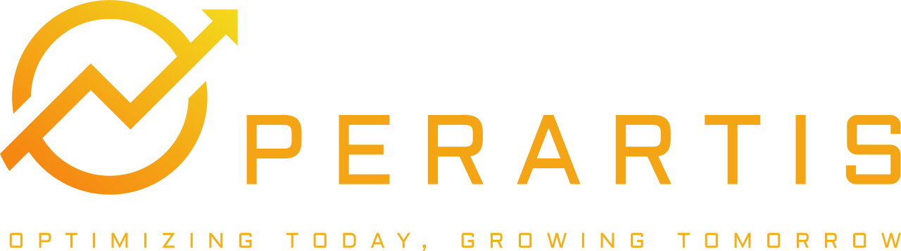
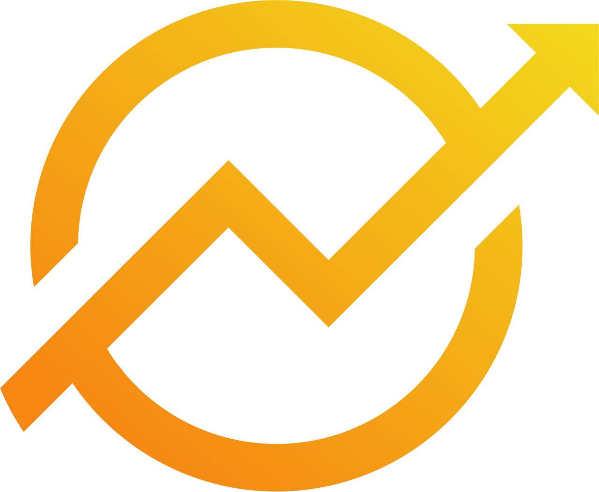

<!DOCTYPE html>
<html lang="en">

<head>
    <meta charset="UTF-8">
    <meta name="viewport" content="width=device-width, initial-scale=1.0">
    <title>Operartis APS | Terminal (New)</title>

    <link rel="icon" type="image/png" href="./icononly_transparent_quadratic.png">

    <script src="https://cdn.tailwindcss.com"></script>
    <script>
        tailwind.config = {
            darkMode: 'class',
            theme: {
                extend: {
                    colors: {
                        brand: {
                            gold: '#f59e0b',
                            dark: '#b45309',
                            obsidian: '#0f172a',
                            slate: '#1e293b'
                        }
                    },
                    fontFamily: {
                        sans: ['Inter', 'system-ui', 'sans-serif'],
                        mono: ['Roboto Mono', 'monospace'],
                    },
                    backgroundImage: {
                        'grid-pattern': "linear-gradient(to right, #1e293b 1px, transparent 1px), linear-gradient(to bottom, #1e293b 1px, transparent 1px)",
                        'grid-pattern-light': "linear-gradient(to right, #e2e8f0 1px, transparent 1px), linear-gradient(to bottom, #e2e8f0 1px, transparent 1px)",
                    }
                }
            }
        }
    </script>
    <script>
        window.getOperartisTheme = function () {
            var session = null;
            try { session = sessionStorage.getItem('theme'); } catch (e) { }
            if (session === 'light' || session === 'dark') return session;
            return 'system';
        };
        window.applyOperartisThemeClass = function (theme) {
            var systemDark = false;
            try { systemDark = window.matchMedia('(prefers-color-scheme: dark)').matches; } catch (e) { }
            var dark = theme === 'dark' || (theme === 'system' && systemDark);
            document.documentElement.classList.toggle('dark', dark);
            return dark;
        };
        window.persistOperartisTheme = function (theme) {
            try { localStorage.setItem('theme', theme); } catch (e) { }
            try {
                if (theme === 'system') sessionStorage.removeItem('theme');
                else sessionStorage.setItem('theme', theme);
            } catch (e) { }
        };
        (function () {
            try { window.applyOperartisThemeClass(window.getOperartisTheme()); } catch (e) { }
        })();
    </script>
    <script src="./operartis-lang.js"></script>
    <style>
        @import url('https://fonts.googleapis.com/css2?family=Inter:wght@300;400;600;700;900&family=Roboto+Mono:wght@400;500&display=swap');

        body {
            font-family: 'Inter', sans-serif;
        }

        .glass-panel {
            backdrop-filter: blur(12px);
            -webkit-backdrop-filter: blur(12px);
        }

        .header-util-btn {
            display: inline-flex;
            align-items: center;
            justify-content: center;
            padding: 0.375rem;
            border-radius: 9999px;
            color: rgb(100 116 139);
            transition: color 0.2s ease, background-color 0.2s ease;
        }

        .header-util-btn:hover {
            background-color: rgba(255, 255, 255, 0.2);
        }

        .dark .header-util-btn {
            color: rgb(148 163 184);
        }

        .dark .header-util-btn:hover {
            background-color: rgba(255, 255, 255, 0.05);
        }

        .header-util-icon {
            display: inline-flex;
            align-items: center;
            justify-content: center;
            width: 1.25rem;
            height: 1.25rem;
            flex-shrink: 0;
        }

        .header-util-icon svg {
            display: block;
            width: 100%;
            height: 100%;
        }

        /* Subtle Grid Animation */
        .bg-grid {
            background-size: 40px 40px;
            mask-image: radial-gradient(ellipse at center, black 40%, transparent 100%);
            -webkit-mask-image: radial-gradient(ellipse at center, black 40%, transparent 100%);
        }

        /* Modern Scrollbar for Main Page */
        ::-webkit-scrollbar {
            width: 6px;
        }

        ::-webkit-scrollbar-track {
            background: transparent;
        }

        ::-webkit-scrollbar-thumb {
            background: #cbd5e1;
            border-radius: 3px;
        }

        .dark ::-webkit-scrollbar-thumb {
            background: #334155;
        }

        /* Custom Scrollbar for Module Cards (Thinner) */
        .custom-scrollbar::-webkit-scrollbar {
            width: 4px;
        }

        .custom-scrollbar::-webkit-scrollbar-track {
            background: transparent;
        }

        .custom-scrollbar::-webkit-scrollbar-thumb {
            background-color: #cbd5e1;
            border-radius: 2px;
        }

        .dark .custom-scrollbar::-webkit-scrollbar-thumb {
            background-color: #475569;
        }

        /* Horizon nav — thin horizontal scroll */
        .horizon-nav-scroll {
            scrollbar-width: thin;
            scrollbar-color: #cbd5e1 transparent;
            overflow-x: auto;
            overflow-y: visible;
        }

        .horizon-nav-scroll::-webkit-scrollbar {
            height: 2px;
        }

        .horizon-nav-scroll::-webkit-scrollbar-track {
            background: transparent;
        }

        .horizon-nav-scroll::-webkit-scrollbar-thumb {
            background-color: #cbd5e1;
            border-radius: 9999px;
        }

        .dark .horizon-nav-scroll {
            scrollbar-color: #475569 transparent;
        }

        .dark .horizon-nav-scroll::-webkit-scrollbar-thumb {
            background-color: #475569;
        }

        .header-nav-tab {
            flex-shrink: 0;
            padding: 0.375rem 0.75rem;
            border-radius: 0.75rem;
            border: 1px solid transparent;
            backdrop-filter: blur(16px);
            -webkit-backdrop-filter: blur(16px);
            font-size: 0.625rem;
            font-weight: 700;
            letter-spacing: 0.06em;
            text-transform: uppercase;
            cursor: pointer;
            transition: color 0.2s ease, box-shadow 0.2s ease, background 0.2s ease;
            background: linear-gradient(135deg, rgba(255, 255, 255, 0.2), rgba(255, 255, 255, 0.05));
            box-shadow: 0 4px 20px rgba(0, 0, 0, 0.08), inset 0 1px 0 rgba(255, 255, 255, 0.12);
            color: #64748b;
        }

        .dark .header-nav-tab {
            background: linear-gradient(135deg, rgba(30, 41, 59, 0.35), rgba(15, 23, 42, 0.15));
            color: #94a3b8;
        }

        .header-nav-tab:hover {
            color: #d97706;
        }

        .dark .header-nav-tab:hover {
            color: #fbbf24;
        }

        .header-nav-tab-active {
            background: linear-gradient(135deg, rgba(245, 158, 11, 0.08), rgba(180, 83, 9, 0.06));
            box-shadow: 0 4px 20px rgba(245, 158, 11, 0.12), inset 0 1px 0 rgba(255, 255, 255, 0.18);
            color: #d97706;
        }

        .dark .header-nav-tab-active {
            color: #fbbf24;
        }

        .header-nav-child {
            width: 100%;
            text-align: left;
            font-size: 0.625rem;
            padding: 0.45rem 0.65rem;
            border-radius: 0.5rem;
        }

        .header-nav-aps-wrap {
            position: relative;
            flex-shrink: 0;
        }

        .header-nav-aps-menu {
            min-width: 11.5rem;
            display: flex;
            flex-direction: column;
            gap: 0.2rem;
            padding: 0.35rem;
            border-radius: 0.75rem;
            background: rgba(255, 255, 255, 0.96);
            border: 1px solid rgba(245, 158, 11, 0.22);
            box-shadow:
                0 12px 32px rgba(15, 23, 42, 0.14),
                0 0 0 1px rgba(255, 255, 255, 0.06) inset;
            backdrop-filter: blur(16px);
            -webkit-backdrop-filter: blur(16px);
            animation: header-nav-menu-in 0.18s ease-out;
        }

        .header-nav-aps-menu-floating {
            position: fixed;
            z-index: 60;
        }

        .header-nav-aps-backdrop {
            position: fixed;
            inset: 0;
            z-index: 55;
            background: rgba(2, 6, 23, 0.18);
            backdrop-filter: blur(1px);
            -webkit-backdrop-filter: blur(1px);
            animation: header-nav-backdrop-in 0.15s ease-out;
        }

        .dark .header-nav-aps-backdrop {
            background: rgba(2, 6, 23, 0.42);
        }

        @keyframes header-nav-backdrop-in {
            from { opacity: 0; }
            to { opacity: 1; }
        }

        .header-nav-aps-menu-head {
            padding: 0.35rem 0.65rem 0.25rem;
            font-size: 0.5625rem;
            font-weight: 700;
            letter-spacing: 0.12em;
            text-transform: uppercase;
            color: #b45309;
            border-bottom: 1px solid rgba(245, 158, 11, 0.15);
            margin-bottom: 0.15rem;
        }

        .dark .header-nav-aps-menu-head {
            color: #fbbf24;
        }

        .dark .header-nav-aps-menu {
            background: rgba(15, 23, 42, 0.96);
            border-color: rgba(245, 158, 11, 0.2);
            box-shadow:
                0 12px 32px rgba(0, 0, 0, 0.45),
                0 0 0 1px rgba(255, 255, 255, 0.04) inset;
        }

        @keyframes header-nav-menu-in {
            from {
                opacity: 0;
                transform: translateY(-4px);
            }

            to {
                opacity: 1;
                transform: translateY(0);
            }
        }

        @media (prefers-reduced-motion: reduce) {
            .header-nav-aps-menu {
                animation: none;
            }
        }

        .header-nav-chevron {
            display: inline-block;
            margin-left: 0.2rem;
            opacity: 0.65;
            transition: transform 0.2s ease;
        }

        .header-nav-chevron-open {
            transform: rotate(180deg);
        }

        .mobile-nav-panel {
            max-height: calc(100dvh - 1rem - env(safe-area-inset-top) - env(safe-area-inset-bottom));
            animation: mobileNavIn 0.22s cubic-bezier(0.16, 1, 0.3, 1) forwards;
            padding-bottom: max(1rem, env(safe-area-inset-bottom));
        }

        @keyframes mobileNavIn {
            from {
                opacity: 0;
                transform: translateY(18px) scale(0.98);
            }

            to {
                opacity: 1;
                transform: translateY(0) scale(1);
            }
        }

        .touch-open-card {
            touch-action: manipulation;
            -webkit-tap-highlight-color: transparent;
        }

        @media (hover: none), (pointer: coarse) {
            .touch-open-card .quick-view-overlay {
                display: none;
            }

            .touch-open-card .card-visible-content,
            .touch-open-card .card-footer-cta {
                opacity: 1 !important;
                filter: none !important;
            }

            .touch-open-card:active {
                transform: scale(0.99);
            }
        }

        @media (max-width: 767px) {
            .horizon-pill,
            .page-scroll-target {
                scroll-margin-top: 4.75rem;
            }

            .reveal-hidden {
                transform: translateY(18px);
                filter: blur(2px);
            }

            .modal-content {
                border-bottom-left-radius: 0;
                border-bottom-right-radius: 0;
            }

            .sc-flow-scroll {
                scroll-snap-type: x proximity;
                -webkit-overflow-scrolling: touch;
            }

            .sc-flow-scroll button {
                scroll-snap-align: center;
            }
        }

        /* Reveal Animation Base Classes */
        .reveal-base {
            transition: all 1s cubic-bezier(0.16, 1, 0.3, 1);
        }

        .reveal-hidden {
            opacity: 0;
            transform: translateY(40px);
            filter: blur(8px);
        }

        .reveal-visible {
            opacity: 1;
            transform: translateY(0);
            filter: blur(0);
        }

        /* Modal / Overlay Animations */
        @keyframes modalFadeIn {
            from {
                opacity: 0;
                backdrop-filter: blur(0px);
            }

            to {
                opacity: 1;
                backdrop-filter: blur(12px);
            }
        }

        @keyframes modalContentSlideUp {
            from {
                opacity: 0;
                transform: translateY(20px) scale(0.95);
            }

            to {
                opacity: 1;
                transform: translateY(0) scale(1);
            }
        }

        .modal-backdrop {
            animation: modalFadeIn 0.4s cubic-bezier(0.16, 1, 0.3, 1) forwards;
        }

        .modal-content {
            animation: modalContentSlideUp 0.5s cubic-bezier(0.16, 1, 0.3, 1) 0.1s forwards opacity;
        }

        /* Matrix Connector Lines (Optional/Advanced) */
        .connector-line {
            position: absolute;
            background: rgba(148, 163, 184, 0.2);
            z-index: 0;
        }

        .dark .connector-line {
            background: rgba(51, 65, 85, 0.3);
        }

        /* Background Blob Animation */
        @keyframes blob {
            0% {
                transform: translate(0px, 0px) scale(1);
            }

            33% {
                transform: translate(30px, -50px) scale(1.1);
            }

            66% {
                transform: translate(-20px, 20px) scale(0.9);
            }

            100% {
                transform: translate(0px, 0px) scale(1);
            }
        }

        .animate-blob {
            animation: blob 7s infinite;
        }

        .animation-delay-2000 {
            animation-delay: 2s;
        }

        .animation-delay-4000 {
            animation-delay: 4s;
        }

        /* Hero — static liquid glass (modular-block recipe, no hover) */
        .hero-liquid-glass {
            background-image:
                radial-gradient(ellipse 80% 60% at 50% -20%, rgba(245, 158, 11, 0.12), transparent),
                radial-gradient(ellipse 50% 40% at 100% 0%, rgba(14, 165, 233, 0.06), transparent),
                radial-gradient(ellipse 50% 50% at 0% 100%, rgba(245, 158, 11, 0.05), transparent),
                linear-gradient(135deg, rgba(255, 255, 255, 0.24) 0%, rgba(255, 255, 255, 0.08) 48%, rgba(245, 158, 11, 0.05) 100%);
            backdrop-filter: blur(24px);
            -webkit-backdrop-filter: blur(24px);
            box-shadow:
                0 8px 32px rgba(245, 158, 11, 0.1),
                0 12px 40px rgba(15, 23, 42, 0.08),
                inset 0 1px 0 0 rgba(255, 255, 255, 0.25),
                inset 0 -1px 0 0 rgba(255, 255, 255, 0.06);
        }

        .dark .hero-liquid-glass {
            background-image:
                radial-gradient(ellipse 80% 60% at 50% -20%, rgba(245, 158, 11, 0.08), transparent),
                radial-gradient(ellipse 50% 40% at 100% 0%, rgba(56, 189, 248, 0.04), transparent),
                radial-gradient(ellipse 50% 50% at 0% 100%, rgba(180, 83, 9, 0.06), transparent),
                linear-gradient(135deg, rgba(245, 158, 11, 0.07) 0%, rgba(30, 41, 59, 0.45) 46%, rgba(15, 23, 42, 0.22) 100%);
            box-shadow:
                0 8px 32px rgba(245, 158, 11, 0.06),
                0 12px 40px rgba(0, 0, 0, 0.35),
                inset 0 1px 0 0 rgba(255, 255, 255, 0.12),
                inset 0 -1px 0 0 rgba(255, 255, 255, 0.04);
        }

        .stats-liquid-glass {
            position: relative;
            isolation: isolate;
        }

        .stats-liquid-cell {
            position: relative;
            background: transparent;
            box-shadow:
                inset 1px 0 0 rgba(255, 255, 255, 0.16),
                inset -1px 0 0 rgba(15, 23, 42, 0.04),
                inset 0 1px 0 rgba(255, 255, 255, 0.08);
        }

        .dark .stats-liquid-cell {
            background: transparent;
            box-shadow:
                inset 1px 0 0 rgba(255, 255, 255, 0.08),
                inset -1px 0 0 rgba(255, 255, 255, 0.035),
                inset 0 1px 0 rgba(255, 255, 255, 0.035);
        }

        .section-eyebrow {
            letter-spacing: 0.2em;
        }

        .horizon-pill,
        .page-scroll-target {
            scroll-margin-top: 5.5rem;
        }

        .landing-canvas-bg {
            position: fixed;
            inset: 0;
            z-index: 0;
            width: 100%;
            height: 100%;
            pointer-events: none;
        }

        /* Capability ribbon — transparent liquid glass */
        @keyframes opusMarquee {
            0% {
                transform: translateX(0);
            }

            100% {
                transform: translateX(-50%);
            }
        }

        .opus-marquee {
            animation: opusMarquee 38s linear infinite;
            -webkit-mask-image: linear-gradient(90deg, transparent, #000 6%, #000 94%, transparent);
            mask-image: linear-gradient(90deg, transparent, #000 6%, #000 94%, transparent);
        }

        .opus-marquee-wrap {
            background: transparent;
            backdrop-filter: blur(10px) saturate(1.04);
            -webkit-backdrop-filter: blur(10px) saturate(1.04);
            box-shadow:
                inset 0 1px 0 rgba(255, 255, 255, 0.22),
                inset 0 -1px 0 rgba(255, 255, 255, 0.04);
        }

        .opus-marquee-wrap::before {
            content: '';
            position: absolute;
            inset: 1px;
            border-radius: inherit;
            background: linear-gradient(105deg, rgba(255, 255, 255, 0.08), transparent 38%, rgba(255, 255, 255, 0.025) 78%, transparent);
            pointer-events: none;
        }

        .dark .opus-marquee-wrap {
            background: transparent;
            box-shadow:
                inset 0 1px 0 rgba(255, 255, 255, 0.045),
                inset 0 -1px 0 rgba(255, 255, 255, 0.01);
        }

        .dark .opus-marquee-wrap::before {
            background: linear-gradient(105deg, rgba(255, 255, 255, 0.018), transparent 40%, rgba(255, 255, 255, 0.01) 78%, transparent);
        }

        .opus-marquee-fade-left,
        .opus-marquee-fade-right {
            display: none;
        }

        .opus-marquee-chip {
            position: relative;
            overflow: hidden;
            border: 1px solid rgba(148, 163, 184, 0.22);
            border-radius: 9999px;
            background: rgba(255, 255, 255, 0.14);
            backdrop-filter: blur(12px) saturate(1.08);
            -webkit-backdrop-filter: blur(12px) saturate(1.08);
            box-shadow:
                0 6px 18px rgba(15, 23, 42, 0.035),
                inset 0 1px 0 rgba(255, 255, 255, 0.3),
                inset 0 -1px 0 rgba(255, 255, 255, 0.05);
            opacity: 0.92;
        }

        .opus-marquee-chip::before {
            content: '';
            position: absolute;
            inset: 1px;
            border-radius: inherit;
            background: linear-gradient(120deg, rgba(255, 255, 255, 0.16), transparent 48%, rgba(255, 255, 255, 0.04));
            pointer-events: none;
        }

        .dark .opus-marquee-chip {
            border-color: rgba(255, 255, 255, 0.075);
            background: rgba(255, 255, 255, 0.035);
            box-shadow:
                inset 0 1px 0 rgba(255, 255, 255, 0.06),
                inset 0 -1px 0 rgba(255, 255, 255, 0.012);
            opacity: 0.86;
        }

        .dark .opus-marquee-chip::before {
            background: linear-gradient(120deg, rgba(255, 255, 255, 0.035), transparent 50%, rgba(255, 255, 255, 0.012));
        }

        .opus-marquee-wrap:hover .opus-marquee {
            animation-play-state: paused;
        }

        /* Supply chain flow diagram */
        @keyframes sc-flow-dash {
            to {
                stroke-dashoffset: -22;
            }
        }

        @keyframes sc-arrow-pulse {

            0%,
            100% {
                opacity: 0.45;
            }

            50% {
                opacity: 1;
            }
        }

        @keyframes sc-pulse-ring {

            0%,
            100% {
                transform: scale(1);
                opacity: 0.45;
            }

            50% {
                transform: scale(1.06);
                opacity: 0.15;
            }
        }

        @keyframes sc-node-glow {

            0%,
            100% {
                box-shadow: 0 0 0 0 rgba(245, 158, 11, 0.35);
            }

            50% {
                box-shadow: 0 0 0 10px rgba(245, 158, 11, 0);
            }
        }

        .sc-flow-arrow {
            stroke-dasharray: 5 4;
            animation: sc-flow-dash 1.1s linear infinite;
        }

        .sc-flow-arrow-active {
            animation: sc-flow-dash 0.65s linear infinite, sc-arrow-pulse 1.8s ease-in-out infinite;
        }

        .sc-arrow-pulse {
            animation: sc-arrow-pulse 1.8s ease-in-out infinite;
            transform-box: fill-box;
            transform-origin: center;
        }

        .sc-pulse-ring {
            animation: sc-pulse-ring 2.4s ease-in-out infinite;
        }

        .sc-node-active {
            animation: sc-node-glow 2.4s ease-in-out infinite;
        }

        .sc-node-glass {
            background-image:
                linear-gradient(145deg, rgba(255, 255, 255, 0.78) 0%, rgba(255, 255, 255, 0.2) 52%, rgba(245, 158, 11, 0.05) 100%);
            backdrop-filter: blur(14px);
            -webkit-backdrop-filter: blur(14px);
            box-shadow:
                0 4px 16px rgba(15, 23, 42, 0.06),
                inset 0 1px 0 rgba(255, 255, 255, 0.38);
        }

        .dark .sc-node-glass {
            background-image:
                linear-gradient(145deg, rgba(30, 41, 59, 0.78) 0%, rgba(15, 23, 42, 0.48) 52%, rgba(245, 158, 11, 0.07) 100%);
            box-shadow:
                0 4px 16px rgba(0, 0, 0, 0.28),
                inset 0 1px 0 rgba(255, 255, 255, 0.09);
        }

        .sc-node-glass-lit {
            border-color: rgba(245, 158, 11, 0.22);
            color: #d97706;
        }

        .dark .sc-node-glass-lit {
            border-color: rgba(245, 158, 11, 0.28);
            color: #fbbf24;
        }

        .sc-node-glass-active {
            border-color: rgba(245, 158, 11, 0.48);
            color: #d97706;
            background-image:
                linear-gradient(145deg, rgba(255, 251, 235, 0.92) 0%, rgba(254, 243, 199, 0.38) 48%, rgba(245, 158, 11, 0.14) 100%);
            box-shadow:
                0 0 0 1px rgba(245, 158, 11, 0.12),
                0 8px 22px rgba(245, 158, 11, 0.14),
                inset 0 1px 0 rgba(255, 255, 255, 0.45);
        }

        .dark .sc-node-glass-active {
            color: #fbbf24;
            background-image:
                linear-gradient(145deg, rgba(120, 53, 15, 0.5) 0%, rgba(69, 26, 3, 0.38) 48%, rgba(245, 158, 11, 0.12) 100%);
            box-shadow:
                0 0 0 1px rgba(245, 158, 11, 0.18),
                0 8px 22px rgba(245, 158, 11, 0.1),
                inset 0 1px 0 rgba(255, 255, 255, 0.1);
        }

        .sc-pulse-ring-gold {
            background: radial-gradient(ellipse at center, rgba(245, 158, 11, 0.2), transparent 72%);
        }

        .sc-detail-glass {
            background-image:
                radial-gradient(ellipse 70% 55% at 12% 0%, rgba(245, 158, 11, 0.1), transparent 58%),
                linear-gradient(135deg, rgba(255, 255, 255, 0.44) 0%, rgba(255, 255, 255, 0.14) 50%, rgba(245, 158, 11, 0.05) 100%);
            backdrop-filter: blur(20px);
            -webkit-backdrop-filter: blur(20px);
            box-shadow:
                0 6px 28px rgba(245, 158, 11, 0.07),
                inset 0 1px 0 rgba(255, 255, 255, 0.28);
        }

        .dark .sc-detail-glass {
            background-image:
                radial-gradient(ellipse 70% 55% at 12% 0%, rgba(245, 158, 11, 0.08), transparent 58%),
                linear-gradient(135deg, rgba(30, 41, 59, 0.58) 0%, rgba(15, 23, 42, 0.38) 50%, rgba(245, 158, 11, 0.06) 100%);
            box-shadow:
                0 6px 28px rgba(0, 0, 0, 0.32),
                inset 0 1px 0 rgba(255, 255, 255, 0.08);
        }

        .sc-flow-scroll {
            overflow-x: auto;
            overflow-y: visible;
            scrollbar-gutter: stable;
        }

        .sc-flow-scroll::-webkit-scrollbar {
            height: 4px;
        }

        .sc-flow-scroll::-webkit-scrollbar:vertical {
            width: 0;
            display: none;
        }

        .sc-flow-connector {
            transition: left 0.35s ease, width 0.35s ease, top 0.35s ease;
        }

        .sc-flow-skip-path {
            transition: d 0.35s ease;
        }

        /* ERP · APS · MES integration loop */
        @keyframes i4l-gap-pulse {

            0%,
            100% {
                opacity: 0.45;
            }

            50% {
                opacity: 1;
            }
        }

        @keyframes i4l-aps-enter {
            0% {
                opacity: 0;
                transform: scale(0.82);
            }

            100% {
                opacity: 1;
                transform: scale(1);
            }
        }

        @keyframes i4l-loop-glow {

            0%,
            100% {
                opacity: 0.55;
            }

            50% {
                opacity: 1;
            }
        }

        @keyframes i4l-flow-dash {
            to {
                stroke-dashoffset: -24;
            }
        }

        @keyframes i4l-orbit {
            0% {
                stroke-dashoffset: 0;
            }

            100% {
                stroke-dashoffset: -48;
            }
        }

        .i4l-gap-line {
            stroke-dasharray: 10 7;
            animation: i4l-gap-pulse 1.6s ease-in-out infinite;
        }

        .i4l-flow-arrow {
            stroke-dasharray: 6 4;
            animation: i4l-flow-dash 0.95s linear infinite;
        }

        .i4l-flow-arrow-2 {
            animation-delay: 0.32s;
        }

        .i4l-flow-arrow-3 {
            animation-delay: 0.64s;
        }

        .i4l-loop-bracket {
            stroke-dasharray: 6 4;
            animation: i4l-orbit 2.4s linear infinite;
        }

        @keyframes i4l-node-pop {
            0% {
                opacity: 0;
                transform: scale(0.88);
            }

            100% {
                opacity: 1;
                transform: scale(1);
            }
        }

        @keyframes i4l-tag-rise {
            0% {
                opacity: 0;
                transform: translate(-50%, calc(-50% + 6px));
            }

            100% {
                opacity: 1;
                transform: translate(-50%, -50%);
            }
        }

        @keyframes i4l-break-blink {

            0%,
            100% {
                opacity: 0.85;
            }

            50% {
                opacity: 0.35;
            }
        }

        .i4l-phase-layer {
            transition: opacity 0.6s cubic-bezier(0.16, 1, 0.3, 1);
        }

        .i4l-phase-fade {
            transition: opacity 0.6s cubic-bezier(0.16, 1, 0.3, 1);
        }

        .i4l-phase-hidden {
            opacity: 0;
            pointer-events: none;
        }

        .i4l-phase-hidden .i4l-gap-line,
        .i4l-phase-hidden .i4l-flow-arrow {
            animation-play-state: paused;
        }

        .i4l-diagram-stage {
            position: relative;
            width: 100%;
            max-width: 480px;
            aspect-ratio: 480 / 320;
            margin: 0 auto;
        }

        .i4l-diagram-svg {
            position: absolute;
            inset: 0;
            width: 100%;
            height: 100%;
            overflow: visible;
        }

        .i4l-node {
            position: absolute;
            display: flex;
            flex-direction: column;
            align-items: center;
            text-align: center;
            width: 124px;
            transform: translate(-50%, -50%);
            z-index: 2;
        }

        .i4l-node-labels {
            margin-top: 0.5rem;
            min-height: 2.85rem;
            width: 100%;
            display: flex;
            flex-direction: column;
            align-items: center;
            justify-content: flex-start;
        }

        .i4l-node-pop .i4l-node-icon {
            animation: i4l-node-pop 0.7s cubic-bezier(0.16, 1, 0.3, 1) both;
        }

        .i4l-node-icon {
            position: relative;
            display: flex;
            align-items: center;
            justify-content: center;
            width: 4.25rem;
            height: 4.25rem;
            border-radius: 1.1rem;
            border: 1.5px solid rgba(148, 163, 184, 0.4);
            background: linear-gradient(160deg, rgba(255, 255, 255, 0.96), rgba(248, 250, 252, 0.88));
            box-shadow: 0 10px 26px rgba(15, 23, 42, 0.1);
            transition: border-color 0.5s ease, box-shadow 0.5s ease, background 0.5s ease;
        }

        .dark .i4l-node-icon {
            background: linear-gradient(160deg, rgba(30, 41, 59, 0.95), rgba(15, 23, 42, 0.92));
            border-color: rgba(71, 85, 105, 0.75);
            box-shadow: 0 10px 26px rgba(0, 0, 0, 0.4);
        }

        .i4l-node-icon-active {
            border-color: rgba(245, 158, 11, 0.8);
            box-shadow: 0 0 0 4px rgba(245, 158, 11, 0.14), 0 14px 32px rgba(245, 158, 11, 0.22);
        }

        .i4l-node-icon-ghost {
            border-style: dashed;
            border-width: 2px;
            border-color: rgba(244, 63, 94, 0.5);
            background: rgba(255, 241, 242, 0.4);
            box-shadow: none;
        }

        .dark .i4l-node-icon-ghost {
            background: rgba(76, 5, 25, 0.28);
            border-color: rgba(251, 113, 133, 0.45);
        }

        .i4l-node-icon-aps {
            width: 5rem;
            height: 5rem;
            border-radius: 1.4rem;
        }

        .i4l-node-icon-aps.i4l-node-icon-active {
            background: linear-gradient(160deg, rgba(254, 243, 199, 0.95), rgba(255, 255, 255, 0.9));
        }

        .dark .i4l-node-icon-aps.i4l-node-icon-active {
            background: linear-gradient(160deg, rgba(120, 53, 15, 0.45), rgba(15, 23, 42, 0.92));
        }

        .i4l-qmark {
            position: absolute;
            top: -8px;
            right: -8px;
            width: 1.15rem;
            height: 1.15rem;
            border-radius: 9999px;
            display: flex;
            align-items: center;
            justify-content: center;
            font-size: 0.7rem;
            font-weight: 900;
            color: #fff;
            background: #f43f5e;
            box-shadow: 0 2px 6px rgba(244, 63, 94, 0.5);
            animation: i4l-break-blink 1.6s ease-in-out infinite;
        }

        .i4l-flow-tag {
            position: absolute;
            z-index: 3;
            transform: translate(-50%, -50%);
            white-space: nowrap;
            font-size: 0.6rem;
            font-weight: 700;
            letter-spacing: 0.05em;
            text-transform: uppercase;
            padding: 0.22rem 0.6rem;
            border-radius: 9999px;
            border: 1px solid rgba(226, 232, 240, 0.9);
            background: rgba(255, 255, 255, 0.96);
            color: #64748b;
            box-shadow: 0 4px 12px rgba(15, 23, 42, 0.08);
            animation: i4l-tag-rise 0.6s cubic-bezier(0.16, 1, 0.3, 1) both;
        }

        .dark .i4l-flow-tag {
            background: rgba(15, 23, 42, 0.96);
            border-color: rgba(51, 65, 85, 0.9);
            color: #cbd5e1;
        }

        .i4l-flow-tag-gold {
            color: #b45309;
            border-color: rgba(245, 158, 11, 0.45);
            background: rgba(255, 251, 235, 0.97);
        }

        .dark .i4l-flow-tag-gold {
            color: #fbbf24;
            background: rgba(120, 53, 15, 0.4);
            border-color: rgba(245, 158, 11, 0.5);
        }

        @media (max-width: 639px) {
            .i4l-diagram-stage {
                aspect-ratio: 480 / 350;
            }

            .i4l-node {
                width: 5.5rem !important;
            }

            .i4l-node-icon {
                width: 3.75rem;
                height: 3.75rem;
                border-radius: 1rem;
            }

            .i4l-node-icon-aps {
                width: 4.25rem;
                height: 4.25rem;
            }

            .i4l-node-labels {
                min-height: 1.35rem;
                margin-top: 0.38rem;
            }

            .i4l-node-labels span:last-child {
                display: none;
            }

            .i4l-flow-tag {
                font-size: 0.52rem;
                letter-spacing: 0.035em;
                padding: 0.18rem 0.45rem;
            }

            .i4l-flow-tag-recording {
                top: 72% !important;
                max-width: 9.5rem;
                white-space: normal;
                line-height: 1.15;
                text-align: center;
            }
        }

        /* Analytics maturity section */
        .aa-maturity-chart {
            position: relative;
            overflow: hidden;
            background: transparent;
        }

        .aa-maturity-axis-y {
            display: inline-block;
            transform: rotate(-90deg);
            transform-origin: center center;
            white-space: nowrap;
        }

        .aa-maturity-axis-y-wrap {
            display: flex;
            align-items: center;
            justify-content: center;
            height: 100%;
            width: 100%;
        }

        .aa-maturity-arrow-svg {
            pointer-events: none;
            z-index: 1;
        }

        .aa-maturity-arrow-line {
            stroke-linecap: round;
        }

        .aa-bar {
            transition: height 0.45s cubic-bezier(0.16, 1, 0.3, 1), background-color 0.35s ease, border-color 0.35s ease;
            border: 1px solid rgba(245, 158, 11, 0.2);
            border-bottom: 0;
            box-shadow: none;
        }

        .aa-bar-flat-0,
        .aa-flow-accent-0,
        .aa-chevron-active-0 {
            --aa-accent-bg: #fde68a;
            --aa-accent-border: #fcd34d;
            --aa-accent-fg: #92400e;
        }

        .dark .aa-bar-flat-0,
        .dark .aa-flow-accent-0,
        .dark .aa-chevron-active-0 {
            --aa-accent-bg: #b45309;
            --aa-accent-border: #d97706;
            --aa-accent-fg: #fffbeb;
        }

        .aa-bar-flat-1,
        .aa-flow-accent-1,
        .aa-chevron-active-1 {
            --aa-accent-bg: #fcd34d;
            --aa-accent-border: #fbbf24;
            --aa-accent-fg: #92400e;
        }

        .dark .aa-bar-flat-1,
        .dark .aa-flow-accent-1,
        .dark .aa-chevron-active-1 {
            --aa-accent-bg: #d97706;
            --aa-accent-border: #f59e0b;
            --aa-accent-fg: #fffbeb;
        }

        .aa-band-label-info {
            color: #fde68a;
        }

        .dark .aa-band-label-info {
            color: #b45309;
        }

        .aa-bar-flat-2,
        .aa-flow-accent-2,
        .aa-chevron-active-2 {
            --aa-accent-bg: #fbbf24;
            --aa-accent-border: #f59e0b;
            --aa-accent-fg: #78350f;
        }

        .dark .aa-bar-flat-2,
        .dark .aa-flow-accent-2,
        .dark .aa-chevron-active-2 {
            --aa-accent-bg: #f59e0b;
            --aa-accent-border: #d97706;
            --aa-accent-fg: #fffbeb;
        }

        .aa-bar-flat-3,
        .aa-flow-accent-3,
        .aa-chevron-active-3 {
            --aa-accent-bg: #f59e0b;
            --aa-accent-border: #d97706;
            --aa-accent-fg: #fffbeb;
        }

        .dark .aa-bar-flat-3,
        .dark .aa-flow-accent-3,
        .dark .aa-chevron-active-3 {
            --aa-accent-bg: #f59e0b;
            --aa-accent-border: #fbbf24;
            --aa-accent-fg: #fffbeb;
        }

        .aa-bar-flat-0,
        .aa-bar-flat-1,
        .aa-bar-flat-2,
        .aa-bar-flat-3 {
            background-color: var(--aa-accent-bg);
            border-color: var(--aa-accent-border);
        }

        .aa-chevron-active-0,
        .aa-chevron-active-1,
        .aa-chevron-active-2,
        .aa-chevron-active-3 {
            background-color: var(--aa-accent-bg);
            color: var(--aa-accent-fg);
        }

        .aa-bar-active {
            border-color: #d97706;
            outline: 2px solid rgba(245, 158, 11, 0.35);
            outline-offset: 1px;
        }

        .aa-chevron-track {
            display: flex;
            width: 100%;
            margin-bottom: 1.5rem;
        }

        .aa-chevron-seg {
            position: relative;
            flex: 1 1 0;
            min-width: 0;
            margin-left: -10px;
            padding: 0.75rem 0.85rem 0.75rem 1.35rem;
            border: none;
            cursor: pointer;
            text-align: left;
            transition: filter 0.2s ease, opacity 0.2s ease, z-index 0s;
            clip-path: polygon(0 0, calc(100% - 11px) 0, 100% 50%, calc(100% - 11px) 100%, 0 100%, 11px 50%);
            z-index: 1;
        }

        .aa-chevron-seg:first-child {
            margin-left: 0;
            padding-left: 0.85rem;
            clip-path: polygon(0 0, calc(100% - 11px) 0, 100% 50%, calc(100% - 11px) 100%, 0 100%);
        }

        .aa-chevron-seg:last-child {
            padding-right: 0.85rem;
            clip-path: polygon(0 0, 100% 0, 100% 100%, 0 100%, 11px 50%);
        }

        .aa-chevron-seg-inactive {
            background-color: #e7e5e4;
            color: #57534e;
        }

        .dark .aa-chevron-seg-inactive {
            background-color: #334155;
            color: #cbd5e1;
        }

        .aa-chevron-seg-inactive:hover {
            filter: brightness(1.04);
            z-index: 2;
        }

        .aa-chevron-seg-active {
            z-index: 3;
            filter: brightness(1.02);
        }

        .aa-chevron-seg:focus-visible {
            outline: 2px solid rgba(245, 158, 11, 0.55);
            outline-offset: 2px;
        }

        .aa-level-title-0 {
            color: #b45309;
        }

        .dark .aa-level-title-0 {
            color: #fcd34d;
        }

        .aa-level-title-1 {
            color: #d97706;
        }

        .dark .aa-level-title-1 {
            color: #fbbf24;
        }

        .aa-level-title-2 {
            color: #f59e0b;
        }

        .dark .aa-level-title-2 {
            color: #fbbf24;
        }

        .aa-level-title-3 {
            color: #d97706;
        }

        .dark .aa-level-title-3 {
            color: #f59e0b;
        }

        .aa-human-bar {
            transition: width 0.5s cubic-bezier(0.16, 1, 0.3, 1), opacity 0.35s ease;
        }

        .aa-human-bar-fill {
            background: linear-gradient(90deg, #fbbf24, #f59e0b);
        }

        .dark .aa-human-bar-fill {
            background: linear-gradient(90deg, #f59e0b, #d97706);
        }

        .aa-flow-stage {
            position: relative;
            display: flex;
            flex-direction: column;
            height: auto;
            min-height: 0;
            overflow: hidden;
            transition: border-color 0.35s ease, box-shadow 0.35s ease;
        }

        .aa-flow-stage::before {
            content: '';
            position: absolute;
            inset: 0 auto 0 0;
            width: 3px;
            background: linear-gradient(180deg, rgba(245, 158, 11, 0.85), rgba(245, 158, 11, 0.2));
            opacity: 0.72;
        }

        .aa-flow-stage--muted::before {
            background: linear-gradient(180deg, rgba(148, 163, 184, 0.65), rgba(148, 163, 184, 0.18));
        }

        .aa-flow-stage-head {
            display: flex;
            align-items: flex-start;
            justify-content: space-between;
            gap: 0.55rem;
            margin-bottom: 0.75rem;
            min-width: 0;
        }

        .aa-flow-stage-title {
            height: auto;
            min-width: 0;
            overflow: visible;
            line-height: 1.18;
            overflow-wrap: break-word;
            word-break: normal;
            hyphens: none;
        }

        .aa-flow-stage-grid[class*='aa-flow-accent-'] .aa-flow-stage-title,
        .aa-flow-stage-grid[class*='aa-flow-accent-'] .aa-flow-stage-title[class*='aa-level-title-'] {
            color: var(--aa-accent-border);
        }

        .dark .aa-flow-stage-grid[class*='aa-flow-accent-'] .aa-flow-stage-title,
        .dark .aa-flow-stage-grid[class*='aa-flow-accent-'] .aa-flow-stage-title[class*='aa-level-title-'] {
            color: var(--aa-accent-bg);
        }

        .aa-flow-stage-grid .aa-flow-stage--muted .aa-flow-stage-title {
            color: rgb(100 116 139);
        }

        .dark .aa-flow-stage-grid .aa-flow-stage--muted .aa-flow-stage-title {
            color: rgb(148 163 184);
        }

        .aa-flow-stage-index {
            display: inline-flex;
            width: 1.6rem;
            height: 1.6rem;
            flex: 0 0 auto;
            align-items: center;
            justify-content: center;
            border-radius: 9999px;
            border: 1px solid rgba(245, 158, 11, 0.22);
            background: rgba(255, 255, 255, 0.68);
            color: #d97706;
            font-size: 0.62rem;
            font-weight: 800;
            letter-spacing: 0.02em;
        }

        .dark .aa-flow-stage-index {
            border-color: rgba(245, 158, 11, 0.22);
            background: rgba(15, 23, 42, 0.72);
            color: #fbbf24;
        }

        .aa-flow-stage-grid[class*='aa-flow-accent-'] .aa-flow-stage-index {
            border-color: var(--aa-accent-border);
            background-color: var(--aa-accent-bg);
            color: var(--aa-accent-fg);
        }

        .aa-flow-stage-body {
            flex: 1 1 auto;
            min-height: 0;
            overflow: visible;
        }

        .aa-flow-stage--muted .aa-flow-stage-title,
        .aa-flow-stage--muted .aa-flow-stage-body {
            opacity: 0.7;
        }

        .aa-flow-stage-detail {
            overflow-wrap: anywhere;
            hyphens: auto;
        }

        .aa-human-meter {
            display: flex;
            height: 0.62rem;
            overflow: hidden;
            border-radius: 9999px;
            background: rgba(203, 213, 225, 0.68);
        }

        .dark .aa-human-meter {
            background: rgba(51, 65, 85, 0.8);
        }

        .aa-human-meter-model {
            flex: 1 1 auto;
            background: rgba(148, 163, 184, 0.28);
        }

        .aa-flow-stage-bar-labels {
            height: auto;
            flex-shrink: 0;
        }

        .aa-prescriptive-toggle {
            display: grid;
            grid-template-columns: repeat(2, minmax(0, 1fr));
            gap: 0.125rem;
        }

        .aa-prescriptive-toggle-button {
            min-width: 0;
            white-space: normal;
            overflow-wrap: anywhere;
            hyphens: auto;
        }

        .aa-flow-stage-active {
            box-shadow: 0 10px 24px rgba(15, 23, 42, 0.05), 0 0 0 1px rgba(245, 158, 11, 0.14);
        }

        .aa-flow-connector {
            position: relative;
        }

        .aa-flow-stage-grid {
            display: grid;
            grid-template-columns: minmax(0, 1fr);
            gap: 0.625rem;
            align-items: stretch;
        }

        @media (min-width: 390px) and (max-width: 1023px) {
            .aa-flow-stage-grid {
                grid-template-columns: repeat(2, minmax(0, 1fr));
                gap: 0.75rem;
            }

            .aa-flow-stage-results {
                grid-column: 1 / -1;
            }

            .aa-flow-connector::after {
                display: none;
            }
        }

        @media (min-width: 1024px) {
            .aa-flow-stage-grid {
                grid-template-columns: 1.05fr 1.22fr 1fr 1fr 1.35fr;
                gap: 0.875rem;
            }

            .aa-flow-stage-results {
                grid-column: auto;
            }

            .aa-flow-stage {
                min-height: 8.5rem;
            }

            .aa-flow-stage-title {
                min-height: 0;
            }

            .aa-flow-stage-body {
                flex: 1 1 auto;
            }

            .aa-flow-stage-bar-labels {
                min-height: 0;
            }

            .aa-flow-connector::after {
                content: '';
                position: absolute;
                right: -0.88rem;
                top: 50%;
                transform: translateY(-50%);
                width: 0.88rem;
                height: 1px;
                background: linear-gradient(90deg, rgba(245, 158, 11, 0.45), rgba(148, 163, 184, 0.35));
                pointer-events: none;
            }

            .aa-flow-connector:last-child::after {
                display: none;
            }
        }

        /* OR analytics process cycle */
        @keyframes or-cycle-dash {
            to {
                stroke-dashoffset: -20;
            }
        }

        @keyframes or-node-pulse {

            0%,
            100% {
                box-shadow: 0 0 0 0 rgba(245, 158, 11, 0.35);
            }

            50% {
                box-shadow: 0 0 0 12px rgba(245, 158, 11, 0);
            }
        }

        @keyframes or-node-pop {
            0% {
                transform: scale(0.88);
                opacity: 0.65;
            }

            55% {
                transform: scale(1.06);
            }

            100% {
                transform: scale(1);
                opacity: 1;
            }
        }

        @keyframes or-node-enter {
            0% {
                opacity: 0;
                transform: translate(-50%, -50%) scale(0.5);
            }

            65% {
                opacity: 1;
                transform: translate(-50%, -50%) scale(1.07);
            }

            100% {
                opacity: 1;
                transform: translate(-50%, -50%) scale(1);
            }
        }

        .or-node-enter {
            animation: or-node-enter 0.7s cubic-bezier(0.16, 1, 0.3, 1) both;
        }

        .or-cycle-segment-hidden,
        .or-cycle-node-dot-hidden {
            opacity: 0;
            pointer-events: none;
        }

        .or-cycle-stage {
            position: relative;
            width: 100%;
            max-width: 36rem;
            margin-left: auto;
            margin-right: auto;
            aspect-ratio: 1;
            padding: 1.25rem;
            overflow: visible;
        }

        .or-cycle-svg {
            position: absolute;
            inset: 0;
            width: 100%;
            height: 100%;
            z-index: 0;
            overflow: visible;
        }

        .or-cycle-track {
            fill: none;
            stroke: rgba(148, 163, 184, 0.28);
            stroke-width: 2.5;
        }

        .or-cycle-node-dot {
            fill: rgba(148, 163, 184, 0.55);
            transition: fill 0.35s ease, r 0.35s ease;
        }

        .dark .or-cycle-node-dot {
            fill: rgba(100, 116, 139, 0.75);
        }

        .or-cycle-node-dot-active {
            fill: #f59e0b;
        }

        .or-cycle-node-dot-past {
            fill: rgba(245, 158, 11, 0.5);
        }

        .dark .or-cycle-track {
            stroke: rgba(71, 85, 105, 0.65);
        }

        .or-cycle-segment {
            fill: none;
            stroke-width: 3;
            stroke-linecap: round;
            transition: stroke 0.4s ease, opacity 0.4s ease;
        }

        .or-cycle-segment-idle {
            stroke: rgba(148, 163, 184, 0.22);
        }

        .dark .or-cycle-segment-idle {
            stroke: rgba(71, 85, 105, 0.45);
        }

        .or-cycle-segment-active {
            stroke: url(#or-gold-grad);
            stroke-dasharray: 6 4;
            animation: or-cycle-dash 1.1s linear infinite;
        }

        .or-cycle-segment-past {
            stroke: rgba(245, 158, 11, 0.45);
        }

        .or-cycle-travel-dot {
            filter: drop-shadow(0 0 5px rgba(245, 158, 11, 0.85));
            pointer-events: none;
        }

        .or-world-split {
            stroke: rgba(148, 163, 184, 0.35);
            stroke-width: 1.5;
            stroke-dasharray: 6 5;
        }

        .dark .or-world-split {
            stroke: rgba(100, 116, 139, 0.55);
        }

        .or-world-label {
            font-size: 10px;
            font-weight: 700;
            letter-spacing: 0.08em;
            text-transform: uppercase;
            fill: rgba(100, 116, 139, 0.55);
            pointer-events: none;
            user-select: none;
        }

        .dark .or-world-label {
            fill: rgba(148, 163, 184, 0.75);
        }

        .or-node {
            position: absolute;
            transform: translate(-50%, -50%);
            z-index: 2;
            display: block;
            width: 3.25rem;
            height: 3.25rem;
            padding: 0;
            border: none;
            background: transparent;
            cursor: pointer;
            transition: transform 0.35s ease;
        }

        .or-node:hover {
            transform: translate(-50%, -50%) scale(1.04);
        }

        .or-node-active {
            transform: translate(-50%, -50%) scale(1.06);
        }

        .or-node-icon {
            position: relative;
            z-index: 1;
            display: flex;
            align-items: center;
            justify-content: center;
            width: 3.25rem;
            height: 3.25rem;
            border-radius: 0.9rem;
            border: 1.5px solid rgba(148, 163, 184, 0.45);
            background: linear-gradient(160deg, rgba(255, 255, 255, 0.96), rgba(248, 250, 252, 0.88));
            color: #64748b;
            box-shadow: 0 8px 20px rgba(15, 23, 42, 0.08);
            transition: border-color 0.35s ease, background 0.35s ease, color 0.35s ease, box-shadow 0.35s ease, transform 0.35s ease;
        }

        .dark .or-node-icon {
            background: linear-gradient(160deg, rgba(30, 41, 59, 0.95), rgba(15, 23, 42, 0.92));
            border-color: rgba(71, 85, 105, 0.75);
            color: #94a3b8;
        }

        .or-node-pop .or-node-icon {
            animation: or-node-pop 0.7s cubic-bezier(0.16, 1, 0.3, 1) both;
        }

        .or-node-icon-active {
            border-color: rgba(245, 158, 11, 0.65);
            background: linear-gradient(160deg, rgba(255, 251, 235, 0.98), rgba(254, 243, 199, 0.92));
            color: #d97706;
            box-shadow: 0 0 0 2px rgba(245, 158, 11, 0.18), 0 10px 24px rgba(245, 158, 11, 0.2);
            animation: or-node-pulse 2.2s ease-in-out infinite;
        }

        .dark .or-node-icon-active {
            background: linear-gradient(160deg, rgba(120, 53, 15, 0.55), rgba(69, 26, 3, 0.65));
            color: #fbbf24;
        }

        .or-node-icon-lit {
            border-color: rgba(245, 158, 11, 0.48);
            background: linear-gradient(160deg, rgba(255, 251, 235, 0.94), rgba(254, 243, 199, 0.88));
            color: #d97706;
            box-shadow: 0 0 0 1px rgba(245, 158, 11, 0.14), 0 6px 18px rgba(245, 158, 11, 0.14);
        }

        .dark .or-node-icon-lit {
            background: linear-gradient(160deg, rgba(120, 53, 15, 0.48), rgba(69, 26, 3, 0.58));
            color: #fbbf24;
        }

        .or-node-lit .or-node-label {
            color: #b45309;
        }

        .dark .or-node-lit .or-node-label {
            color: #fbbf24;
        }

        .or-node-label {
            position: absolute;
            top: calc(100% + 0.3rem);
            left: 50%;
            transform: translateX(-50%);
            width: max-content;
            max-width: 5.5rem;
            font-size: 0.6rem;
            font-weight: 800;
            letter-spacing: 0.04em;
            text-transform: capitalize;
            color: #64748b;
            line-height: 1.2;
            text-align: center;
            pointer-events: none;
            transition: color 0.35s ease;
        }

        .dark .or-node-label {
            color: #94a3b8;
        }

        .or-node-active .or-node-label {
            color: #b45309;
        }

        .dark .or-node-active .or-node-label {
            color: #fbbf24;
        }

        .or-detail-icon {
            display: flex;
            align-items: center;
            justify-content: center;
            width: 2.75rem;
            height: 2.75rem;
            border-radius: 0.75rem;
            border: 1.5px solid rgba(245, 158, 11, 0.35);
            background: linear-gradient(160deg, rgba(255, 251, 235, 0.98), rgba(254, 243, 199, 0.9));
            color: #d97706;
            flex-shrink: 0;
        }

        .dark .or-detail-icon {
            background: linear-gradient(160deg, rgba(120, 53, 15, 0.55), rgba(69, 26, 3, 0.65));
            color: #fbbf24;
        }
    </style>

    <script src="./vendor/react-17.0.2.development.js"></script>
    <script src="./vendor/react-dom-17.0.2.development.js"></script>
    <script src="./vendor/babel-standalone-7.26.10.min.js"></script>
    <script src="https://unpkg.com/lucide@latest"></script>
</head>

<body class="bg-slate-50 dark:bg-[#020617] text-slate-800 dark:text-slate-100 transition-colors duration-500">

    <div id="root" class="h-[100dvh] w-screen overflow-hidden flex flex-col"></div>

    <script type="text/babel">
        const { useState, useEffect, useLayoutEffect, useRef, useMemo, useCallback } = React;

        const getMainScrollRoot = () => document.querySelector('main.flex-1.overflow-y-auto');

        const getSectionTopInRoot = (el, scrollRoot) => {
            if (!el || !scrollRoot) return 0;
            return el.getBoundingClientRect().top - scrollRoot.getBoundingClientRect().top + scrollRoot.scrollTop;
        };

        const resolveActiveHorizonId = (sections, scrollRoot, anchorOffset) => {
            const scrollPos = scrollRoot.scrollTop + anchorOffset;
            let activeId = sections[0]?.id ?? null;
            for (const section of sections) {
                if (scrollPos >= getSectionTopInRoot(section.el, scrollRoot) - 2) {
                    activeId = section.id;
                }
            }
            return activeId;
        };

        const APS_HORIZON_IDS = ['strategic', 'tactical', 'operational', 'cross'];

        const buildPageNavItems = (ui, horizons) => {
            const apsChildren = horizons
                .filter(h => APS_HORIZON_IDS.includes(h.id))
                .map(h => ({ id: h.id, label: h.title }));
            const otherHorizons = horizons
                .filter(h => !APS_HORIZON_IDS.includes(h.id))
                .map(h => ({ id: h.id, label: h.title }));

            return [
                { id: 'supply-chain', label: ui.nav_supply_chain },
                { id: 'industry-40', label: ui.nav_industry_40 },
                { id: 'aps-group', label: ui.nav_aps, children: apsChildren },
                ...otherHorizons,
                { id: 'analytics', label: ui.nav_analytics },
                { id: 'or-process', label: ui.nav_or_process },
                { id: 'about', label: ui.nav_about },
            ];
        };

        const getNavTargetId = (navId) => {
            if (['supply-chain', 'industry-40', 'analytics', 'or-process', 'about'].includes(navId)) return navId;
            return `horizon-${navId}`;
        };

        // --- ICONS ---
        const GridIcon = () => <svg xmlns="http://www.w3.org/2000/svg" width="20" height="20" viewBox="0 0 24 24" fill="none" stroke="currentColor" strokeWidth="2" strokeLinecap="round" strokeLinejoin="round"><rect x="3" y="3" width="7" height="7"></rect><rect x="14" y="3" width="7" height="7"></rect><rect x="14" y="14" width="7" height="7"></rect><rect x="3" y="14" width="7" height="7"></rect></svg>;
        const ActivityIcon = () => <svg xmlns="http://www.w3.org/2000/svg" width="20" height="20" viewBox="0 0 24 24" fill="none" stroke="currentColor" strokeWidth="2" strokeLinecap="round" strokeLinejoin="round"><polyline points="22 12 18 12 15 21 9 3 6 12 2 12"></polyline></svg>;
        const BoxIcon = () => <svg xmlns="http://www.w3.org/2000/svg" width="20" height="20" viewBox="0 0 24 24" fill="none" stroke="currentColor" strokeWidth="2" strokeLinecap="round" strokeLinejoin="round"><path d="M21 16V8a2 2 0 0 0-1-1.73l-7-4a2 2 0 0 0-2 0l-7 4A2 2 0 0 0 3 8v8a2 2 0 0 0 1 1.73l7 4a2 2 0 0 0 2 0l7-4A2 2 0 0 0 21 16z"></path><polyline points="3.27 6.96 12 12.01 20.73 6.96"></polyline><line x1="12" y1="22.08" x2="12" y2="12"></line></svg>;
        const TruckIcon = () => <svg xmlns="http://www.w3.org/2000/svg" width="20" height="20" viewBox="0 0 24 24" fill="none" stroke="currentColor" strokeWidth="2" strokeLinecap="round" strokeLinejoin="round"><rect x="1" y="3" width="15" height="13"></rect><polygon points="16 8 20 8 23 11 23 16 16 16 16 8"></polygon><circle cx="5.5" cy="18.5" r="2.5"></circle><circle cx="18.5" cy="18.5" r="2.5"></circle></svg>;
        const BarChartIcon = () => <svg xmlns="http://www.w3.org/2000/svg" width="20" height="20" viewBox="0 0 24 24" fill="none" stroke="currentColor" strokeWidth="2" strokeLinecap="round" strokeLinejoin="round"><line x1="12" y1="20" x2="12" y2="10"></line><line x1="18" y1="20" x2="18" y2="4"></line><line x1="6" y1="20" x2="6" y2="16"></line></svg>;
        const SunIcon = () => <svg xmlns="http://www.w3.org/2000/svg" width="20" height="20" viewBox="0 0 24 24" fill="none" stroke="currentColor" strokeWidth="2" strokeLinecap="round" strokeLinejoin="round"><circle cx="12" cy="12" r="5"></circle><line x1="12" y1="1" x2="12" y2="3"></line><line x1="12" y1="21" x2="12" y2="23"></line><line x1="4.22" y1="4.22" x2="5.64" y2="5.64"></line><line x1="18.36" y1="18.36" x2="19.78" y2="19.78"></line><line x1="1" y1="12" x2="3" y2="12"></line><line x1="21" y1="12" x2="23" y2="12"></line><line x1="4.22" y1="19.78" x2="5.64" y2="18.36"></line><line x1="18.36" y1="5.64" x2="19.78" y2="4.22"></line></svg>;
        const MoonIcon = () => <svg xmlns="http://www.w3.org/2000/svg" width="20" height="20" viewBox="0 0 24 24" fill="none" stroke="currentColor" strokeWidth="2" strokeLinecap="round" strokeLinejoin="round"><path d="M21 12.79A9 9 0 1 1 11.21 3 7 7 0 0 0 21 12.79z"></path></svg>;
        const ArrowRightIcon = () => <svg xmlns="http://www.w3.org/2000/svg" width="20" height="20" viewBox="0 0 24 24" fill="none" stroke="currentColor" strokeWidth="2" strokeLinecap="round" strokeLinejoin="round"><line x1="5" y1="12" x2="19" y2="12"></line><polyline points="12 5 19 12 12 19"></polyline></svg>;
        const SettingsIcon = () => <svg xmlns="http://www.w3.org/2000/svg" width="20" height="20" viewBox="0 0 24 24" fill="none" stroke="currentColor" strokeWidth="2" strokeLinecap="round" strokeLinejoin="round"><circle cx="12" cy="12" r="3"></circle><path d="M19.4 15a1.65 1.65 0 0 0 .33 1.82l.06.06a2 2 0 0 1 0 2.83 2 2 0 0 1-2.83 0l-.06-.06a1.65 1.65 0 0 0-1.82-.33 1.65 1.65 0 0 0-1 1.51V21a2 2 0 0 1-2 2 2 2 0 0 1-2-2v-.09A1.65 1.65 0 0 0 9 19.4a1.65 1.65 0 0 0-1.82.33l-.06.06a2 2 0 0 1-2.83 0 2 2 0 0 1 0-2.83l.06-.06a1.65 1.65 0 0 0 .33-1.82 1.65 1.65 0 0 0-1.51-1H3a2 2 0 0 1-2-2 2 2 0 0 1 2-2h.09A1.65 1.65 0 0 0 4.6 9a1.65 1.65 0 0 0-.33-1.82l-.06-.06a2 2 0 0 1 0-2.83 2 2 0 0 1 2.83 0l.06.06a1.65 1.65 0 0 0 1.82.33H9a1.65 1.65 0 0 0 1-1.51V3a2 2 0 0 1 2-2 2 2 0 0 1 2 2v.09a1.65 1.65 0 0 0 1 1.51 1.65 1.65 0 0 0 1.82-.33l.06-.06a2 2 0 0 1 2.83 0 2 2 0 0 1 0 2.83l-.06.06a1.65 1.65 0 0 0-.33 1.82V9a1.65 1.65 0 0 0 1.51 1H21a2 2 0 0 1 2 2 2 2 0 0 1-2 2h-.09a1.65 1.65 0 0 0-1.51 1z"></path></svg>;
        const UserIcon = () => <svg xmlns="http://www.w3.org/2000/svg" width="16" height="16" viewBox="0 0 24 24" fill="none" stroke="currentColor" strokeWidth="2" strokeLinecap="round" strokeLinejoin="round"><path d="M20 21v-2a4 4 0 0 0-4-4H8a4 4 0 0 0-4 4v2"></path><circle cx="12" cy="7" r="4"></circle></svg>;
        const SystemIcon = () => <svg xmlns="http://www.w3.org/2000/svg" width="20" height="20" viewBox="0 0 24 24" fill="none" stroke="currentColor" strokeWidth="2" strokeLinecap="round" strokeLinejoin="round"><rect width="20" height="14" x="2" y="3" rx="2" /><line x1="8" x2="16" y1="21" y2="21" /><line x1="12" x2="12" y1="17" y2="21" /></svg>;
        const CloseIcon = () => <svg xmlns="http://www.w3.org/2000/svg" width="24" height="24" viewBox="0 0 24 24" fill="none" stroke="currentColor" strokeWidth="2" strokeLinecap="round" strokeLinejoin="round"><line x1="18" y1="6" x2="6" y2="18"></line><line x1="6" y1="6" x2="18" y2="18"></line></svg>;
        const MenuIcon = () => <svg xmlns="http://www.w3.org/2000/svg" width="20" height="20" viewBox="0 0 24 24" fill="none" stroke="currentColor" strokeWidth="2" strokeLinecap="round" strokeLinejoin="round"><line x1="4" y1="6" x2="20" y2="6"></line><line x1="4" y1="12" x2="20" y2="12"></line><line x1="4" y1="18" x2="20" y2="18"></line></svg>;
        const GlobeIcon = () => <svg xmlns="http://www.w3.org/2000/svg" width="20" height="20" viewBox="0 0 24 24" fill="none" stroke="currentColor" strokeWidth="2" strokeLinecap="round" strokeLinejoin="round"><circle cx="12" cy="12" r="10"></circle><line x1="2" y1="12" x2="22" y2="12"></line><path d="M12 2a15.3 15.3 0 0 1 4 10 15.3 15.3 0 0 1-4 10 15.3 15.3 0 0 1-4-10 15.3 15.3 0 0 1 4-10z"></path></svg>;
        // NEW ICONS
        const FactoryIcon = () => <svg xmlns="http://www.w3.org/2000/svg" width="20" height="20" viewBox="0 0 24 24" fill="none" stroke="currentColor" strokeWidth="2" strokeLinecap="round" strokeLinejoin="round"><path d="M2 20a2 2 0 0 0 2 2h16a2 2 0 0 0 2-2V8l-7 5V8l-7 5V4a2 2 0 0 0-2-2H4a2 2 0 0 0-2 2Z"></path><line x1="17" y1="13" x2="17" y2="13.01"></line><line x1="7" y1="13" x2="7" y2="13.01"></line></svg>;
        const UsersIcon = () => <svg xmlns="http://www.w3.org/2000/svg" width="20" height="20" viewBox="0 0 24 24" fill="none" stroke="currentColor" strokeWidth="2" strokeLinecap="round" strokeLinejoin="round"><path d="M16 21v-2a4 4 0 0 0-4-4H6a4 4 0 0 0-4 4v2"></path><circle cx="9" cy="7" r="4"></circle><path d="M22 21v-2a4 4 0 0 0-3-3.87"></path><path d="M16 3.13a4 4 0 0 1 0 7.75"></path></svg>;
        const GitBranchIcon = () => <svg xmlns="http://www.w3.org/2000/svg" width="20" height="20" viewBox="0 0 24 24" fill="none" stroke="currentColor" strokeWidth="2" strokeLinecap="round" strokeLinejoin="round"><line x1="6" y1="3" x2="6" y2="15"></line><circle cx="18" cy="6" r="3"></circle><circle cx="6" cy="18" r="3"></circle><path d="M18 9a9 9 0 0 1-9 9"></path></svg>;
        // STRATEGIC ICONS
        const MedianIcon = () => <svg xmlns="http://www.w3.org/2000/svg" width="20" height="20" viewBox="0 0 24 24" fill="none" stroke="currentColor" strokeWidth="2" strokeLinecap="round" strokeLinejoin="round"><circle cx="12" cy="12" r="3"></circle><line x1="12" y1="12" x2="4" y2="4"></line><line x1="12" y1="12" x2="20" y2="4"></line><line x1="12" y1="12" x2="12" y2="20"></line><circle cx="4" cy="4" r="2"></circle><circle cx="20" cy="4" r="2"></circle><circle cx="12" cy="20" r="2"></circle></svg>;
        const CoverIcon = () => <svg xmlns="http://www.w3.org/2000/svg" width="20" height="20" viewBox="0 0 24 24" fill="none" stroke="currentColor" strokeWidth="2" strokeLinecap="round" strokeLinejoin="round"><path d="M12 22s8-4 8-10V5l-8-3-8 3v7c0 6 8 10 8 10z"></path><circle cx="12" cy="11" r="3"></circle><path d="M12 2v2"></path><path d="M12 22v-2"></path></svg>;
        const LocationIcon = () => <svg xmlns="http://www.w3.org/2000/svg" width="20" height="20" viewBox="0 0 24 24" fill="none" stroke="currentColor" strokeWidth="2" strokeLinecap="round" strokeLinejoin="round"><path d="M20 10c0 6-8 12-8 12s-8-6-8-12a8 8 0 0 1 16 0Z"></path><circle cx="12" cy="10" r="3"></circle><path d="M12 2a8 8 0 0 1 8 8"></path></svg>;
        // NEW ICONS FOR UPDATE
        const ATPIcon = () => <svg xmlns="http://www.w3.org/2000/svg" width="20" height="20" viewBox="0 0 24 24" fill="none" stroke="currentColor" strokeWidth="2" strokeLinecap="round" strokeLinejoin="round"><rect x="3" y="4" width="18" height="18" rx="2" ry="2"></rect><line x1="16" y1="2" x2="16" y2="6"></line><line x1="8" y1="2" x2="8" y2="6"></line><line x1="3" y1="10" x2="21" y2="10"></line><path d="m9 16 2 2 4-4"></path></svg>;
        const AdvancedForecasterIcon = () => <svg xmlns="http://www.w3.org/2000/svg" width="20" height="20" viewBox="0 0 24 24" fill="none" stroke="currentColor" strokeWidth="2" strokeLinecap="round" strokeLinejoin="round"><path d="M2 20h20"></path><path d="M4 17c2-4 4-7 7-7 2 0 3 2 5 2 2.5 0 3.5-4 6-5"></path><path d="m4 8 3.5 3.5"></path><path d="m14 3.5 3.5 3.5"></path><circle cx="17.5" cy="7" r="1.5"></circle><circle cx="7.5" cy="11.5" r="1.5"></circle></svg>;
        const AggregatedIcon = () => <svg xmlns="http://www.w3.org/2000/svg" width="20" height="20" viewBox="0 0 24 24" fill="none" stroke="currentColor" strokeWidth="2" strokeLinecap="round" strokeLinejoin="round"><rect x="2" y="14" width="20" height="8" rx="2"></rect><rect x="6" y="6" width="12" height="8" rx="2"></rect><path d="M12 2v4"></path></svg>;
        const CapacitatedIcon = () => <svg xmlns="http://www.w3.org/2000/svg" width="20" height="20" viewBox="0 0 24 24" fill="none" stroke="currentColor" strokeWidth="2" strokeLinecap="round" strokeLinejoin="round"><path d="M6 20h12a2 2 0 0 0 2-2V8l-8-6-8 6v10a2 2 0 0 0 2 2Z"></path><path d="M12 14v6"></path><path d="M12 14a4 4 0 0 1 0-8 4 4 0 0 1 0 8Z"></path></svg>;
        const SchedulingIcon = () => <svg xmlns="http://www.w3.org/2000/svg" width="20" height="20" viewBox="0 0 24 24" fill="none" stroke="currentColor" strokeWidth="2" strokeLinecap="round" strokeLinejoin="round"><rect x="2" y="3" width="20" height="18" rx="2" ry="2"></rect><line x1="8" y1="7" x2="16" y2="7"></line><line x1="8" y1="11" x2="13" y2="11"></line><line x1="8" y1="15" x2="16" y2="15"></line></svg>;
        const QueuingIcon = () => <svg xmlns="http://www.w3.org/2000/svg" width="20" height="20" viewBox="0 0 24 24" fill="none" stroke="currentColor" strokeWidth="2" strokeLinecap="round" strokeLinejoin="round"><circle cx="4" cy="12" r="2"></circle><circle cx="12" cy="12" r="2"></circle><circle cx="20" cy="12" r="2"></circle><path d="M6 12h4"></path><path d="M14 12h4"></path></svg>;
        // NEW ICONS 2
        const CenterIcon = () => <svg xmlns="http://www.w3.org/2000/svg" width="20" height="20" viewBox="0 0 24 24" fill="none" stroke="currentColor" strokeWidth="2" strokeLinecap="round" strokeLinejoin="round"><circle cx="12" cy="12" r="4"></circle><line x1="12" y1="2" x2="12" y2="22"></line><line x1="2" y1="12" x2="22" y2="12"></line><rect x="10" y="10" width="4" height="4"></rect></svg>;
        const WarehouseIcon = () => <svg xmlns="http://www.w3.org/2000/svg" width="20" height="20" viewBox="0 0 24 24" fill="none" stroke="currentColor" strokeWidth="2" strokeLinecap="round" strokeLinejoin="round"><path d="M6 20h12a2 2 0 0 0 2-2V8l-8-6-8 6v10a2 2 0 0 0 2 2Z"></path><path d="M10 14h4"></path><path d="M12 12v4"></path></svg>;
        const HubIcon = () => <svg xmlns="http://www.w3.org/2000/svg" width="20" height="20" viewBox="0 0 24 24" fill="none" stroke="currentColor" strokeWidth="2" strokeLinecap="round" strokeLinejoin="round"><circle cx="12" cy="12" r="3"></circle><path d="m3 3 7 7"></path><path d="m21 3-7 7"></path><path d="m3 21 7-7"></path><path d="m21 21-7-7"></path></svg>;
        const ShortestPathIcon = () => <svg xmlns="http://www.w3.org/2000/svg" width="20" height="20" viewBox="0 0 24 24" fill="none" stroke="currentColor" strokeWidth="2" strokeLinecap="round" strokeLinejoin="round"><path d="M19 13l-4 4-4-4"></path><path d="M15 17V3"></path><path d="M5 21h14"></path></svg>;
        const LongHaulIcon = () => <svg xmlns="http://www.w3.org/2000/svg" width="20" height="20" viewBox="0 0 24 24" fill="none" stroke="currentColor" strokeWidth="2" strokeLinecap="round" strokeLinejoin="round"><circle cx="12" cy="12" r="10"></circle><path d="M2 12h20"></path><path d="M12 2a15.3 15.3 0 0 1 4 10 15.3 15.3 0 0 1-4 10 15.3 15.3 0 0 1-4-10 15.3 15.3 0 0 1 4-10z"></path></svg>;
        const ShortHaulIcon = () => <svg xmlns="http://www.w3.org/2000/svg" width="20" height="20" viewBox="0 0 24 24" fill="none" stroke="currentColor" strokeWidth="2" strokeLinecap="round" strokeLinejoin="round"><rect x="1" y="3" width="15" height="13"></rect><polygon points="16 8 20 8 23 11 23 16 16 16 16 8"></polygon><circle cx="5.5" cy="18.5" r="2.5"></circle><circle cx="18.5" cy="18.5" r="2.5"></circle><line x1="2" y1="9" x2="12" y2="9"></line></svg>;
        const StoreIcon = () => <svg xmlns="http://www.w3.org/2000/svg" width="20" height="20" viewBox="0 0 24 24" fill="none" stroke="currentColor" strokeWidth="2" strokeLinecap="round" strokeLinejoin="round"><path d="M3 9 12 2l9 7v11a2 2 0 0 1-2 2H5a2 2 0 0 1-2-2z"></path><polyline points="9 22 9 12 15 12 15 22"></polyline></svg>;
        const ProcurementIcon = () => <svg xmlns="http://www.w3.org/2000/svg" width="20" height="20" viewBox="0 0 24 24" fill="none" stroke="currentColor" strokeWidth="2" strokeLinecap="round" strokeLinejoin="round"><path d="M16 16h6"></path><path d="M19 13v6"></path><path d="M21 10V8a2 2 0 0 0-1-1.73l-7-4a2 2 0 0 0-2 0l-7 4A2 2 0 0 0 3 8v8a2 2 0 0 0 1 1.73l7 4a2 2 0 0 0 2 0l2-1.14"></path><path d="M7.5 4.21 12 6.81l4.5-2.6"></path><path d="M3.29 7 12 12l8.71-5"></path><path d="M12 22V12"></path></svg>;
        const TargetIcon = () => <svg xmlns="http://www.w3.org/2000/svg" width="20" height="20" viewBox="0 0 24 24" fill="none" stroke="currentColor" strokeWidth="2" strokeLinecap="round" strokeLinejoin="round"><circle cx="12" cy="12" r="10"></circle><circle cx="12" cy="12" r="6"></circle><circle cx="12" cy="12" r="2"></circle></svg>;
        const DatabaseIcon = () => <svg xmlns="http://www.w3.org/2000/svg" width="20" height="20" viewBox="0 0 24 24" fill="none" stroke="currentColor" strokeWidth="2" strokeLinecap="round" strokeLinejoin="round"><ellipse cx="12" cy="5" rx="9" ry="3"></ellipse><path d="M3 5v14c0 1.66 4 3 9 3s9-1.34 9-3V5"></path><path d="M3 12c0 1.66 4 3 9 3s9-1.34 9-3"></path></svg>;
        const CpuIcon = () => <svg xmlns="http://www.w3.org/2000/svg" width="20" height="20" viewBox="0 0 24 24" fill="none" stroke="currentColor" strokeWidth="2" strokeLinecap="round" strokeLinejoin="round"><rect x="4" y="4" width="16" height="16" rx="2"></rect><rect x="9" y="9" width="6" height="6"></rect><path d="M15 2v2"></path><path d="M15 20v2"></path><path d="M9 2v2"></path><path d="M9 20v2"></path><path d="M2 9h2"></path><path d="M2 15h2"></path><path d="M20 9h2"></path><path d="M20 15h2"></path></svg>;
        const FlaskIcon = () => <svg xmlns="http://www.w3.org/2000/svg" width="20" height="20" viewBox="0 0 24 24" fill="none" stroke="currentColor" strokeWidth="2" strokeLinecap="round" strokeLinejoin="round"><path d="M10 2v8.5L4.5 20a1 1 0 0 0 .9 1.5h13.2a1 1 0 0 0 .9-1.5L14 10.5V2"></path><path d="M8.5 2h7"></path></svg>;
        const CheckCircleIcon = () => <svg xmlns="http://www.w3.org/2000/svg" width="20" height="20" viewBox="0 0 24 24" fill="none" stroke="currentColor" strokeWidth="2" strokeLinecap="round" strokeLinejoin="round"><path d="M22 11.08V12a10 10 0 1 1-5.93-9.14"></path><polyline points="22 4 12 14.01 9 11.01"></polyline></svg>;
        const ShieldCheckIcon = () => <svg xmlns="http://www.w3.org/2000/svg" width="20" height="20" viewBox="0 0 24 24" fill="none" stroke="currentColor" strokeWidth="2" strokeLinecap="round" strokeLinejoin="round"><path d="M20 13c0 5-3.5 7.5-7.66 8.95a1 1 0 0 1-.67-.01C7.5 20.5 4 18 4 13V6a1 1 0 0 1 1-1c2 0 4.5-1.2 6.24-2.72a1.17 1.17 0 0 1 1.52 0C14.51 3.81 17 5 19 5a1 1 0 0 1 1 1z"></path><path d="m9 12 2 2 4-4"></path></svg>;
        const RocketIcon = () => <svg xmlns="http://www.w3.org/2000/svg" width="20" height="20" viewBox="0 0 24 24" fill="none" stroke="currentColor" strokeWidth="2" strokeLinecap="round" strokeLinejoin="round"><path d="M4.5 16.5c-1.5 1.26-2 5-2 5s3.74-.5 5-2c.71-.84.7-2.13-.09-2.91a2.18 2.18 0 0 0-2.91-.09z"></path><path d="m12 15-3-3a22 22 0 0 1 2-3.95A12.88 12.88 0 0 1 22 2c0 2.72-.78 7.5-6 11a22.35 22.35 0 0 1-4 2z"></path><path d="M9 12H4s.55-3.03 2-4c1.62-1.08 5 0 5 0"></path><path d="M12 15v5s3.03-.55 4-2c1.08-1.62 0-5 0-5"></path></svg>;

        const OR_PROCESS_ICONS = {
            problem: TargetIcon,
            data: DatabaseIcon,
            model: MedianIcon,
            algorithm: CpuIcon,
            prototype: FlaskIcon,
            solution: CheckCircleIcon,
            plausibility: ShieldCheckIcon,
            deployment: RocketIcon,
        };

        // --- DATA & CONFIG ---

        // 1. Translations & Registry
        const TRANSLATIONS = {
            en: {
                ui: {
                    system_terminal: "System Terminal",
                    status_operational: "SYSTEM OPERATIONAL",
                    header_title_1: "Advanced Planning &",
                    header_title_2: "Scheduling System",
                    header_desc: "Turn ERP and shop-floor data into optimized plans — demand, capacity, inventory, and schedules — in one integrated APS platform.",
                    explore: "Explore",
                    quick_view: "Quick View",
                    modules: "Modules",
                    go_live: "GO-LIVE",
                    launch_tool: "Launch Tool",
                    click_to_open: "Click to Open",
                    no_modules: "No modules enabled.",
                    check_later: "Check back later for updates.",
                    about_title: "About Operartis",
                    about_who: "Who We Are",
                    about_what: "What We Do",
                    about_vision: "Vision & Philosophy",
                    about_why: "Why Choose Operartis",
                    about_who_text: [
                        "Operartis is a specialized consulting and technology firm dedicated to helping enterprises streamline, optimize, and transform their operations.",
                        "We combine deep expertise in supply chain, logistics, production, warehousing and manufacturing processes with advanced quantitative-optimization and simulation methods to deliver meaningful, measurable improvements.",
                        "At Operartis, we understand that having data in an Enterprise Resource Planning (ERP) system is only the first step. True operational excellence requires turning that data into actionable planning, forecasting and scheduling insights. That’s why we focus on building, developing, and continuously improving a tailored Advanced Planning and Scheduling System (APS) — helping our clients leverage their data not just for record-keeping, but for real operational advantage."
                    ],
                    about_what_text: [
                        "We consult with businesses to thoroughly analyze their supply chain, warehousing, logistics and production workflows — identifying inefficiencies, bottlenecks, and opportunities for optimization.",
                        "We design and implement APS systems that integrate with existing ERPs (or, where needed, stand-alone), enabling advanced planning, simulation, demand forecasting, capacity planning and production scheduling.",
                        "We support companies through all stages: from initial assessment and system design, to deployment, staff training, and continuous improvement — ensuring sustainable value over time.",
                        "Our quantitative-driven approach allows clients to make data-backed decisions, reduce operational costs, minimize waste, shorten lead times and improve overall efficiency."
                    ],
                    about_vision_text: [
                        "We aim to democratize operational and supply-chain optimization. We believe that every enterprise — whether small, medium or large — deserves access to powerful tools and expert guidance at reasonable price levels.",
                        "We envision a world in which companies can guarantee that their entire supply chain works efficiently and in an optimized manner — saving time, effort, and costs, while ensuring smooth operations and high customer satisfaction.",
                        "By embedding advanced optimization methods into an all-in-one APS system, Operartis helps unlock hidden potential in operational data — transforming raw information into strategic advantage, sustainable growth, and robust competitiveness."
                    ],
                    about_why_items: [
                        { title: "Specialization & Expertise", text: "We are not a generalist IT or consulting firm. Our core competence lies in operations, supply-chain optimization, and APS/ERP integration." },
                        { title: "Quantitative & Data-Driven", text: "Our approaches rely on simulation, modeling and data analytics — not guesswork. This ensures improvements are measurable and repeatable." },
                        { title: "Tailored & Pragmatic Solutions", text: "We design APS systems that reflect your real-world constraints. What we build fits your operations — not the other way around." },
                        { title: "Affordability & Value", text: "We strive to provide our services at reasonable price levels, making high-quality optimization accessible to a broad range of enterprises." },
                        { title: "Commitment to Results", text: "Our mission is not just to deliver a system, but to help you achieve real improvements in efficiency, cost savings, and operational resilience." },
                        { title: "Privacy Policy", text: "Your operational data stays protected. Operartis applies strict confidentiality, least-privilege access, and transparent handling — so responsible privacy becomes a trust advantage in every partnership." }
                    ],
                    invite_text: "We invite businesses that are serious about transforming their operations, optimizing their supply chain, and building a competitive edge to partner with Operartis.",
                    analytics_eyebrow: "Analytics Maturity",
                    analytics_title: "Four Levels of Analytics",
                    analytics_subtitle: "Each step increases business value and problem complexity — shifting from retrospective information to forward-looking models that guide optimized action.",
                    analytics_axis_value: "Business Value",
                    analytics_axis_complexity: "Problem Complexity",
                    analytics_band_information: "Information",
                    analytics_band_models: "Models & Optimization",
                    analytics_source_note: "Framework inspired by Gartner analytics maturity models",
                    analytics_levels: [
                        { id: 'descriptive', name: 'Descriptive', chartName: 'Desc.', question: 'What happened?', desc: 'Summarize historical performance with dashboards, KPIs and standard reports.', focus: 'Visibility & record-keeping', band: 'information', operartis: 'Baseline visibility across ERP, inventory and production records.' },
                        { id: 'diagnostic', name: 'Diagnostic', chartName: 'Diag.', question: 'Why did it happen?', desc: 'Drill down, root-cause analysis and variance explanations across operations.', focus: 'Understanding drivers', band: 'information', operartis: 'ABC-XYZ segmentation, deviation analysis and bottleneck identification.' },
                        { id: 'predictive', name: 'Predictive', chartName: 'Pred.', question: 'What will happen?', desc: 'Forecast demand, capacity and risk using statistical and machine-learning models.', focus: 'Forward-looking insight', band: 'models', operartis: 'ML forecasting, simulation and multi-scenario planning engines.' },
                        { id: 'prescriptive', name: 'Prescriptive', chartName: 'Presc.', question: 'What should we do?', desc: 'Recommend optimized decisions — from guided decision support to automated planning.', focus: 'Optimized action', band: 'models', operartis: 'APS scheduling, VRP, lot-sizing and network optimization modules.' },
                    ],
                    analytics_pipeline_title: "From Data to Outcomes",
                    analytics_pipeline_desc: "As analytics maturity rises, required human input tapers while models drive decisions closer to execution.",
                    analytics_sources: ["Enterprise Systems", "IoT & Shopfloor", "External Data"],
                    analytics_raw_data: "Raw Data",
                    analytics_human_input: "Human Input",
                    analytics_human_input_short: "Human",
                    analytics_decision: "Decision",
                    analytics_decision_type: "Decision Type",
                    analytics_action: "Action",
                    analytics_results: "Results",
                    analytics_decision_types: ["Report review", "Root-cause review", "Forecast-guided", "Optimized recommendation"],
                    analytics_prescriptive_support: "Decision Support",
                    analytics_prescriptive_support_short: "Support",
                    analytics_prescriptive_auto: "Decision Automation",
                    analytics_prescriptive_auto_short: "Auto",
                    analytics_feedback: "Continuous Feedback & Learning",
                    analytics_data_foundation: "Data Foundation",
                    analytics_data_foundation_desc: "Every analytics journey starts with consolidated data from core systems, shopfloor signals and external context.",
                    analytics_active_flow: "Analytics to Outcomes",
                    analytics_active_flow_desc: "Follow one maturity level at a time — see how insight moves through human judgment into business results.",
                    analytics_stage_analytics: "Analytics",
                    analytics_human_vs_model: "Human vs Model",
                    analytics_model_driven: "Model-driven",
                    analytics_model_driven_short: "Model",
                    analytics_maturity_comparison: "Human Input Across Maturity",
                    analytics_maturity_comparison_desc: "Higher maturity shifts effort from manual interpretation toward automated optimization.",
                    analytics_prescriptive_paths: "Prescriptive paths",
                    analytics_flow_bypassed: "Automated",
                    analytics_operartis_title: "Where Operartis Creates Value",
                    analytics_operartis_desc: "Operartis bridges diagnostic visibility with predictive and prescriptive APS — turning ERP and shop-floor data into optimized plans, simulations and decision support.",
                    analytics_tap_hint: "Select a level to explore",
                    or_process_eyebrow: "OR Analytics Process",
                    or_process_title: "Build Your Own APS — Together With Operartis",
                    or_process_subtitle: "Want to build your own APS system or optimized scenario-based solution with Operartis? Here is how we work together to reach your purpose.",
                    or_process_model_world: "Model world",
                    or_process_real_world: "Real world",
                    or_process_tap_hint: "Click a step to explore",
                    or_process_loop_label: "Iterative optimization cycle",
                    or_process_steps: [
                        { id: 'problem', label: 'Problem', desc: 'We frame your business challenge — capacity, cost, service level or network design — and define measurable objectives together.' },
                        { id: 'data', label: 'Data', desc: 'We consolidate ERP, shop-floor and external data into a reliable foundation for modeling and validation.' },
                        { id: 'model', label: 'Model', desc: 'We translate your operations into a mathematical model that reflects real constraints, flows and decision logic.' },
                        { id: 'algorithm', label: 'Algorithm', desc: 'We select and implement optimization or simulation methods suited to your problem structure and scale.' },
                        { id: 'prototype', label: 'Prototype', desc: 'We build a working prototype so planners can test scenarios before full-scale rollout.' },
                        { id: 'solution', label: 'Solution', desc: 'We deliver optimized plans, schedules or network designs ready for operational use.' },
                        { id: 'plausibility', label: 'Plausibility', desc: 'We validate outcomes with your teams — checking feasibility, assumptions and business sense against reality.' },
                        { id: 'deployment', label: 'Deployment', desc: 'We integrate the solution into your APS landscape, train users and establish a continuous improvement loop.' },
                    ],
                    footer_privacy: "Privacy Policy",
                    footer_imprint: "Imprint",
                    footer_terms: "Terms of Services",
                    stat_horizons: "Planning Horizons",
                    stat_engines: "Optimization Engines",
                    matrix_eyebrow: "APS Planning Matrix",
                    matrix_heading: "Select a functional module block",
                    nav_supply_chain: "Supply Chain",
                    nav_industry_40: "Industry 4.0",
                    nav_aps: "APS",
                    nav_analytics: "Analytics Levels",
                    nav_or_process: "OR Process",
                    nav_about: "About Us",
                    i4l_eyebrow: "Industry 4.0 Integration",
                    i4l_title: "ERP + MES Are Not Enough",
                    i4l_phase_gap_badge: "Without APS",
                    i4l_phase_gap_title: "Records & Execution — Without Optimization",
                    i4l_phase_gap_desc: "ERP captures business master data and MES executes shop-floor orders — but neither transforms raw information into optimized, finite-capacity plans. Decisions stay reactive, siloed, and suboptimal.",
                    i4l_erp_label: "ERP",
                    i4l_erp_full: "Enterprise Resource Planning",
                    i4l_erp_role: "Orders, inventory, finance & master data",
                    i4l_mes_label: "MES",
                    i4l_mes_full: "Manufacturing Execution System",
                    i4l_mes_role: "Real-time production tracking & execution",
                    i4l_gap_label: "Planning Gap",
                    i4l_gap_hint: "No optimization layer between business records and shop-floor execution",
                    i4l_erp_cons: ["Static master plans & long cycles", "Limited simulation & what-if analysis", "Cannot resolve finite-capacity bottlenecks"],
                    i4l_mes_cons: ["Executes whatever plan it receives", "No forward-looking optimization", "Cannot replan across the full network"],
                    i4l_phase_aps_badge: "With APS",
                    i4l_phase_aps_title: "Continuous Optimization Loop",
                    i4l_phase_aps_desc: "APS ingests ERP input data, runs advanced planning & scheduling engines, and delivers optimized results to MES — while execution data flows back to ERP for closed-loop improvement.",
                    i4l_aps_label: "APS",
                    i4l_aps_full: "Advanced Planning & Scheduling",
                    i4l_aps_role: "Optimizes across strategic, tactical & operational horizons",
                    i4l_flow_input: "Input Data",
                    i4l_flow_optimized: "Optimized Data",
                    i4l_flow_recording: "Data Recording",
                    i4l_loop_tagline: "Loop · Continuous Optimization",
                    i4l_industry_tag: "Essential key for Industry 4.0",
                    i4l_tap_hint: "Tap to switch",
                    i4l_aps_pros: ["Finite-capacity scheduling & scenario planning", "Bridges ERP data with MES execution", "Closes the loop for measurable efficiency gains"],
                    sc_eyebrow: "End-to-End Supply Chain",
                    sc_title: "From Raw Materials to End Customer",
                    sc_live: "Live flow",
                    sc_steps: [
                        { id: 'procurement', label: 'Procurement', tag: 'Source', desc: 'Strategic sourcing, supplier selection, purchase orders, inbound quality checks, and raw-material staging before production.' },
                        { id: 'production', label: 'Production', tag: 'Make', desc: 'Factory planning, MRP/MPS, shop-floor scheduling, assembly lines, quality control, and finished-goods output.' },
                        { id: 'transport', label: 'Transportation', tag: 'Move', desc: 'Line-haul and last-mile shipment, carrier routing, cross-docking, tracking, and in-transit visibility across the network.' },
                        { id: 'distribution', label: 'Hubs & DCs', tag: 'Store', desc: 'Regional hubs, warehouses, and distribution centers — receiving, put-away, inventory allocation, and order consolidation.' },
                        { id: 'stores', label: 'Retail Stores', tag: 'Sell', desc: 'Store replenishment, shelf availability, localized demand, promotions, and point-of-sale fulfillment.' },
                        { id: 'customers', label: 'End Customers', tag: 'Deliver', desc: 'Final delivery, click-and-collect, returns, service levels, and demand signals feeding back into planning.' }
                    ]
                },
                registry: {
                    'abc': { name: 'ABC-XYZ Analysis', desc: 'Classification matrix for inventory segmentation based on value and volatility.' },
                    'forecaster': { name: 'ML Forecaster', desc: 'Time-series prediction engine using advanced modern machine-learning models.' },
                    'advanced_forecaster': { name: 'Advanced-ML Forecaster', desc: 'Advanced predictive analytics with scenario planning, driver importance analysis.' },
                    'inventory': { name: 'Inventory Optimizer', desc: 'Dynamic safety stock calculation, reorder point analysis, and EOQ optimization.' },
                    'logistics': { name: 'Logistics Control', desc: 'Route optimization, carrier management, and lead-time tracking.' },
                    'vrp': { name: 'Vehicle Routing Problem', desc: 'Optimization of delivery routes under multiple constraints to minimize cost.' },
                    'clsp': { name: 'Capacitated Lot-sizing', desc: 'Determination of optimal production lot sizes considering capacity limitations.' },
                    'median_prob': { name: 'Median Problem', desc: 'Minimizing the total weighted distance to all customers.' },
                    'cover_prob': { name: 'Cover Problem', desc: 'Finding the minimum number of facilities to cover all demand points.' },
                    'facility_loc': { name: 'Facilities Location Problem', desc: 'Optimizing facility numbers and locations to minimize costs.' },
                    'atp': { name: 'Available to Promise (ATP)', desc: 'Real-time availability check based on current inventory and future production.' },
                    'aggregated_planning': { name: 'Aggregated Production Planning', desc: 'Macro-level production planning to balance capacity and demand.' },
                    'cap_main_planning': { name: 'Capacitated Main Production Planning', desc: 'High-level production planning with critical capacity constraints.' },
                    'scheduling_prob': { name: 'Scheduling Problem', desc: 'Job-sequencing optimization on machines to minimize lateness.' },
                    'queuing_sim': { name: 'Queuing System Simulation', desc: 'Simulating waiting lines to optimize service levels and resources.' },
                    'center_prob': { name: 'Center Problem', desc: 'Finding a central location to minimize maximum distance to any customer.' },
                    'warehouse_loc': { name: 'Warehouse Location Problem', desc: 'Determining optimal warehouse sites to balance costs and service.' },
                    'hub_loc': { name: 'Hub Location Problem', desc: 'Locating hubs to consolidate flow and minimize network costs.' },
                    'shortest_path': { name: 'Shortest Path Problem', desc: 'Optimizing routes to find the quickest or shortest path between points.' },
                    'long_haul': { name: 'Long Haul Transport Planning', desc: 'Planning long-distance freight movements and carrier selection.' },
                    'short_haul': { name: 'Short Haul Transport Planning', desc: 'Managing local delivery runs, milk runs, and last-mile logistics.' }
                },
                matrix: [
                    {
                        id: 'strategic', title: 'Strategic', subtitle: 'Years to Months',
                        definition: 'Strategic planning sets the long-term direction (1-10 years), focusing on high-stakes capital decisions like network design, facility locations, and market entry. These decisions determine the supply chain limits and are difficult to reverse.',
                        blocks: [
                            {
                                name: 'Strategic Network Planning',
                                desc: 'Supply Chain Design & Optimization',
                                fullDesc: 'Designing the physical supply chain network (facilities, warehouses) to minimize costs.',
                                icon: <GlobeIcon />,
                                subModules: ['median_prob', 'cover_prob', 'facility_loc', 'center_prob', 'warehouse_loc', 'hub_loc']
                            }
                        ]
                    },
                    {
                        id: 'tactical', title: 'Tactical', subtitle: 'Months to Weeks',
                        definition: 'Tactical planning (6-18 months) translates strategic goals into executable plans. It balances supply and demand through master production scheduling, inventory policy setting, and workforce capacity management to optimize resource utilization.',
                        blocks: [
                            {
                                name: 'Demand Planning & Forecasting',
                                desc: 'Predicting Future Demand',
                                fullDesc: 'Using historical data, ML, and market intelligence to forecast demand.',
                                icon: <BarChartIcon />,
                                subModules: ['forecaster', 'advanced_forecaster']
                            },
                            {
                                name: 'Master Production Planning',
                                desc: 'Balancing Supply & Demand',
                                fullDesc: 'Medium-term production planning (MPS) and inventory replenishment (DRP).',
                                icon: <GridIcon />,
                                subModules: ['aggregated_planning']
                            },
                            {
                                name: 'Inventory Planning & Optimization',
                                desc: 'Setting Inventory Targets',
                                fullDesc: 'Determining optimal inventory levels (safety stock, cycle stock) across the chain.',
                                icon: <BoxIcon />,
                                subModules: ['abc', 'inventory']
                            }
                        ]
                    },
                    {
                        id: 'operational', title: 'Operational', subtitle: 'Weeks to Hours',
                        definition: 'Operational planning focuses on short-term execution (days to weeks) and immediate order fulfillment. It involves detailed scheduling, vehicle routing, and shop floor control to meet specific customer requirements within fixed constraints.',
                        blocks: [
                            {
                                name: 'Production Planning & Detailed Scheduling',
                                desc: 'Finite Capacity Scheduling',
                                fullDesc: 'Detailed shop floor scheduling respecting resource constraints (machines, labor).',
                                icon: <FactoryIcon />,
                                subModules: ['clsp', 'cap_main_planning', 'scheduling_prob']
                            },
                            {
                                name: 'Transportation Planning & Vehicle Routing',
                                desc: 'Optimizing Logistics',
                                fullDesc: 'Planning movement of goods, load consolidation, and route optimization.',
                                icon: <TruckIcon />,
                                subModules: ['logistics', 'vrp', 'shortest_path', 'long_haul', 'short_haul']
                            }
                        ]
                    },
                    {
                        id: 'cross', title: 'Cross-Functional', subtitle: 'All Horizons',
                        definition: 'Cross-functional processes span all time horizons, bridging departments to ensure alignment. This includes Sales & Operations Planning (S&OP), real-time data sharing, and collaborative scenario analysis to synchronize the entire value chain.',
                        blocks: [
                            {
                                name: 'What-If Scenario Analysis',
                                desc: 'Simulation & Support',
                                fullDesc: 'Simulating various scenarios to evaluate impact and compare actions.',
                                icon: <GitBranchIcon />,
                                subModules: ['queuing_sim']
                            },
                            {
                                name: 'Supply Chain Collaboration',
                                desc: 'Visibility & Alignment',
                                fullDesc: 'Platform for sharing real-time info with internal departments and external partners.',
                                icon: <UsersIcon />,
                                subModules: ['atp']
                            }
                        ]
                    }
                ]
            },
            vi: {
                ui: {
                    system_terminal: "Bảng Điều Hành Hệ Thống",
                    status_operational: "HỆ THỐNG HOẠT ĐỘNG",
                    header_title_1: "Hệ Thống Hoạch Định &",
                    header_title_2: "Lập Kế Hoạch Nâng Cao",
                    header_desc: "Biến dữ liệu ERP và shop-floor thành kế hoạch tối ưu — nhu cầu, năng lực, tồn kho và lịch sản xuất — trên một nền tảng APS tích hợp.",
                    explore: "Khám Phá",
                    quick_view: "Xem Nhanh",
                    modules: "Mô-đun",
                    go_live: "HOẠT ĐỘNG",
                    launch_tool: "Mở Công Cụ",
                    click_to_open: "Nhấn để Mở",
                    no_modules: "Chưa có mô-đun kích hoạt.",
                    check_later: "Vui lòng quay lại sau.",
                    about_title: "Về Operartis",
                    about_who: "Chúng Tôi Là Ai",
                    about_what: "Chúng Tôi Làm Gì",
                    about_vision: "Tầm Nhìn & Triết Lý",
                    about_why: "Tại Sao Chọn Operartis",
                    about_who_text: [
                        "Operartis là đơn vị tư vấn và công nghệ chuyên sâu, giúp doanh nghiệp vận hành trơn tru và tối ưu hóa quy trình.",
                        "Chúng tôi kết hợp chuyên môn sâu rộng về chuỗi cung ứng, logistics, sản xuất và kho bãi với các phương pháp định lượng và mô phỏng tiên tiến để mang lại cải tiến rõ rệt, có thể đo lường.",
                        "Tại Operartis, chúng tôi hiểu rằng dữ liệu trong hệ thống ERP chỉ là bước đầu. Sự tối ưu trong vận hành đòi hỏi phải biến dữ liệu đó thành thông tin chi tiết để hoạch định, dự báo và lập kế hoạch. Đó là lý do chúng tôi tập trung phát triển Hệ thống Hoạch định và Lập kế hoạch Nâng cao (APS) riêng biệt — giúp khách hàng tận dụng dữ liệu không chỉ để lưu trữ mà còn tạo lợi thế vận hành thực sự."
                    ],
                    about_what_text: [
                        "Chúng tôi tư vấn doanh nghiệp phân tích kỹ lưỡng quy trình chuỗi cung ứng, kho bãi, logistics và sản xuất — nhận diện các điểm nghẽn, kém hiệu quả và cơ hội tối ưu hóa.",
                        "Chúng tôi thiết kế và triển khai hệ thống APS tích hợp với ERP hiện có (hoặc độc lập), cho phép hoạch định nâng cao, mô phỏng, dự báo nhu cầu, hoạch định năng lực và lịch trình sản xuất, tối ưu hoá quản lý tồn kho, và vận tải.",
                        "Chúng tôi đồng hành cùng khách hàng qua mọi giai đoạn: từ đánh giá ban đầu, thiết kế hệ thống, đến triển khai, đào tạo nhân sự và cải tiến liên tục — đảm bảo giá trị bền vững.",
                        "Cách tiếp cận dựa trên định lượng của chúng tôi giúp khách hàng ra quyết định dựa trên dữ liệu, giảm chi phí vận hành, giảm lãng phí, rút ngắn thời gian giao hàng và nâng cao hiệu quả tổng thể."
                    ],
                    about_vision_text: [
                        "Chúng tôi hướng đến việc phổ cập tối ưu hóa vận hành và chuỗi cung ứng. Chúng tôi tin rằng mọi doanh nghiệp — dù nhỏ, vừa hay lớn — đều xứng đáng tiếp cận các công cụ mạnh mẽ và chuyên nghiệp với chi phí hợp lý.",
                        "Chúng tôi hình dung một thế giới nơi các công ty có thể an tâm rằng toàn chuỗi cung ứng hoạt động hiệu quả và tối ưu — tiết kiệm thời gian, công sức và chi phí, đồng thời đảm bảo vận hành trơn tru và sự hài lòng cao của khách hàng.",
                        "Bằng cách tích hợp các phương pháp tối ưu hóa tiên tiến vào hệ thống APS tất cả trong một, Operartis giúp khai phá tiềm năng ẩn trong dữ liệu vận hành — biến thông tin thô thành lợi thế chiến lược, tăng trưởng bền vững và năng lực cạnh tranh mạnh mẽ."
                    ],
                    about_why_items: [
                        { title: "Chuyên Môn & Kinh Nghiệm", text: "Chúng tôi không phải là công ty tư vấn CNTT nói chung. Năng lực cốt lõi của chúng tôi nằm ở tư vấn vận hành, tối ưu hóa chuỗi cung ứng và tích hợp APS/ERP." },
                        { title: "Định Lượng & Dựa Trên Dữ liệu", text: "Phương pháp của chúng tôi dựa trên mô phỏng, mô hình hóa và phân tích dữ liệu, xây dựng thuật toán tối ưu hoá — không phỏng đoán. Điều này đảm bảo cải tiến có thể đo lường và lặp lại." },
                        { title: "Giải Pháp Thực Tế & Chuyên Biệt", text: "Chúng tôi thiết kế hệ thống APS đáp ứng đúng với điều kiện thực tế của doanh nghiệp. Những gì chúng tôi xây dựng phù hợp với vận hành thực tế — chứ không phải ngược lại." },
                        { title: "Chi Phí Hợp Lý & Giá Trị", text: "Chúng tôi nỗ lực cung cấp dịch vụ với mức giá hợp lý, giúp việc triển khai các phương pháp tối ưu hóa chất lượng cao tiếp cận được với nhiều doanh nghiệp." },
                        { title: "Cam Kết Kết Quả", text: "Sứ mệnh của chúng tôi không chỉ là bàn giao hệ thống, mà là giúp bạn đạt được cải thiện thực sự về hiệu quả, tiết kiệm chi phí và sự bền bỉ trong vận hành." },
                        { title: "Chính sách Bảo mật", text: "Dữ liệu vận hành của bạn được bảo vệ nghiêm ngặt. Operartis áp dụng bảo mật thông tin, quyền truy cập tối thiểu và xử lý minh bạch — biến quyền riêng tư thành lợi thế tin cậy trong mọi quan hệ đối tác." }
                    ],
                    invite_text: "Chúng tôi mời gọi các doanh nghiệp nghiêm túc về việc chuyển đổi vận hành, tối ưu hóa chuỗi cung ứng và xây dựng lợi thế cạnh tranh hãy hợp tác cùng Operartis.",
                    analytics_eyebrow: "Trưởng thành Phân tích",
                    analytics_title: "Bốn Cấp độ Phân tích Dữ liệu",
                    analytics_subtitle: "Mỗi bước tăng giá trị kinh doanh và độ phức tạp bài toán — chuyển từ thông tin hồi cố sang mô hình hướng tới tối ưu hành động.",
                    analytics_axis_value: "Giá trị Kinh doanh",
                    analytics_axis_complexity: "Độ phức tạp Bài toán",
                    analytics_band_information: "Thông tin",
                    analytics_band_models: "Mô hình & Tối ưu",
                    analytics_source_note: "Khung tham chiếu theo mô hình trưởng thành phân tích của Gartner",
                    analytics_levels: [
                        { id: 'descriptive', name: 'Mô tả', chartName: 'Mô tả', question: 'Chuyện gì đã xảy ra?', desc: 'Tổng hợp hiệu suất lịch sử qua dashboard, KPI và báo cáo chuẩn.', focus: 'Hiển thị & ghi nhận', band: 'information', operartis: 'Tầm nhìn cơ bản trên dữ liệu ERP, tồn kho và sản xuất.' },
                        { id: 'diagnostic', name: 'Chẩn đoán', chartName: 'Chẩn', question: 'Vì sao nó xảy ra?', desc: 'Khoan sâu, phân tích nguyên nhân gốc và giải thích chênh lệch vận hành.', focus: 'Hiểu drivers', band: 'information', operartis: 'Phân loại ABC-XYZ, phân tích sai lệch và xác định nút thắt.' },
                        { id: 'predictive', name: 'Dự báo', chartName: 'Dự báo', question: 'Điều gì sẽ xảy ra?', desc: 'Dự báo nhu cầu, năng lực và rủi ro bằng mô hình thống kê và ML.', focus: 'Insight hướng tới tương lai', band: 'models', operartis: 'Engine dự báo ML, mô phỏng và lập kịch bản đa phương án.' },
                        { id: 'prescriptive', name: 'Khuyến nghị', chartName: 'Tối ưu', question: 'Nên làm gì?', desc: 'Đề xuất quyết định tối ưu — từ hỗ trợ quyết định đến hoạch định tự động.', focus: 'Hành động tối ưu', band: 'models', operartis: 'Lập lịch APS, VRP, lot-sizing và tối ưu mạng lưới.' },
                    ],
                    analytics_pipeline_title: "Từ Dữ liệu đến Kết quả",
                    analytics_pipeline_desc: "Khi trưởng thành phân tích tăng, nhu cầu con người giảm dần trong khi mô hình dẫn quyết định gần hơn tới thực thi.",
                    analytics_sources: ["Hệ thống Doanh nghiệp", "IoT & Shopfloor", "Dữ liệu Bên ngoài"],
                    analytics_raw_data: "Dữ liệu Thô",
                    analytics_human_input: "Đầu vào Con người",
                    analytics_human_input_short: "Người",
                    analytics_decision: "Quyết định",
                    analytics_decision_type: "Loại quyết định",
                    analytics_action: "Hành động",
                    analytics_results: "Kết quả",
                    analytics_decision_types: ["Xem báo cáo", "Rà soát nguyên nhân", "Theo dự báo", "Khuyến nghị tối ưu"],
                    analytics_prescriptive_support: "Hỗ trợ Quyết định",
                    analytics_prescriptive_support_short: "Hỗ trợ",
                    analytics_prescriptive_auto: "Tự động Quyết định",
                    analytics_prescriptive_auto_short: "Tự động",
                    analytics_feedback: "Phản hồi & Học liên tục",
                    analytics_data_foundation: "Nền tảng Dữ liệu",
                    analytics_data_foundation_desc: "Mọi hành trình phân tích bắt đầu từ dữ liệu hợp nhất từ hệ thống lõi, tín hiệu shopfloor và bối cảnh bên ngoài.",
                    analytics_active_flow: "Phân tích đến Kết quả",
                    analytics_active_flow_desc: "Theo dõi từng cấp độ trưởng thành — xem insight đi qua phán đoán con người tới kết quả kinh doanh.",
                    analytics_stage_analytics: "Phân tích",
                    analytics_human_vs_model: "Con người vs Mô hình",
                    analytics_model_driven: "Do mô hình dẫn",
                    analytics_model_driven_short: "Mô hình",
                    analytics_maturity_comparison: "Đầu vào Con người theo Trưởng thành",
                    analytics_maturity_comparison_desc: "Trưởng thành cao hơn chuyển nỗ lực từ diễn giải thủ công sang tối ưu tự động.",
                    analytics_prescriptive_paths: "Hướng khuyến nghị",
                    analytics_flow_bypassed: "Tự động",
                    analytics_operartis_title: "Operartis Tạo Giá trị Ở Đâu",
                    analytics_operartis_desc: "Operartis kết nối tầm nhìn chẩn đoán với APS dự báo và khuyến nghị — biến dữ liệu ERP và shop-floor thành kế hoạch tối ưu, mô phỏng và hỗ trợ quyết định.",
                    analytics_tap_hint: "Chọn cấp độ để xem chi tiết",
                    or_process_eyebrow: "Quy trình Phân tích OR",
                    or_process_title: "Xây dựng APS của riêng bạn — Cùng Operartis",
                    or_process_subtitle: "Muốn xây dựng hệ thống APS hoặc giải pháp kịch bản tối ưu cùng Operartis? Đây là cách chúng tôi phối hợp để đạt mục tiêu của bạn.",
                    or_process_model_world: "Thế giới mô hình",
                    or_process_real_world: "Thế giới thực",
                    or_process_tap_hint: "Nhấn vào bước để xem chi tiết",
                    or_process_loop_label: "Vòng lặp tối ưu lặp lại",
                    or_process_steps: [
                        { id: 'problem', label: 'Bài toán', desc: 'Chúng tôi xác định thách thức kinh doanh — năng lực, chi phí, mức dịch vụ hay thiết kế mạng — và cùng đặt mục tiêu đo lường được.' },
                        { id: 'data', label: 'Dữ liệu', desc: 'Chúng tôi hợp nhất dữ liệu ERP, shopfloor và nguồn bên ngoài thành nền tảng tin cậy cho mô hình hóa.' },
                        { id: 'model', label: 'Mô hình', desc: 'Chúng tôi chuyển vận hành thực tế thành mô hình toán học phản ánh ràng buộc, luồng và logic quyết định.' },
                        { id: 'algorithm', label: 'Thuật toán', desc: 'Chúng tôi chọn và triển khai phương pháp tối ưu hoặc mô phỏng phù hợp quy mô và cấu trúc bài toán.' },
                        { id: 'prototype', label: 'Nguyên mẫu', desc: 'Chúng tôi xây dựng prototype để planner thử nghiệm kịch bản trước khi triển khai rộng.' },
                        { id: 'solution', label: 'Giải pháp', desc: 'Chúng tôi bàn giao kế hoạch, lịch hoặc thiết kế mạng đã tối ưu, sẵn sàng vận hành.' },
                        { id: 'plausibility', label: 'Hợp lý', desc: 'Chúng tôi xác thực kết quả với đội ngũ của bạn — kiểm tra tính khả thi và giả định so với thực tế.' },
                        { id: 'deployment', label: 'Triển khai', desc: 'Chúng tôi tích hợp giải pháp vào hệ sinh thái APS, đào tạo người dùng và thiết lập vòng cải tiến liên tục.' },
                    ],
                    footer_privacy: "Chính sách bảo mật",
                    footer_imprint: "Thông tin pháp lý",
                    footer_terms: "Điều khoản dịch vụ",
                    stat_horizons: "Khung hoạch định",
                    stat_engines: "Công cụ tối ưu",
                    matrix_eyebrow: "Ma trận APS",
                    matrix_heading: "Chọn khối chức năng để truy cập công cụ",
                    nav_supply_chain: "Chuỗi cung ứng",
                    nav_industry_40: "Industry 4.0",
                    nav_aps: "APS",
                    nav_analytics: "Cấp phân tích",
                    nav_or_process: "Quy trình OR",
                    nav_about: "Về chúng tôi",
                    i4l_eyebrow: "Tích hợp Industry 4.0",
                    i4l_title: "ERP + MES vẫn chưa đủ",
                    i4l_phase_gap_badge: "Không có APS",
                    i4l_phase_gap_title: "Ghi nhận & Thực thi — Thiếu tối ưu hóa",
                    i4l_phase_gap_desc: "ERP lưu trữ dữ liệu nghiệp vụ và MES thực thi lệnh sản xuất — nhưng không có lớp hoạch định thông minh biến dữ liệu thô thành kế hoạch tối ưu theo năng lực hữu hạn. Quyết định vẫn mang tính phản ứng, rời rạc và chưa tối ưu.",
                    i4l_erp_label: "ERP",
                    i4l_erp_full: "Enterprise Resource Planning",
                    i4l_erp_role: "Đơn hàng, tồn kho, tài chính & dữ liệu gốc",
                    i4l_mes_label: "MES",
                    i4l_mes_full: "Manufacturing Execution System",
                    i4l_mes_role: "Theo dõi & thực thi sản xuất thời gian thực",
                    i4l_gap_label: "Khoảng trống hoạch định",
                    i4l_gap_hint: "Không có lớp tối ưu giữa ghi nhận nghiệp vụ và thực thi xưởng",
                    i4l_erp_cons: ["Kế hoạch tĩnh & chu kỳ hoạch định dài", "Mô phỏng & phân tích what-if hạn chế", "Không giải quyết nút thắt năng lực hữu hạn"],
                    i4l_mes_cons: ["Chỉ thực thi kế hoạch nhận được", "Không tối ưu hóa hướng tới tương lai", "Không tái hoạch định toàn mạng lưới"],
                    i4l_phase_aps_badge: "Có APS",
                    i4l_phase_aps_title: "Vòng lặp tối ưu liên tục",
                    i4l_phase_aps_desc: "APS tiếp nhận dữ liệu đầu vào từ ERP, chạy các engine hoạch định & lập lịch nâng cao, và gửi kết quả tối ưu cho MES — đồng thời dữ liệu thực thi phản hồi về ERP để cải tiến khép kín.",
                    i4l_aps_label: "APS",
                    i4l_aps_full: "Advanced Planning & Scheduling",
                    i4l_aps_role: "Tối ưu trên các chân trời chiến lược, chiến thuật & vận hành",
                    i4l_flow_input: "Dữ liệu đầu vào",
                    i4l_flow_optimized: "Dữ liệu tối ưu",
                    i4l_flow_recording: "Ghi nhận dữ liệu",
                    i4l_loop_tagline: "Vòng lặp · Tối ưu liên tục",
                    i4l_industry_tag: "Chìa khóa thiết yếu cho Industry 4.0",
                    i4l_tap_hint: "Nhấn để chuyển",
                    i4l_aps_pros: ["Lập lịch năng lực hữu hạn & kịch bản", "Kết nối dữ liệu ERP với thực thi MES", "Khép kín vòng lặp để cải thiện hiệu quả đo lường được"],
                    sc_eyebrow: "Chuỗi cung ứng toàn trình",
                    sc_title: "Từ nguyên vật liệu đến khách hàng cuối",
                    sc_live: "Luồng trực tiếp",
                    sc_steps: [
                        { id: 'procurement', label: 'Mua hàng', tag: 'Nguồn', desc: 'Tìm nguồn cung, lựa chọn nhà cung cấp, đặt hàng, kiểm tra chất lượng đầu vào và chuẩn bị nguyên liệu trước sản xuất.' },
                        { id: 'production', label: 'Sản xuất', tag: 'Sản xuất', desc: 'Hoạch định nhà máy, MRP/MPS, lịch xưởng, dây chuyền lắp ráp, kiểm soát chất lượng và thành phẩm.' },
                        { id: 'transport', label: 'Vận chuyển', tag: 'Di chuyển', desc: 'Vận tải đường dài và chặng cuối, định tuyến đơn vị vận chuyển, cross-dock, theo dõi và hiển thị hàng đang luân chuyển.' },
                        { id: 'distribution', label: 'Hub & Kho', tag: 'Lưu trữ', desc: 'Trung tâm vùng, kho và trung tâm phân phối — nhận hàng, xếp kho, phân bổ tồn kho và gom đơn.' },
                        { id: 'stores', label: 'Cửa hàng', tag: 'Bán lẻ', desc: 'Bổ sung hàng cho cửa hàng, sẵn có trên kệ, nhu cầu địa phương, khuyến mãi và thực hiện tại quầy.' },
                        { id: 'customers', label: 'Khách hàng', tag: 'Giao hàng', desc: 'Giao hàng cuối cùng, click-and-collect, trả hàng, mức dịch vụ và tín hiệu nhu cầu phản hồi vào hoạch định.' }
                    ]
                },
                registry: {
                    'abc': { name: 'Phân Tích ABC-XYZ', desc: 'Ma trận giúp phân loại tồn kho theo giá trị và độ biến động.' },
                    'forecaster': { name: 'Dự Báo Học Máy', desc: 'Dự đoán chuỗi thời gian sử dụng các mô hình học máy hiện đại.' },
                    'advanced_forecaster': { name: 'Dự Báo Học Máy Nâng Cao', desc: 'Phân tích dự đoán nâng cao với lập kế hoạch kịch bản và phân tích nhân tố tác động.' },
                    'inventory': { name: 'Tối Ưu Hóa Tồn Kho', desc: 'Tính toán tồn kho an toàn, điểm đặt hàng lại và tối ưu hóa lượng đặt hàng (EOQ).' },
                    'logistics': { name: 'Kiểm Soát Logistics', desc: 'Tối ưu hóa tuyến đường, quản lý nhà vận chuyển và theo dõi thời gian giao hàng.' },
                    'vrp': { name: 'Bài Toán Định Tuyến Xe', desc: 'Tối ưu hóa tuyến giao hàng theo nhiều ràng buộc để giảm thiểu chi phí.' },
                    'clsp': { name: 'Kích Thước Lô Có Ràng Buộc', desc: 'Xác định kích thước lô sản xuất tối ưu dựa trên giới hạn năng lực.' },
                    'median_prob': { name: 'Bài Toán Trung Vị', desc: 'Giảm thiểu tổng khoảng cách có trọng số đến tất cả khách hàng.' },
                    'cover_prob': { name: 'Bài Toán Bao Phủ', desc: 'Tìm số lượng cơ sở tối thiểu để bao phủ tất cả điểm cầu.' },
                    'facility_loc': { name: 'Định Vị Cơ Sở', desc: 'Tối ưu hóa số lượng và vị trí cơ sở để giảm thiểu chi phí.' },
                    'atp': { name: 'Sẵn Sàng Cam Kết (ATP)', desc: 'Kiểm tra khả năng đáp ứng đơn hàng dựa trên tồn kho và sản xuất tương lai.' },
                    'aggregated_planning': { name: 'Hoạch Định Tổng Hợp', desc: 'Lập kế hoạch sản xuất vĩ mô để cân đối năng lực và nhu cầu.' },
                    'cap_main_planning': { name: 'Hoạch Định Năng Lực Chính', desc: 'Lập kế hoạch sản xuất cấp cao với ràng buộc năng lực quan trọng.' },
                    'scheduling_prob': { name: 'Bài Toán Lịch Trình', desc: 'Tối ưu hóa thứ tự công việc trên máy móc để giảm thiểu độ trễ.' },
                    'queuing_sim': { name: 'Mô Phỏng Hàng Đợi', desc: 'Mô phỏng hàng chờ để tối ưu hóa mức độ dịch vụ và tài nguyên.' },
                    'center_prob': { name: 'Bài Toán Trung Tâm', desc: 'Tìm vị trí trung tâm để giảm thiểu khoảng cách tối đa đến bất kỳ khách hàng nào.' },
                    'warehouse_loc': { name: 'Định Vị Kho Bãi', desc: 'Xác định vị trí kho tối ưu để cân bằng chi phí và dịch vụ.' },
                    'hub_loc': { name: 'Định Vị Trung Chuyển', desc: 'Đặt trạm trung chuyển để gom dòng hàng và giảm chi phí mạng lưới.' },
                    'shortest_path': { name: 'Đường Đi Ngắn Nhất', desc: 'Tối ưu hóa lộ trình để có thời gian hoặc khoảng cách ngắn nhất.' },
                    'long_haul': { name: 'Vận Tải Đường Dài', desc: 'Lập kế hoạch vận chuyển hàng hóa đường dài và chọn nhà vận tải.' },
                    'short_haul': { name: 'Vận Tải Chặng Ngắn', desc: 'Quản lý giao hàng địa phương, milk-run và logistics chặng cuối.' }
                },
                matrix: [
                    {
                        id: 'strategic', title: 'Chiến Lược', subtitle: 'Năm đến Tháng',
                        definition: 'Hoạch định chiến lược xác định phương hướng dài hạn (1-10 năm), tập trung vào các quyết định vốn lớn như thiết kế mạng lưới, vị trí cơ sở và thâm nhập thị trường. Những quyết định này định hình giới hạn chuỗi cung ứng và khó đảo ngược.',
                        blocks: [
                            {
                                name: 'Hoạch Định Mạng Lưới Chiến Lược',
                                desc: 'Thiết Kế & Tối Ưu Chuỗi Cung Ứng',
                                fullDesc: 'Thiết kế mạng lưới chuỗi cung ứng vật lý (cơ sở, kho bãi) để giảm thiểu chi phí.',
                                icon: <GlobeIcon />,
                                subModules: ['median_prob', 'cover_prob', 'facility_loc', 'center_prob', 'warehouse_loc', 'hub_loc']
                            }
                        ]
                    },
                    {
                        id: 'tactical', title: 'Chiến Thuật', subtitle: 'Tháng đến Tuần',
                        definition: 'Hoạch định chiến thuật (6-18 tháng) chuyển đổi mục tiêu chiến lược thành kế hoạch khả thi. Nó cân đối cung cầu thông qua lịch trình sản xuất chính, thiết lập chính sách tồn kho và quản lý năng lực nhân sự để tối ưu hóa sử dụng tài nguyên.',
                        blocks: [
                            {
                                name: 'Hoạch Định & Dự Báo Nhu Cầu',
                                desc: 'Dự Đoán Nhu Cầu Tương Lai',
                                fullDesc: 'Sử dụng dữ liệu lịch sử, máy học và thông tin thị trường để dự báo nhu cầu.',
                                icon: <BarChartIcon />,
                                subModules: ['forecaster', 'advanced_forecaster']
                            },
                            {
                                name: 'Hoạch Định Sản Xuất Chính',
                                desc: 'Cân Đối Cung & Cầu',
                                fullDesc: 'Lập kế hoạch sản xuất trung hạn (MPS) và bổ sung tồn kho (DRP).',
                                icon: <GridIcon />,
                                subModules: ['aggregated_planning']
                            },
                            {
                                name: 'Hoạch Định & Tối Ưu Tồn Kho',
                                desc: 'Thiết Lập Mục Tiêu Tồn Kho',
                                fullDesc: 'Xác định mức tồn kho tối ưu (an toàn, chu kỳ) trên toàn chuỗi.',
                                icon: <BoxIcon />,
                                subModules: ['abc', 'inventory']
                            }
                        ]
                    },
                    {
                        id: 'operational', title: 'Vận Hành', subtitle: 'Tuần đến Giờ',
                        definition: 'Hoạch định vận hành tập trung vào thực thi ngắn hạn (ngày đến tuần) và đáp ứng đơn hàng ngay lập tức. Bao gồm lịch trình chi tiết, định tuyến xe và kiểm soát xưởng để đáp ứng yêu cầu cụ thể của khách hàng trong các ràng buộc cố định.',
                        blocks: [
                            {
                                name: 'Hoạch Định Sản Xuất & Lịch Trình Chi Tiết',
                                desc: 'Lịch Trình Năng Lực Hữu Hạn',
                                fullDesc: 'Lịch trình xưởng chi tiết tuân thủ ràng buộc tài nguyên (máy móc, nhân công).',
                                icon: <FactoryIcon />,
                                subModules: ['clsp', 'cap_main_planning', 'scheduling_prob']
                            },
                            {
                                name: 'Hoạch Định Vận Tải & Định Tuyến Xe',
                                desc: 'Tối Ưu Hóa Logistics',
                                fullDesc: 'Lập kế hoạch di chuyển hàng hóa, gom hàng và tối ưu hóa lộ trình.',
                                icon: <TruckIcon />,
                                subModules: ['logistics', 'vrp', 'shortest_path', 'long_haul', 'short_haul']
                            }
                        ]
                    },
                    {
                        id: 'cross', title: 'Đa Chức Năng', subtitle: 'Mọi Khung Thời Gian',
                        definition: 'Quy trình đa chức năng trải dài mọi khung thời gian, kết nối các phòng ban để đảm bảo sự đồng bộ. Bao gồm Hoạch định Bán hàng & Vận hành (S&OP), chia sẻ dữ liệu thời gian thực và phân tích kịch bản cộng tác để đồng bộ hóa toàn bộ chuỗi giá trị.',
                        blocks: [
                            {
                                name: 'Phân Tích Kịch Bản What-If',
                                desc: 'Mô Phỏng & Hỗ Trợ',
                                fullDesc: 'Mô phỏng các kịch bản khác nhau để đánh giá tác động và so sánh hành động.',
                                icon: <GitBranchIcon />,
                                subModules: ['queuing_sim']
                            },
                            {
                                name: 'Hợp Tác Chuỗi Cung Ứng',
                                desc: 'Minh Bạch & Đồng Bộ',
                                fullDesc: 'Nền tảng chia sẻ thông tin thời gian thực với nội bộ và đối tác bên ngoài.',
                                icon: <UsersIcon />,
                                subModules: ['atp']
                            }
                        ]
                    }
                ]
            },
            de: {
                ui: {
                    system_terminal: "Systemterminal",
                    status_operational: "SYSTEM BETRIEBSBEREIT",
                    header_title_1: "Erweiterte Planungs- &",
                    header_title_2: "Terminierungssystem",
                    header_desc: "Verwandeln Sie ERP- und Shopfloor-Daten in optimierte Pläne — Bedarf, Kapazität, Bestand und Terminierung — in einer integrierten APS-Plattform.",
                    explore: "Entdecken",
                    quick_view: "Schnellansicht",
                    modules: "Module",
                    go_live: "LIVE",
                    launch_tool: "Tool starten",
                    click_to_open: "Zum Öffnen klicken",
                    no_modules: "Keine Module aktiviert.",
                    check_later: "Bitte später erneut prüfen.",
                    about_title: "Über Operartis",
                    about_who: "Wer wir sind",
                    about_what: "Was wir tun",
                    about_vision: "Vision & Philosophie",
                    about_why: "Warum Operartis",
                    about_who_text: [
                        "Operartis ist ein spezialisiertes Beratungs- und Technologieunternehmen, das Unternehmen dabei unterstützt, ihre Abläufe zu straffen, zu optimieren und zu transformieren.",
                        "Wir verbinden tiefes Fachwissen in Supply Chain, Logistik, Produktion, Lagerhaltung und Fertigung mit fortgeschrittenen quantitativen Optimierungs- und Simulationsmethoden, um messbare Verbesserungen zu erzielen.",
                        "Bei Operartis wissen wir, dass Daten im ERP-System nur der erste Schritt sind. Echte operative Exzellenz erfordert, diese Daten in umsetzbare Planungs-, Prognose- und Terminierungserkenntnisse zu verwandeln. Deshalb entwickeln wir ein maßgeschneidertes Advanced Planning and Scheduling System (APS) — damit unsere Kunden ihre Daten nicht nur zur Dokumentation, sondern für echten operativen Vorteil nutzen."
                    ],
                    about_what_text: [
                        "Wir beraten Unternehmen bei der gründlichen Analyse ihrer Supply-Chain-, Lager-, Logistik- und Produktionsabläufe — und identifizieren Ineffizienzen, Engpässe und Optimierungspotenziale.",
                        "Wir entwerfen und implementieren APS-Systeme, die in bestehende ERPs integriert werden (oder bei Bedarf eigenständig arbeiten), und ermöglichen erweiterte Planung, Simulation, Nachfrageprognose, Kapazitätsplanung und Produktionsterminierung.",
                        "Wir begleiten Unternehmen in allen Phasen: von der Erstbewertung und Systemgestaltung über die Einführung und Schulung bis zur kontinuierlichen Verbesserung — für nachhaltigen Mehrwert.",
                        "Unser quantitativer Ansatz ermöglicht datenbasierte Entscheidungen, senkt Betriebskosten, reduziert Verschwendung, verkürzt Durchlaufzeiten und steigert die Gesamteffizienz."
                    ],
                    about_vision_text: [
                        "Wir wollen operative und Supply-Chain-Optimierung demokratisieren. Jedes Unternehmen — ob klein, mittel oder groß — verdient Zugang zu leistungsstarken Tools und fachkundiger Beratung zu angemessenen Preisen.",
                        "Wir stellen uns eine Welt vor, in der Unternehmen sicher sein können, dass ihre gesamte Supply Chain effizient und optimiert arbeitet — Zeit, Aufwand und Kosten spart und gleichzeitig reibungslose Abläufe und hohe Kundenzufriedenheit sicherstellt.",
                        "Durch die Einbettung fortgeschrittener Optimierungsmethoden in ein All-in-One-APS-System hilft Operartis, verborgenes Potenzial in Betriebsdaten freizusetzen — und Rohinformationen in strategischen Vorteil, nachhaltiges Wachstum und starke Wettbewerbsfähigkeit zu verwandeln."
                    ],
                    about_why_items: [
                        { title: "Spezialisierung & Expertise", text: "Wir sind keine allgemeine IT- oder Beratungsfirma. Unsere Kernkompetenz liegt in Operations, Supply-Chain-Optimierung und APS/ERP-Integration." },
                        { title: "Quantitativ & datengetrieben", text: "Unsere Ansätze basieren auf Simulation, Modellierung und Datenanalyse — nicht auf Vermutungen. So sind Verbesserungen messbar und wiederholbar." },
                        { title: "Maßgeschneiderte & pragmatische Lösungen", text: "Wir entwickeln APS-Systeme, die Ihre realen Rahmenbedingungen widerspiegeln. Was wir bauen, passt zu Ihren Abläufen — nicht umgekehrt." },
                        { title: "Erschwinglichkeit & Mehrwert", text: "Wir streben angemessene Preise an und machen hochwertige Optimierung für ein breites Spektrum von Unternehmen zugänglich." },
                        { title: "Ergebnisorientierung", text: "Unsere Mission ist nicht nur die Lieferung eines Systems, sondern echte Verbesserungen in Effizienz, Kosteneinsparung und operativer Resilienz." },
                        { title: "Datenschutz", text: "Ihre Betriebsdaten bleiben geschützt. Operartis setzt auf strikte Vertraulichkeit, minimalen Zugriff und transparente Handhabung — verantwortungsvoller Datenschutz als Vertrauensvorteil in jeder Partnerschaft." }
                    ],
                    invite_text: "Wir laden Unternehmen ein, die ihre Abläufe transformieren, ihre Supply Chain optimieren und einen Wettbewerbsvorteil aufbauen wollen, mit Operartis zusammenzuarbeiten.",
                    analytics_eyebrow: "Analytics-Reifegrad",
                    analytics_title: "Vier Stufen der Analytics",
                    analytics_subtitle: "Jede Stufe steigert den Geschäftsnutzen und die Problemkomplexität — vom rückblickenden Informationszugriff zu vorausschauenden Modellen für optimiertes Handeln.",
                    analytics_axis_value: "Wirtschaftlicher Nutzen",
                    analytics_axis_complexity: "Problemkomplexität",
                    analytics_band_information: "Information",
                    analytics_band_models: "Modelle & Optimierung",
                    analytics_source_note: "Rahmenwerk inspiriert von Gartner Analytics-Reifegradmodellen",
                    analytics_levels: [
                        { id: 'descriptive', name: 'Deskriptiv', chartName: 'Deskr.', question: 'Was ist passiert?', desc: 'Historische Leistung mit Dashboards, KPIs und Standardberichten zusammenfassen.', focus: 'Transparenz & Dokumentation', band: 'information', operartis: 'Grundlegende Transparenz über ERP-, Bestands- und Produktionsdaten.' },
                        { id: 'diagnostic', name: 'Diagnostisch', chartName: 'Diagn.', question: 'Warum ist es passiert?', desc: 'Drill-down, Ursachenanalyse und Abweichungserklärungen im Betrieb.', focus: 'Treiber verstehen', band: 'information', operartis: 'ABC-XYZ-Segmentierung, Abweichungsanalyse und Engpassidentifikation.' },
                        { id: 'predictive', name: 'Prädiktiv', chartName: 'Präd.', question: 'Was wird passieren?', desc: 'Nachfrage, Kapazität und Risiko mit statistischen und ML-Modellen prognostizieren.', focus: 'Vorausschauende Erkenntnis', band: 'models', operartis: 'ML-Prognose, Simulation und Multi-Szenario-Planungs-Engines.' },
                        { id: 'prescriptive', name: 'Präskriptiv', chartName: 'Präskr.', question: 'Was sollten wir tun?', desc: 'Optimierte Entscheidungen empfehlen — von Entscheidungsunterstützung bis automatisierte Planung.', focus: 'Optimiertes Handeln', band: 'models', operartis: 'APS-Terminierung, VRP, Losgrößen- und Netzwerkoptimierungsmodule.' },
                    ],
                    analytics_pipeline_title: "Von Daten zu Ergebnissen",
                    analytics_pipeline_desc: "Mit steigender Analytics-Reife nimmt der menschliche Aufwand ab, während Modelle Entscheidungen näher an die Ausführung bringen.",
                    analytics_sources: ["Enterprise-Systeme", "IoT & Shopfloor", "Externe Daten"],
                    analytics_raw_data: "Rohdaten",
                    analytics_human_input: "Menschlicher Input",
                    analytics_human_input_short: "Mensch",
                    analytics_decision: "Entscheidung",
                    analytics_decision_type: "Entscheidungstyp",
                    analytics_action: "Aktion",
                    analytics_results: "Ergebnisse",
                    analytics_decision_types: ["Berichtsprüfung", "Ursachenprüfung", "Prognosegestützt", "Optimierte Empfehlung"],
                    analytics_prescriptive_support: "Entscheidungsunterstützung",
                    analytics_prescriptive_support_short: "Assistenz",
                    analytics_prescriptive_auto: "Entscheidungsautomatisierung",
                    analytics_prescriptive_auto_short: "Auto",
                    analytics_feedback: "Kontinuierliches Feedback & Lernen",
                    analytics_data_foundation: "Datenfundament",
                    analytics_data_foundation_desc: "Jede Analytics-Reise beginnt mit konsolidierten Daten aus Kernsystemen, Shopfloor-Signalen und externem Kontext.",
                    analytics_active_flow: "Analytics zu Ergebnissen",
                    analytics_active_flow_desc: "Verfolgen Sie eine Reifestufe — und sehen Sie, wie Erkenntnisse über menschliches Urteil zu Geschäftsergebnissen führen.",
                    analytics_stage_analytics: "Analytics",
                    analytics_human_vs_model: "Mensch vs. Modell",
                    analytics_model_driven: "Modellgesteuert",
                    analytics_model_driven_short: "Modell",
                    analytics_maturity_comparison: "Menschlicher Input über Reifestufen",
                    analytics_maturity_comparison_desc: "Höhere Reife verlagert den Aufwand von manueller Interpretation zu automatisierter Optimierung.",
                    analytics_prescriptive_paths: "Präskriptive Pfade",
                    analytics_flow_bypassed: "Automatisiert",
                    analytics_operartis_title: "Wo Operartis Mehrwert schafft",
                    analytics_operartis_desc: "Operartis verbindet diagnostische Transparenz mit prädiktiver und präskriptiver APS — und verwandelt ERP- und Shopfloor-Daten in optimierte Pläne, Simulationen und Entscheidungsunterstützung.",
                    analytics_tap_hint: "Stufe auswählen",
                    or_process_eyebrow: "OR-Analytics-Prozess",
                    or_process_title: "Ihr eigenes APS — gemeinsam mit Operartis",
                    or_process_subtitle: "Sie möchten Ihr eigenes APS-System oder eine optimierte szenariobasierte Lösung mit Operartis entwickeln? So arbeiten wir zusammen, um Ihr Ziel zu erreichen.",
                    or_process_model_world: "Modellwelt",
                    or_process_real_world: "Realwelt",
                    or_process_tap_hint: "Schritt anklicken",
                    or_process_loop_label: "Iterativer Optimierungszyklus",
                    or_process_steps: [
                        { id: 'problem', label: 'Problem', desc: 'Wir definieren Ihre geschäftliche Herausforderung — Kapazität, Kosten, Servicelevel oder Netzwerkdesign — und legen messbare Ziele fest.' },
                        { id: 'data', label: 'Daten', desc: 'Wir konsolidieren ERP-, Shopfloor- und externe Daten als belastbare Grundlage für Modellierung und Validierung.' },
                        { id: 'model', label: 'Modell', desc: 'Wir übersetzen Ihre Abläufe in ein mathematisches Modell mit realen Restriktionen, Flüssen und Entscheidungslogik.' },
                        { id: 'algorithm', label: 'Algorithmus', desc: 'Wir wählen und implementieren Optimierungs- oder Simulationsmethoden passend zu Struktur und Größe Ihres Problems.' },
                        { id: 'prototype', label: 'Prototyp', desc: 'Wir bauen einen funktionsfähigen Prototyp, damit Planer Szenarien vor dem Rollout testen können.' },
                        { id: 'solution', label: 'Lösung', desc: 'Wir liefern optimierte Pläne, Termine oder Netzwerkdesigns für den operativen Einsatz.' },
                        { id: 'plausibility', label: 'Plausibilität', desc: 'Wir validieren Ergebnisse mit Ihren Teams — Prüfung von Machbarkeit, Annahmen und betrieblicher Sinnhaftigkeit.' },
                        { id: 'deployment', label: 'Deployment', desc: 'Wir integrieren die Lösung in Ihre APS-Landschaft, schulen Anwender und etablieren eine kontinuierliche Verbesserungsschleife.' },
                    ],
                    footer_privacy: "Datenschutz",
                    footer_imprint: "Impressum",
                    footer_terms: "Nutzungsbedingungen",
                    stat_horizons: "Planungshorizonte",
                    stat_engines: "Optimierungs-Engines",
                    matrix_eyebrow: "APS-Planungsmatrix",
                    matrix_heading: "Funktionsmodul auswählen",
                    nav_supply_chain: "Lieferkette",
                    nav_industry_40: "Industry 4.0",
                    nav_aps: "APS",
                    nav_analytics: "Analytics-Stufen",
                    nav_or_process: "OR-Prozess",
                    nav_about: "Über uns",
                    i4l_eyebrow: "Industry-4.0-Integration",
                    i4l_title: "ERP + MES reichen nicht aus",
                    i4l_phase_gap_badge: "Ohne APS",
                    i4l_phase_gap_title: "Erfassung & Ausführung — ohne Optimierung",
                    i4l_phase_gap_desc: "Das ERP erfasst Stammdaten und das MES führt Shopfloor-Aufträge aus — aber keine intelligente Planungsschicht verwandelt Rohdaten in optimierte, kapazitätsbegrenzte Pläne. Entscheidungen bleiben reaktiv, isoliert und suboptimal.",
                    i4l_erp_label: "ERP",
                    i4l_erp_full: "Enterprise Resource Planning",
                    i4l_erp_role: "Aufträge, Bestände, Finanzen & Stammdaten",
                    i4l_mes_label: "MES",
                    i4l_mes_full: "Manufacturing Execution System",
                    i4l_mes_role: "Echtzeit-Produktionsverfolgung & Ausführung",
                    i4l_gap_label: "Planungslücke",
                    i4l_gap_hint: "Keine Optimierungsschicht zwischen Geschäftsdaten und Shopfloor",
                    i4l_erp_cons: ["Statische Pläne & lange Planungszyklen", "Begrenzte Simulation & What-if-Analysen", "Keine Auflösung endlicher Kapazitätsengpässe"],
                    i4l_mes_cons: ["Führt nur erhaltene Pläne aus", "Keine vorausschauende Optimierung", "Keine Netzwerk-weite Umplanung"],
                    i4l_phase_aps_badge: "Mit APS",
                    i4l_phase_aps_title: "Kontinuierliche Optimierungsschleife",
                    i4l_phase_aps_desc: "Das APS nimmt ERP-Eingangsdaten auf, führt fortgeschrittene Planungs- und Scheduling-Engines aus und liefert optimierte Ergebnisse ans MES — während Ausführungsdaten zurück ins ERP fließen.",
                    i4l_aps_label: "APS",
                    i4l_aps_full: "Advanced Planning & Scheduling",
                    i4l_aps_role: "Optimiert über strategische, taktische & operative Horizonte",
                    i4l_flow_input: "Eingangsdaten",
                    i4l_flow_optimized: "Optimierte Daten",
                    i4l_flow_recording: "Datenerfassung",
                    i4l_loop_tagline: "Schleife · Kontinuierliche Optimierung",
                    i4l_industry_tag: "Wesentlicher Schlüssel für Industry 4.0",
                    i4l_tap_hint: "Tippen zum Wechseln",
                    i4l_aps_pros: ["Kapazitätsbegrenzte Planung & Szenarien", "Verbindet ERP-Daten mit MES-Ausführung", "Schließt die Schleife für messbare Effizienz"],
                    sc_eyebrow: "End-to-End-Lieferkette",
                    sc_title: "Von Rohmaterial bis Endkunde",
                    sc_live: "Live-Fluss",
                    sc_steps: [
                        { id: 'procurement', label: 'Beschaffung', tag: 'Bezug', desc: 'Strategischer Einkauf, Lieferantenauswahl, Bestellungen, Wareneingangsprüfung und Materialbereitstellung vor der Produktion.' },
                        { id: 'production', label: 'Produktion', tag: 'Fertigung', desc: 'Werkplanung, MRP/MPS, Feinplanung, Montagelinien, Qualitätskontrolle und Fertigwarenausgang.' },
                        { id: 'transport', label: 'Transport', tag: 'Transport', desc: 'Fern- und Nahverkehr, Carrier-Routing, Cross-Docking, Tracking und Transparenz während des Transports.' },
                        { id: 'distribution', label: 'Hubs & Lager', tag: 'Lager', desc: 'Regionale Hubs, Lager und Verteilzentren — Wareneingang, Einlagerung, Bestandsallokation und Auftragsbündelung.' },
                        { id: 'stores', label: 'Filialen', tag: 'Verkauf', desc: 'Filialbelieferung, Regalverfügbarkeit, lokale Nachfrage, Aktionen und Abwicklung an der Kasse.' },
                        { id: 'customers', label: 'Endkunden', tag: 'Lieferung', desc: 'Finale Zustellung, Click & Collect, Retouren, Servicelevel und Nachfragesignale zurück in die Planung.' }
                    ]
                },
                registry: {
                    'abc': { name: 'ABC-XYZ-Analyse', desc: 'Klassifikationsmatrix zur Inventarsegmentierung nach Wert und Volatilität.' },
                    'forecaster': { name: 'ML-Prognose', desc: 'Zeitreihenprognose mit modernen Machine-Learning-Modellen.' },
                    'advanced_forecaster': { name: 'Erweiterte ML-Prognose', desc: 'Erweiterte prädiktive Analytik mit Szenarioplanung und Treiberanalyse.' },
                    'inventory': { name: 'Bestandsoptimierung', desc: 'Dynamische Sicherheitsbestandsberechnung, Bestellpunktanalyse und EOQ-Optimierung.' },
                    'logistics': { name: 'Logistiksteuerung', desc: 'Routenoptimierung, Spediteursmanagement und Lieferzeitverfolgung.' },
                    'vrp': { name: 'Vehicle Routing Problem', desc: 'Optimierung von Lieferrouten unter mehreren Nebenbedingungen zur Kostenminimierung.' },
                    'clsp': { name: 'Kapazitätsgebundene Losgröße', desc: 'Bestimmung optimaler Produktionslosgrößen unter Kapazitätsbeschränkungen.' },
                    'median_prob': { name: 'Median-Problem', desc: 'Minimierung der gewichteten Gesamtentfernung zu allen Kunden.' },
                    'cover_prob': { name: 'Cover-Problem', desc: 'Ermittlung der minimalen Anzahl von Standorten zur Abdeckung aller Nachfragepunkte.' },
                    'facility_loc': { name: 'Standortplanung', desc: 'Optimierung von Standortanzahl und -positionen zur Kostenminimierung.' },
                    'atp': { name: 'Available to Promise (ATP)', desc: 'Echtzeit-Verfügbarkeitsprüfung basierend auf Bestand und zukünftiger Produktion.' },
                    'aggregated_planning': { name: 'Aggregierte Produktionsplanung', desc: 'Makro-Produktionsplanung zum Ausgleich von Kapazität und Nachfrage.' },
                    'cap_main_planning': { name: 'Kapazitätsgebundene Hauptproduktionsplanung', desc: 'Übergeordnete Produktionsplanung mit kritischen Kapazitätsbeschränkungen.' },
                    'scheduling_prob': { name: 'Scheduling-Problem', desc: 'Auftragsreihenfolgeoptimierung auf Maschinen zur Minimierung von Verspätungen.' },
                    'queuing_sim': { name: 'Warteschlangensimulation', desc: 'Simulation von Warteschlangen zur Optimierung von Servicelevel und Ressourcen.' },
                    'center_prob': { name: 'Center-Problem', desc: 'Ermittlung eines zentralen Standorts zur Minimierung der maximalen Entfernung zu jedem Kunden.' },
                    'warehouse_loc': { name: 'Lagerstandortplanung', desc: 'Bestimmung optimaler Lagerstandorte zum Ausgleich von Kosten und Service.' },
                    'hub_loc': { name: 'Hub-Standortplanung', desc: 'Platzierung von Hubs zur Bündelung von Flüssen und Minimierung der Netzwerkkosten.' },
                    'shortest_path': { name: 'Kürzester-Weg-Problem', desc: 'Optimierung von Routen für den schnellsten oder kürzesten Weg zwischen Punkten.' },
                    'long_haul': { name: 'Fernverkehrsplanung', desc: 'Planung von Fernfrachttransporten und Spediteursauswahl.' },
                    'short_haul': { name: 'Nahverkehrsplanung', desc: 'Verwaltung lokaler Lieferungen, Milk Runs und Last-Mile-Logistik.' }
                },
                matrix: [
                    {
                        id: 'strategic', title: 'Strategisch', subtitle: 'Jahre bis Monate',
                        definition: 'Die strategische Planung legt die langfristige Ausrichtung (1–10 Jahre) fest und konzentriert sich auf Kapitalentscheidungen wie Netzwerkdesign, Standortwahl und Markteintritt. Diese Entscheidungen prägen die Grenzen der Supply Chain und sind schwer rückgängig zu machen.',
                        blocks: [
                            {
                                name: 'Strategische Netzwerkplanung',
                                desc: 'Supply-Chain-Design & Optimierung',
                                fullDesc: 'Gestaltung des physischen Supply-Chain-Netzwerks (Standorte, Lager) zur Kostenminimierung.',
                                icon: <GlobeIcon />,
                                subModules: ['median_prob', 'cover_prob', 'facility_loc', 'center_prob', 'warehouse_loc', 'hub_loc']
                            }
                        ]
                    },
                    {
                        id: 'tactical', title: 'Taktisch', subtitle: 'Monate bis Wochen',
                        definition: 'Die taktische Planung (6–18 Monate) übersetzt strategische Ziele in umsetzbare Pläne. Sie gleicht Angebot und Nachfrage durch Master Production Scheduling, Bestandspolitik und Kapazitätsmanagement aus, um die Ressourcennutzung zu optimieren.',
                        blocks: [
                            {
                                name: 'Bedarfsplanung & Prognose',
                                desc: 'Zukünftige Nachfrage vorhersagen',
                                fullDesc: 'Prognose der Nachfrage mit historischen Daten, ML und Marktinformationen.',
                                icon: <BarChartIcon />,
                                subModules: ['forecaster', 'advanced_forecaster']
                            },
                            {
                                name: 'Hauptproduktionsplanung',
                                desc: 'Angebot & Nachfrage ausgleichen',
                                fullDesc: 'Mittelfristige Produktionsplanung (MPS) und Bestandsauffüllung (DRP).',
                                icon: <GridIcon />,
                                subModules: ['aggregated_planning']
                            },
                            {
                                name: 'Bestandsplanung & Optimierung',
                                desc: 'Bestandsziele festlegen',
                                fullDesc: 'Bestimmung optimaler Bestandsniveaus (Sicherheits- und Zyklusbestand) entlang der Kette.',
                                icon: <BoxIcon />,
                                subModules: ['abc', 'inventory']
                            }
                        ]
                    },
                    {
                        id: 'operational', title: 'Operativ', subtitle: 'Wochen bis Stunden',
                        definition: 'Die operative Planung konzentriert sich auf kurzfristige Ausführung (Tage bis Wochen) und unmittelbare Auftragserfüllung. Sie umfasst detaillierte Terminierung, Fahrzeugrouting und Shopfloor-Steuerung unter festen Rahmenbedingungen.',
                        blocks: [
                            {
                                name: 'Produktionsplanung & Feinterminierung',
                                desc: 'Terminierung mit endlicher Kapazität',
                                fullDesc: 'Detaillierte Shopfloor-Terminierung unter Berücksichtigung von Ressourcenbeschränkungen (Maschinen, Personal).',
                                icon: <FactoryIcon />,
                                subModules: ['clsp', 'cap_main_planning', 'scheduling_prob']
                            },
                            {
                                name: 'Transportplanung & Fahrzeugrouting',
                                desc: 'Logistik optimieren',
                                fullDesc: 'Planung von Warenströmen, Ladungskonsolidierung und Routenoptimierung.',
                                icon: <TruckIcon />,
                                subModules: ['logistics', 'vrp', 'shortest_path', 'long_haul', 'short_haul']
                            }
                        ]
                    },
                    {
                        id: 'cross', title: 'Funktionsübergreifend', subtitle: 'Alle Horizonte',
                        definition: 'Funktionsübergreifende Prozesse erstrecken sich über alle Zeithorizonte und verbinden Abteilungen für Abstimmung. Dazu gehören Sales & Operations Planning (S&OP), Echtzeit-Datenaustausch und kollaborative Szenarioanalyse zur Synchronisation der gesamten Wertschöpfungskette.',
                        blocks: [
                            {
                                name: 'What-If-Szenarioanalyse',
                                desc: 'Simulation & Entscheidungsunterstützung',
                                fullDesc: 'Simulation verschiedener Szenarien zur Bewertung von Auswirkungen und zum Vergleich von Maßnahmen.',
                                icon: <GitBranchIcon />,
                                subModules: ['queuing_sim']
                            },
                            {
                                name: 'Supply-Chain-Kollaboration',
                                desc: 'Transparenz & Abstimmung',
                                fullDesc: 'Plattform für den Echtzeit-Austausch von Informationen mit internen Bereichen und externen Partnern.',
                                icon: <UsersIcon />,
                                subModules: ['atp']
                            }
                        ]
                    }
                ]
            }
        };

        const MODULE_STATIC_DATA = {
            'abc': { id: 'abc', icon: <BarChartIcon />, status: 'live', href: './abcxyz.html', version: 'v1.0_PRO' },
            'forecaster': { id: 'forecaster', icon: <ActivityIcon />, status: 'live', href: './forecaster.html', version: 'v7.5_PRO' },
            'advanced_forecaster': { id: 'advanced_forecaster', icon: <AdvancedForecasterIcon />, status: 'live', href: './mlforecaster.html', version: 'v2.0_BETA' },
            'inventory': { id: 'inventory', icon: <BoxIcon />, status: 'live', href: './inventory.html', version: 'v1.0_LIVE' },
            'logistics': { id: 'logistics', icon: <TruckIcon />, status: 'planned', href: '#', version: 'CONCEPT' },
            'vrp': { id: 'vrp', icon: <TruckIcon />, status: 'planned', href: '#', version: 'CONCEPT' },
            'clsp': { id: 'clsp', icon: <SettingsIcon />, status: 'planned', href: '#', version: 'CONCEPT' },
            'median_prob': { id: 'median_prob', icon: <MedianIcon />, status: 'planned', href: '#', version: 'CONCEPT' },
            'cover_prob': { id: 'cover_prob', icon: <CoverIcon />, status: 'planned', href: '#', version: 'CONCEPT' },
            'facility_loc': { id: 'facility_loc', icon: <LocationIcon />, status: 'planned', href: '#', version: 'CONCEPT' },
            'atp': { id: 'atp', icon: <ATPIcon />, status: 'planned', href: '#', version: 'CONCEPT' },
            'aggregated_planning': { id: 'aggregated_planning', icon: <AggregatedIcon />, status: 'planned', href: '#', version: 'CONCEPT' },
            'cap_main_planning': { id: 'cap_main_planning', icon: <CapacitatedIcon />, status: 'planned', href: '#', version: 'CONCEPT' },
            'scheduling_prob': { id: 'scheduling_prob', icon: <SchedulingIcon />, status: 'planned', href: '#', version: 'CONCEPT' },
            'queuing_sim': { id: 'queuing_sim', icon: <QueuingIcon />, status: 'planned', href: '#', version: 'CONCEPT' },
            'center_prob': { id: 'center_prob', icon: <CenterIcon />, status: 'planned', href: '#', version: 'CONCEPT' },
            'warehouse_loc': { id: 'warehouse_loc', icon: <WarehouseIcon />, status: 'planned', href: '#', version: 'CONCEPT' },
            'hub_loc': { id: 'hub_loc', icon: <HubIcon />, status: 'planned', href: '#', version: 'CONCEPT' },
            'shortest_path': { id: 'shortest_path', icon: <ShortestPathIcon />, status: 'planned', href: '#', version: 'CONCEPT' },
            'long_haul': { id: 'long_haul', icon: <LongHaulIcon />, status: 'planned', href: '#', version: 'CONCEPT' },
            'short_haul': { id: 'short_haul', icon: <ShortHaulIcon />, status: 'planned', href: '#', version: 'CONCEPT' }
        };

        const MATRIX_STRUCTURE = [
            { id: 'strategic', color: 'bg-gradient-to-r from-[#b45309] via-[#f59e0b] to-[#fde68a] text-transparent bg-clip-text', subModules: [['median_prob', 'cover_prob', 'facility_loc', 'center_prob', 'warehouse_loc', 'hub_loc']] },
            { id: 'tactical', color: 'bg-gradient-to-r from-[#b45309] via-[#f59e0b] to-[#fde68a] text-transparent bg-clip-text', subModules: [['forecaster', 'advanced_forecaster'], ['aggregated_planning'], ['abc', 'inventory']] },
            { id: 'operational', color: 'bg-gradient-to-r from-[#b45309] via-[#f59e0b] to-[#fde68a] text-transparent bg-clip-text', subModules: [['clsp', 'cap_main_planning', 'scheduling_prob'], ['logistics', 'vrp', 'shortest_path', 'long_haul', 'short_haul']] },
            { id: 'cross', color: 'bg-gradient-to-r from-[#b45309] via-[#f59e0b] to-[#fde68a] text-transparent bg-clip-text', subModules: [['queuing_sim'], ['atp']] }
        ];

        // --- COMPONENTS ---

        // Reveal Animation Component
        const Reveal = ({ children, className = "", delay = 0, threshold = 0.1 }) => {
            const [isVisible, setIsVisible] = useState(false);
            const ref = useRef(null);

            useEffect(() => {
                const observer = new IntersectionObserver(([entry]) => {
                    if (entry.isIntersecting) {
                        setIsVisible(true);
                        observer.disconnect();
                    }
                }, { threshold, rootMargin: "0px 0px -50px 0px" });

                if (ref.current) observer.observe(ref.current);
                return () => {
                    if (ref.current) observer.unobserve(ref.current);
                };
            }, [threshold]);

            return (
                <div
                    ref={ref}
                    className={`reveal-base ${isVisible ? 'reveal-visible' : 'reveal-hidden'} ${className}`}
                    style={{ transitionDelay: `${delay}ms` }}
                >
                    {children}
                </div>
            );
        };

        // ModulaBlock — glass app tile with Quick View overlay (matches terminal.html)
        const ModulaBlock = ({ block, content, onClick }) => {
            if (!block) return null;

            const rawSubModules = block.subModules;
            const subModules = Array.isArray(rawSubModules) ? rawSubModules : [];

            const subModulesList = subModules.map(modId => {
                const staticData = MODULE_STATIC_DATA[modId] || { icon: <ActivityIcon />, status: 'planned', href: '#' };
                const textData = (content && content.registry && content.registry[modId]) || { name: modId, desc: '' };
                return { ...staticData, ...textData, id: modId };
            });

            const hasLiveModule = subModulesList.some(m => m.status === 'live');
            const liveModules = subModulesList.filter(m => m.status === 'live');

            return (
                <div
                    onClick={() => onClick(block)}
                    onKeyDown={(e) => {
                        if (e.key === 'Enter' || e.key === ' ') {
                            e.preventDefault();
                            onClick(block);
                        }
                    }}
                    role="button"
                    tabIndex={0}
                    className={`
                        relative group flex flex-col justify-between p-5 rounded-2xl border border-transparent
                        ${hasLiveModule
                            ? 'bg-gradient-to-br from-brand-gold/5 to-brand-dark/10 shadow-[0_8px_28px_rgba(245,158,11,0.24),0_2px_14px_rgba(180,83,9,0.14),inset_0_1px_0_0_rgba(255,255,255,0.2)] dark:shadow-[0_8px_32px_rgba(245,158,11,0.1),inset_0_1px_0_0_rgba(255,255,255,0.2)] ring-1 ring-brand-gold/20 hover:shadow-[0_18px_44px_rgba(245,158,11,0.34),0_6px_22px_rgba(180,83,9,0.2),inset_0_1px_0_0_rgba(255,255,255,0.55)] dark:hover:shadow-[0_20px_40px_rgba(0,0,0,0.4),inset_0_1px_0_0_rgba(255,255,255,0.5)]'
                            : 'bg-gradient-to-br from-white/20 to-white/5 dark:from-slate-800/30 dark:to-slate-900/10 shadow-[0_8px_32px_rgba(0,0,0,0.2),inset_0_1px_0_0_rgba(255,255,255,0.15)] hover:from-white/30 hover:to-white/10 dark:hover:from-slate-800/50 dark:hover:to-slate-900/30 ring-1 ring-white/30 dark:ring-white/5 hover:shadow-[0_20px_40px_rgba(0,0,0,0.4),inset_0_1px_0_0_rgba(255,255,255,0.5)]'}
                        backdrop-blur-xl cursor-pointer overflow-hidden touch-open-card
                        transition-all duration-500 ease-out
                        hover:-translate-y-2 hover:scale-[1.02] focus:outline-none focus-visible:ring-2 focus-visible:ring-brand-gold/60
                        h-full min-h-[132px] sm:min-h-[140px] appearance-3d
                    `}
                >
                    <div className="absolute inset-0 bg-gradient-to-br from-brand-gold/0 via-transparent to-transparent opacity-0 group-hover:opacity-10 transition-duration-500"></div>

                    <div className="quick-view-overlay absolute inset-0 z-20 bg-white/95 dark:bg-slate-900/95 backdrop-blur-md p-5
                                    opacity-0 group-hover:opacity-100 transition-all duration-300 ease-out
                                    flex flex-col transform translate-y-4 group-hover:translate-y-0
                                    ring-1 ring-slate-200/80 dark:ring-white/10">
                        <div className="text-xs font-bold text-slate-500 dark:text-slate-400 mb-3 uppercase tracking-wider border-b border-slate-200 dark:border-slate-700 pb-2 flex justify-between items-center">
                            <span>{content?.ui?.quick_view || "Quick View"}</span>
                            <span className="text-[10px] bg-brand-gold/20 text-brand-gold px-1.5 py-0.5 rounded">{subModulesList.length}</span>
                        </div>
                        <div className="flex-1 overflow-y-auto custom-scrollbar space-y-2">
                            {subModulesList.length > 0 ? (
                                subModulesList.map(mod => {
                                    const isLive = mod.status === 'live';
                                    return (
                                        <div key={mod.id} className="flex items-center gap-2 text-xs text-slate-600 dark:text-slate-300">
                                            <div className={`${isLive ? 'text-brand-gold' : 'text-slate-400 dark:text-slate-500'} shrink-0 scale-75 opacity-80`}>{mod.icon}</div>
                                            <span className={`truncate ${isLive ? 'text-slate-900 dark:text-white font-bold' : 'text-slate-500 dark:text-slate-400'}`}>{mod.name}</span>
                                            {isLive && <span className="ml-auto text-[8px] bg-emerald-500/15 dark:bg-emerald-500/20 text-emerald-600 dark:text-emerald-500 px-1 rounded font-bold">LIVE</span>}
                                        </div>
                                    );
                                })
                            ) : (
                                <p className="text-xs text-slate-500 dark:text-slate-500 italic">{content?.ui?.no_modules || "No modules"}</p>
                            )}
                        </div>
                        <div className="mt-3 pt-2 text-[10px] font-bold text-brand-gold flex items-center justify-end border-t border-slate-200 dark:border-slate-800">
                            {content?.ui?.click_to_open || "Open"} <ArrowRightIcon />
                        </div>
                    </div>

                    <div className="card-visible-content relative z-10 transition-all duration-300 group-hover:opacity-10 group-hover:blur-[2px]">
                        {hasLiveModule ? (
                            <>
                                <div className="flex items-start justify-between gap-3 mb-3">
                                    <div className="p-2.5 rounded-xl bg-brand-gold/30 text-brand-dark dark:bg-brand-gold/20 dark:text-brand-gold ring-2 ring-brand-gold/40 dark:ring-brand-gold/25 shadow-sm [&_svg]:w-5 [&_svg]:h-5">
                                        {block.icon || <SystemIcon />}
                                    </div>
                                    <div className="flex flex-col items-end gap-1.5 shrink-0">
                                        <span className="inline-flex items-center px-2.5 py-1 rounded-md text-[11px] font-black uppercase tracking-wider bg-emerald-600 text-white shadow-md shadow-emerald-600/25">
                                            <span className="relative flex h-2 w-2 mr-2">
                                                <span className="animate-ping absolute inline-flex h-full w-full rounded-full bg-white opacity-75"></span>
                                                <span className="relative inline-flex rounded-full h-2 w-2 bg-white"></span>
                                            </span>
                                            {content?.ui?.go_live || "GO-LIVE"}
                                        </span>
                                        {subModulesList.length > 0 && (
                                            <span className="text-[10px] px-2 py-0.5 rounded-full font-mono font-bold bg-white/80 dark:bg-brand-gold/20 text-brand-dark dark:text-brand-gold border border-brand-gold/30 dark:border-transparent">
                                                {liveModules.length}/{subModulesList.length} {content?.ui?.modules || "Modules"}
                                            </span>
                                        )}
                                    </div>
                                </div>

                                <h3 className="text-base font-extrabold text-slate-900 dark:text-slate-100 leading-tight mb-1.5 group-hover:text-brand-gold transition-colors tracking-tight">
                                    {block.name}
                                </h3>
                                <p className="text-xs text-slate-700 dark:text-slate-400 font-medium leading-relaxed line-clamp-2">
                                    {block.desc}
                                </p>
                            </>
                        ) : (
                            <>
                                <div className="flex justify-between items-start mb-3">
                                    <div className="p-2 rounded-md transition-colors bg-slate-100 dark:bg-slate-700/50 text-slate-400 group-hover:text-brand-gold">
                                        {block.icon || <SystemIcon />}
                                    </div>
                                    <div className="flex items-center gap-2">
                                        {subModulesList.length > 0 && (
                                            <span className="text-[10px] px-2 py-0.5 rounded-full font-mono bg-slate-200 dark:bg-slate-700 text-slate-500 dark:text-slate-300">
                                                {subModulesList.length} {content?.ui?.modules || "Modules"}
                                            </span>
                                        )}
                                    </div>
                                </div>

                                <h3 className="font-bold text-slate-800 dark:text-slate-100 leading-tight mb-2 group-hover:text-brand-gold transition-colors">
                                    {block.name}
                                </h3>
                                <p className="text-xs text-slate-500 dark:text-slate-400 line-clamp-2">
                                    {block.desc}
                                </p>
                            </>
                        )}
                    </div>

                    <div className={`card-footer-cta relative z-10 mt-4 flex items-center text-[10px] font-bold transition-opacity duration-300 group-hover:opacity-10 uppercase tracking-wider ${hasLiveModule ? 'text-brand-dark dark:text-brand-gold gap-1.5' : 'text-slate-400'}`}>
                        {content?.ui?.explore || "Explore"} <ArrowRightIcon />
                    </div>
                </div>
            );
        };

        // SubModule Card (Inside Modal)
        const SubModuleCard = ({ moduleId, content }) => {
            const staticData = MODULE_STATIC_DATA[moduleId] || {};
            const textData = (content && content.registry && content.registry[moduleId]) || { name: moduleId, desc: '' };

            const module = { ...staticData, ...textData };
            const isLive = module.status === 'live';

            const CardContent = (
                <div className={`
                    relative group p-4 rounded-xl border border-slate-200 dark:border-slate-700 
                    hover:border-brand-gold dark:hover:border-brand-gold transition-all duration-300 flex flex-col gap-3 h-full
                    ${isLive ? 'bg-white dark:bg-slate-800/50 hover:shadow-lg hover:-translate-y-1' : 'bg-slate-50 dark:bg-slate-900/30 opacity-70'}
                `}>
                    <div className="flex justify-between items-start">
                        <div className={`p-2 rounded-lg ${isLive ? 'bg-brand-gold/10 text-brand-gold' : 'bg-slate-200 dark:bg-slate-700 text-slate-500'}`}>
                            {module.icon || <ActivityIcon />}
                        </div>
                        <span className={`text-[10px] font-mono px-2 py-0.5 rounded font-bold ${isLive ? 'bg-emerald-100 dark:bg-emerald-500/20 text-emerald-600 dark:text-emerald-400' :
                            'bg-slate-200 dark:bg-slate-700 text-slate-500'
                            }`}>
                            {(module.status || 'unknown').toUpperCase()}
                        </span>
                    </div>
                    <div>
                        <h4 className="font-bold text-slate-900 dark:text-white mb-1 group-hover:text-brand-gold transition-colors">{module.name}</h4>
                        <p className="text-xs text-slate-500 dark:text-slate-400 leading-relaxed">{module.desc}</p>
                    </div>
                    {isLive && (
                        <div className="mt-auto pt-3 flex items-center text-xs font-bold text-brand-gold gap-1">
                            {content?.ui?.launch_tool} <ArrowRightIcon />
                        </div>
                    )}
                </div>
            );

            if (isLive) {
                return <a href={module.href} className="block h-full">{CardContent}</a>;
            }
            return <div className="h-full">{CardContent}</div>;
        };

        // ModuleModal Component (Updated to handle missing subModules)
        const ModuleModal = ({ block, content, isOpen, onClose }) => {
            if (!isOpen || !block) return null;

            // Safe subModules access
            const subModules = (block.subModules && Array.isArray(block.subModules)) ? block.subModules : [];

            useEffect(() => {
                const handleEsc = (e) => e.key === 'Escape' && onClose();
                window.addEventListener('keydown', handleEsc);
                return () => window.removeEventListener('keydown', handleEsc);
            }, [onClose]);

            useEffect(() => {
                document.body.style.overflow = 'hidden';
                return () => document.body.style.overflow = 'unset';
            }, []);

            return (
                <div className="fixed inset-0 z-50 flex items-end sm:items-center justify-center p-0 sm:p-4" role="dialog" aria-modal="true" aria-labelledby="module-modal-title">
                    <div
                        className="absolute inset-0 bg-slate-900/60 backdrop-blur-sm modal-backdrop"
                        onClick={onClose}
                    ></div>

                    <div className="
                        relative w-full max-w-2xl bg-white dark:bg-[#0f172a] 
                        rounded-t-2xl sm:rounded-2xl shadow-2xl border border-slate-200 dark:border-slate-800 
                        p-4 sm:p-6 md:p-8 modal-content overflow-hidden flex flex-col max-h-[calc(100dvh-0.75rem)] sm:max-h-[90vh]
                    ">
                        <div className="absolute top-0 right-0 w-64 h-64 bg-gradient-to-br from-brand-gold/10 to-transparent rounded-full blur-3xl -translate-y-1/2 translate-x-1/2 pointer-events-none"></div>

                        <div className="flex justify-between items-start gap-4 mb-4 sm:mb-6 relative z-10 shrink-0">
                            <div>
                                <h3 id="module-modal-title" className="text-xl sm:text-2xl font-bold text-slate-900 dark:text-white mb-2 leading-tight">{block.name}</h3>
                                <p className="text-sm text-slate-500 dark:text-slate-400">{block.fullDesc}</p>
                            </div>
                            <button
                                onClick={onClose}
                                aria-label="Close"
                                className="shrink-0 p-2 rounded-full hover:bg-slate-100 dark:hover:bg-slate-800 transition-colors text-slate-500"
                            >
                                <CloseIcon />
                            </button>
                        </div>

                        <div className="relative z-10 overflow-y-auto custom-scrollbar p-1 -m-1">
                            {subModules.length > 0 ? (
                                <div className="grid grid-cols-1 md:grid-cols-2 gap-4">
                                    {subModules.map((modId) => (
                                        <SubModuleCard key={modId} moduleId={modId} content={content} />
                                    ))}
                                </div>
                            ) : (
                                <div className="text-center py-12 rounded-xl border border-white/20 dark:border-white/5 bg-white/5 dark:bg-slate-800/20 backdrop-blur-sm">
                                    <div className="mb-4 inline-flex p-4 rounded-full bg-gradient-to-br from-white/50 to-white/10 dark:from-slate-700/50 dark:to-slate-800/30 shadow-inner text-slate-400 dark:text-slate-500">
                                        <GlobeIcon />
                                    </div>
                                    <p className="text-slate-600 dark:text-slate-400 font-medium">{content?.ui?.no_modules}</p>
                                    <p className="text-slate-400 dark:text-slate-500 text-xs mt-1">{content?.ui?.check_later}</p>
                                </div>
                            )}
                        </div>
                    </div>
                </div>
            );
        };

        // Horizon section — INFORM/Zentio-style planning horizon blocks (APS matrix preserved)
        const HorizonSection = ({ horizon, content, onBlockClick, index }) => (
            <section id={`horizon-${horizon.id}`} className="horizon-pill mb-16 md:mb-20 last:mb-8">
                <Reveal delay={index * 80}>
                    <div className="flex flex-col lg:flex-row lg:items-end justify-between gap-4 mb-8 pb-6 border-b border-slate-200/80 dark:border-slate-800">
                        <div className="max-w-2xl">
                            <p className="text-[10px] font-bold uppercase section-eyebrow text-brand-gold mb-2">{horizon.subtitle}</p>
                            <h2 className="text-2xl md:text-3xl font-bold text-slate-900 dark:text-white tracking-tight">{horizon.title}</h2>
                        </div>
                        <p className="text-sm text-slate-500 dark:text-slate-400 leading-relaxed max-w-xl lg:text-right">{horizon.definition}</p>
                    </div>
                </Reveal>
                <div className="grid grid-cols-1 sm:grid-cols-2 xl:grid-cols-3 gap-4 md:gap-5">
                    {horizon.blocks.map((block, idx) => (
                        <Reveal key={idx} delay={idx * 100 + index * 50}>
                            <ModulaBlock block={block} content={content} onClick={onBlockClick} />
                        </Reveal>
                    ))}
                </div>
            </section>
        );

        // End-to-end supply chain flow banner (below global nav)
        const SC_STEP_ICONS = [ProcurementIcon, FactoryIcon, TruckIcon, WarehouseIcon, StoreIcon, UsersIcon];

        const scNodeGlassClass = (isActive, isPast) => {
            if (isActive) return 'sc-node-glass sc-node-glass-active ring-1 ring-brand-gold/20';
            if (isPast) return 'sc-node-glass sc-node-glass-lit border-slate-200/60 dark:border-white/10';
            return 'sc-node-glass border-slate-200/75 dark:border-white/10 text-slate-500 dark:text-slate-400';
        };

        const SC_FLOW_ARROW_HALF = 4;
        const SC_FLOW_ARROW_RISE = 3.5;

        // Skip routes: Transportation → Retail / End Customers; Hubs & DCs → End Customers
        const SC_SKIP_LINKS = [
            { from: 2, to: 4, lane: 1 },
            { from: 2, to: 5, lane: 2 },
            { from: 3, to: 5, lane: 0, arrowT: 0.72 },
        ];

        const SCConnectorSegment = ({ seg, index, isPast, isActive }) => {
            if (!seg || seg.width < 8) return null;
            const lit = isPast || isActive;
            const w = seg.width;
            const mid = w / 2;
            const ah = SC_FLOW_ARROW_HALF;
            const stroke = lit ? `url(#sc-seg-grad-${index})` : 'rgba(148,163,184,0.55)';
            const strokeWidth = isActive ? 2.5 : isPast ? 2 : 1.75;
            const arrowFill = lit ? '#f59e0b' : 'rgba(148,163,184,0.55)';
            const arrowClass = isActive ? 'sc-flow-arrow sc-flow-arrow-active' : 'sc-flow-arrow';
            const lineStyle = isPast && !isActive ? { opacity: 0.75 } : undefined;
            const lineEnd = Math.max(0, mid - ah);
            const lineStart = Math.min(w, mid + ah);

            return (
                <svg
                    className="sc-flow-connector absolute overflow-visible pointer-events-none"
                    style={{ left: seg.left, top: seg.top, width: w, height: 24 }}
                    viewBox={`0 0 ${w} 24`}
                    preserveAspectRatio="none"
                    aria-hidden="true"
                >
                    <defs>
                        {lit && (
                            <linearGradient id={`sc-seg-grad-${index}`} x1="0%" y1="0%" x2="100%" y2="0%">
                                <stop offset="0%" stopColor="#fbbf24" />
                                <stop offset="100%" stopColor="#d97706" />
                            </linearGradient>
                        )}
                    </defs>
                    <line x1="0" y1="12" x2={lineEnd} y2="12" stroke={stroke} strokeWidth={strokeWidth} strokeLinecap="round" className={arrowClass} style={lineStyle} vectorEffect="non-scaling-stroke" />
                    <polygon points={`${mid - ah},${12 - SC_FLOW_ARROW_RISE} ${mid + ah},12 ${mid - ah},${12 + SC_FLOW_ARROW_RISE}`} fill={arrowFill} className={isActive ? 'sc-arrow-pulse' : undefined} />
                    <line x1={lineStart} y1="12" x2={w} y2="12" stroke={stroke} strokeWidth={strokeWidth} strokeLinecap="round" className={arrowClass} style={lineStyle} vectorEffect="non-scaling-stroke" />
                </svg>
            );
        };

        const SCSkipRouteLayer = ({ skipRoutes, trackW, trackH }) => {
            if (!skipRoutes?.length || !trackW || !trackH) return null;
            const stroke = 'rgba(148,163,184,0.55)';
            const strokeWidth = 1.75;
            const arrowClass = 'sc-flow-arrow';

            let viewMinY = 0;
            skipRoutes.forEach((route) => {
                viewMinY = Math.min(viewMinY, route.routeY - 10, route.y1, route.y2);
            });
            const viewHeight = trackH - viewMinY;

            return (
                <svg
                    className="absolute left-0 pointer-events-none z-[4] overflow-visible"
                    style={{ top: viewMinY, width: trackW, height: viewHeight }}
                    width={trackW}
                    height={viewHeight}
                    viewBox={`0 ${viewMinY} ${trackW} ${viewHeight}`}
                    aria-hidden="true"
                >
                    {skipRoutes.map((route, i) => {
                        const { x1, y1, x2, y2, routeY, arrowT = 0.5 } = route;
                        const arrowX = x1 + (x2 - x1) * arrowT;
                        const ah = SC_FLOW_ARROW_HALF;
                        const lineProps = {
                            stroke,
                            strokeWidth,
                            strokeLinecap: 'round',
                            className: arrowClass,
                            vectorEffect: 'non-scaling-stroke',
                        };

                        return (
                            <g key={i} className="sc-flow-skip-path">
                                <line x1={x1} y1={y1} x2={x1} y2={routeY} {...lineProps} />
                                <line x1={x1} y1={routeY} x2={arrowX - ah} y2={routeY} {...lineProps} />
                                <polygon points={`${arrowX - ah},${routeY - SC_FLOW_ARROW_RISE} ${arrowX + ah},${routeY} ${arrowX - ah},${routeY + SC_FLOW_ARROW_RISE}`} fill={stroke} />
                                <line x1={arrowX + ah} y1={routeY} x2={x2} y2={routeY} {...lineProps} />
                                <line x1={x2} y1={routeY} x2={x2} y2={y2} {...lineProps} />
                            </g>
                        );
                    })}
                </svg>
            );
        };

        const SupplyChainFlow = ({ content }) => {
            const steps = content.ui.sc_steps;
            const [activeIdx, setActiveIdx] = useState(0);
            const [paused, setPaused] = useState(false);
            const [connectorGeom, setConnectorGeom] = useState(null);
            const flowTrackRef = useRef(null);
            const gridRef = useRef(null);

            const measureConnectors = () => {
                const track = flowTrackRef.current;
                const grid = gridRef.current;
                if (!track || !grid) return;
                const icons = grid.querySelectorAll('[data-sc-icon]');
                if (icons.length < 2) return;
                const trackRect = track.getBoundingClientRect();
                if (!trackRect.width) return;

                const tailClear = 8;
                const headClear = 8;

                const segments = [];
                for (let i = 0; i < icons.length - 1; i++) {
                    const a = icons[i].getBoundingClientRect();
                    const b = icons[i + 1].getBoundingClientRect();
                    const x1Px = (a.right - trackRect.left) + tailClear;
                    const x2Px = (b.left - trackRect.left) - headClear;
                    const width = Math.max(x2Px - x1Px, 0);
                    if (width < 8) continue;
                    const centerY = ((a.top + a.bottom) / 2 + (b.top + b.bottom) / 2) / 2;
                    segments.push({
                        left: x1Px,
                        width,
                        top: centerY - trackRect.top - 12,
                    });
                }

                const skipRoutes = SC_SKIP_LINKS.map(({ from, to, lane, arrowT = 0.5 }) => {
                    const a = icons[from]?.getBoundingClientRect();
                    const b = icons[to]?.getBoundingClientRect();
                    if (!a || !b) return null;

                    const x1 = ((a.left + a.right) / 2) - trackRect.left;
                    const y1 = a.top - trackRect.top;
                    const x2 = ((b.left + b.right) / 2) - trackRect.left;
                    const y2 = b.top - trackRect.top;

                    let minIntermediateTop = Infinity;
                    for (let i = from + 1; i < to; i++) {
                        const ir = icons[i].getBoundingClientRect();
                        minIntermediateTop = Math.min(minIntermediateTop, ir.top - trackRect.top);
                    }

                    const laneStep = 16;
                    const routeY = minIntermediateTop - (10 + lane * laneStep);

                    return { x1, y1, x2, y2, routeY, arrowT };
                }).filter(Boolean);

                setConnectorGeom({
                    segments,
                    skipRoutes,
                    trackW: trackRect.width,
                    trackH: track.offsetHeight,
                });
            };

            useEffect(() => {
                if (paused) return undefined;
                const timer = setInterval(() => {
                    setActiveIdx(prev => (prev + 1) % steps.length);
                }, 3800);
                return () => clearInterval(timer);
            }, [paused, steps.length]);

            useLayoutEffect(() => {
                measureConnectors();
            }, [activeIdx, steps.length]);

            useEffect(() => {
                const run = () => requestAnimationFrame(measureConnectors);
                run();
                window.addEventListener('resize', run);
                const settleTimers = [120, 320, 520].map(ms => setTimeout(run, ms));
                const track = flowTrackRef.current;
                const grid = gridRef.current;
                let ro;
                if (typeof ResizeObserver !== 'undefined') {
                    ro = new ResizeObserver(run);
                    if (track) ro.observe(track);
                    if (grid) ro.observe(grid);
                }
                return () => {
                    window.removeEventListener('resize', run);
                    settleTimers.forEach(clearTimeout);
                    if (ro) ro.disconnect();
                };
            }, [activeIdx, steps.length]);

            const connectorSegments = connectorGeom?.segments || [];
            const skipRoutes = connectorGeom?.skipRoutes || [];
            const trackW = connectorGeom?.trackW || 0;
            const trackH = connectorGeom?.trackH || 0;

            const activeStep = steps[activeIdx];
            const ActiveStepIcon = SC_STEP_ICONS[activeIdx];

            return (
                <section
                    id="supply-chain"
                    className="page-scroll-target relative rounded-2xl border border-slate-200/80 dark:border-slate-800 bg-gradient-to-b from-white/55 via-white/35 to-white/20 dark:from-slate-900/55 dark:via-slate-900/35 dark:to-slate-900/20 backdrop-blur-xl shadow-sm mb-16 md:mb-20"
                    aria-label={content.ui.sc_title}
                    onMouseEnter={() => setPaused(true)}
                    onMouseLeave={() => setPaused(false)}
                >
                    <div className="absolute inset-0 pointer-events-none overflow-hidden rounded-2xl">
                        <div className="absolute -top-8 left-1/4 w-64 h-32 bg-brand-gold/6 rounded-full blur-3xl" />
                        <div className="absolute -top-6 right-1/4 w-48 h-24 bg-amber-500/4 rounded-full blur-3xl" />
                    </div>

                    <div className="w-full px-4 sm:px-5 md:px-6 py-4 md:py-5 relative">
                        <div className="mb-4 md:mb-5">
                            <div>
                                <p className="text-[10px] font-bold uppercase section-eyebrow text-brand-gold mb-1">{content.ui.sc_eyebrow}</p>
                                <h2 className="text-sm md:text-base font-bold text-slate-800 dark:text-slate-100 tracking-tight">{content.ui.sc_title}</h2>
                            </div>
                        </div>

                        <div className="relative sc-flow-scroll -mx-1 px-1 pb-3">
                            <div className="relative min-w-[920px] md:min-w-0 pt-12 md:pt-14 overflow-visible" ref={flowTrackRef}>
                                <SCSkipRouteLayer skipRoutes={skipRoutes} trackW={trackW} trackH={trackH} />

                                <div className="absolute inset-0 pointer-events-none z-[5]" aria-hidden="true">
                                    {connectorSegments.map((seg, i) => (
                                        <SCConnectorSegment
                                            key={i}
                                            seg={seg}
                                            index={i}
                                            isPast={i < activeIdx}
                                            isActive={i === activeIdx}
                                        />
                                    ))}
                                </div>

                                <div ref={gridRef} className="relative z-10 grid grid-cols-6 gap-2 md:gap-3 min-h-[152px] md:min-h-[164px] items-start">
                                    {steps.map((step, idx) => {
                                        const Icon = SC_STEP_ICONS[idx];
                                        const isActive = idx === activeIdx;
                                        const isPast = idx < activeIdx;

                                        return (
                                            <button
                                                key={step.id}
                                                type="button"
                                                onClick={() => setActiveIdx(idx)}
                                                className={`group relative flex flex-col items-center text-center rounded-2xl p-2 md:p-3 pb-3 transition-all duration-500 focus:outline-none focus-visible:ring-2 focus-visible:ring-brand-gold/60 ${isActive ? 'opacity-100' : 'hover:opacity-100 opacity-90'}`}
                                                aria-pressed={isActive}
                                                aria-label={step.label}
                                            >
                                                {isActive && (
                                                    <span className="absolute inset-x-2 top-2 bottom-7 rounded-2xl sc-pulse-ring sc-pulse-ring-gold pointer-events-none" />
                                                )}

                                                <div data-sc-icon className={`relative z-10 flex h-14 w-14 md:h-16 md:w-16 items-center justify-center rounded-2xl border transition-all duration-500 ${scNodeGlassClass(isActive, isPast)} ${isActive ? 'sc-node-active scale-105' : 'group-hover:border-brand-gold/25 group-hover:scale-[1.02]'}`}>
                                                    <span className={`transition-transform duration-500 ${isActive ? 'scale-110' : ''}`}>
                                                        <Icon />
                                                    </span>
                                                </div>

                                                <span className={`mt-2 text-[10px] md:text-xs font-bold uppercase tracking-wide transition-colors ${isActive ? 'text-brand-gold' : isPast ? 'text-amber-700/80 dark:text-amber-200/80' : 'text-slate-600 dark:text-slate-300'}`}>
                                                    {step.label}
                                                </span>
                                                <span className={`mt-0.5 text-[9px] font-mono font-semibold uppercase tracking-wider px-2 py-0.5 rounded-full border transition-colors ${isActive ? 'text-brand-gold border-brand-gold/25 bg-brand-gold/8' : isPast ? 'text-amber-700/70 dark:text-amber-200/70 border-brand-gold/15 bg-brand-gold/5' : 'text-slate-400 border-slate-200/60 dark:border-slate-700/60'}`}>
                                                    {step.tag}
                                                </span>
                                            </button>
                                        );
                                    })}
                                </div>
                            </div>
                        </div>

                        <div className="mt-4 md:mt-5 min-h-[4.8125rem] md:min-h-[5.5rem] rounded-xl border border-transparent ring-1 ring-brand-gold/15 dark:ring-white/10 sc-detail-glass px-4 py-3 md:px-5 md:py-4 flex gap-3 md:gap-4 items-start transition-all duration-500">
                            <div className="shrink-0 flex h-9 w-9 items-center justify-center rounded-lg sc-node-glass sc-node-glass-active text-brand-gold">
                                <ActiveStepIcon />
                            </div>
                            <div className="min-w-0 flex-1">
                                <div className="flex flex-wrap items-center gap-2 mb-1">
                                    <span className="text-xs md:text-sm font-bold text-slate-800 dark:text-slate-100">{activeStep.label}</span>
                                    <span className="text-[9px] font-mono font-bold uppercase tracking-wider px-2 py-0.5 rounded-full border text-brand-gold border-brand-gold/25 bg-brand-gold/8">{activeStep.tag}</span>
                                    <span className="text-[9px] font-mono text-slate-400 dark:text-slate-500">{String(activeIdx + 1).padStart(2, '0')} / {String(steps.length).padStart(2, '0')}</span>
                                </div>
                                <p className="text-xs md:text-sm text-slate-600 dark:text-slate-400 leading-relaxed min-h-[2.5rem] md:min-h-[3rem]">{activeStep.desc}</p>
                            </div>
                            <div className="hidden sm:flex shrink-0 items-center gap-1 self-center">
                                {steps.map((_, idx) => (
                                    <span
                                        key={idx}
                                        className={`h-1.5 rounded-full transition-all duration-500 ${idx === activeIdx ? 'w-5 bg-brand-gold' : idx < activeIdx ? 'w-1.5 bg-brand-gold/40' : 'w-1.5 bg-slate-300 dark:bg-slate-700'}`}
                                    />
                                ))}
                            </div>
                        </div>
                    </div>
                </section>
            );
        };

        const I4L_LAYOUT = {
            aps: { left: 50, top: 23, icon: ActivityIcon, tone: 'text-brand-gold', width: 124, iconSize: 80 },
            erp: { left: 19, top: 68, icon: BoxIcon, tone: 'text-slate-600 dark:text-slate-300', width: 118, iconSize: 68 },
            mes: { left: 81, top: 68, icon: FactoryIcon, tone: 'text-slate-600 dark:text-slate-300', width: 118, iconSize: 68 },
        };

        const I4L_VB = { w: 480, h: 320 };
        const I4L_LABEL_H = 30;

        const i4lIconBox = (nodeKey) => {
            const n = I4L_LAYOUT[nodeKey];
            const cx = (I4L_VB.w * n.left) / 100;
            const cy = (I4L_VB.h * n.top) / 100;
            const halfH = (n.iconSize + I4L_LABEL_H) / 2;
            const top = cy - halfH;
            const bottom = top + n.iconSize;
            const left = cx - n.iconSize / 2;
            const right = cx + n.iconSize / 2;
            return { cx, cy, top, bottom, left, right };
        };

        const i4lMidTag = (x1, y1, x2, y2, offset, outwardRight, extraX = 0, extraY = 0) => {
            const mx = (x1 + x2) / 2;
            const my = (y1 + y2) / 2;
            const dx = x2 - x1;
            const dy = y2 - y1;
            const len = Math.hypot(dx, dy) || 1;
            const nx = outwardRight ? dy / len : -dy / len;
            const ny = outwardRight ? -dx / len : dx / len;
            return {
                left: `${((mx + nx * offset + extraX) / I4L_VB.w) * 100}%`,
                top: `${((my + ny * offset + extraY) / I4L_VB.h) * 100}%`,
            };
        };

        const i4lTrimEnd = (x1, y1, x2, y2, trim) => {
            const dx = x2 - x1;
            const dy = y2 - y1;
            const len = Math.hypot(dx, dy) || 1;
            return { x: x2 - (dx / len) * trim, y: y2 - (dy / len) * trim };
        };

        const I4L_PATHS = (() => {
            const erp = i4lIconBox('erp');
            const aps = i4lIconBox('aps');
            const mes = i4lIconBox('mes');
            const pad = 2;
            const arrowGap = 6;
            const erpApsStart = { x: erp.right - pad, y: erp.top + pad + 4 };
            const erpApsEnd = { x: aps.left + pad + 4, y: aps.bottom - pad };
            const apsMesStart = { x: aps.right - pad - 4, y: aps.bottom - pad };
            const apsMesEnd = { x: mes.left + pad, y: mes.top + pad + 4 };
            const apsMesEndTrimmed = i4lTrimEnd(apsMesStart.x, apsMesStart.y, apsMesEnd.x, apsMesEnd.y, arrowGap);
            return {
                gap: {
                    erpToBreak: `M ${erp.right - pad} ${erp.top + pad + 4} L ${aps.left + 8} ${aps.bottom + 14}`,
                    mesToBreak: `M ${mes.left + pad} ${mes.top + pad + 4} L ${aps.right - 8} ${aps.bottom + 14}`,
                    breakLeft: { x: aps.left + 5, y: aps.bottom + 12 },
                    breakRight: { x: aps.right - 5, y: aps.bottom + 12 },
                    baseline: `M ${mes.left - 14} ${mes.bottom + pad - 6} Q ${I4L_VB.w / 2} ${erp.bottom + pad + 8} ${erp.right + 14} ${erp.bottom + pad - 6}`,
                },
                loop: {
                    erpToAps: `M ${erp.right - pad} ${erp.top + pad + 4} L ${aps.left + pad + 4} ${aps.bottom - pad}`,
                    apsToMes: `M ${apsMesStart.x} ${apsMesStart.y} L ${apsMesEndTrimmed.x} ${apsMesEndTrimmed.y}`,
                    mesToErp: `M ${mes.left + pad + 6} ${mes.bottom - pad - 10} Q ${I4L_VB.w / 2} ${mes.bottom + pad + 8} ${erp.right - pad - 6} ${erp.bottom - pad - 10}`,
                },
                tags: {
                    input: i4lMidTag(erpApsStart.x, erpApsStart.y, erpApsEnd.x, erpApsEnd.y, 46, true, -22, 10),
                    optimized: i4lMidTag(apsMesStart.x, apsMesStart.y, apsMesEnd.x, apsMesEnd.y, 46, true, 22, 10),
                    recording: { left: '50%', top: `${((mes.bottom + pad + 28) / I4L_VB.h) * 100}%` },
                },
            };
        })();

        const I4L_FLOW_TAGS = [
            { left: I4L_PATHS.tags.input.left, top: I4L_PATHS.tags.input.top, key: 'i4l_flow_input', gold: true, apsOnly: true },
            { left: I4L_PATHS.tags.optimized.left, top: I4L_PATHS.tags.optimized.top, key: 'i4l_flow_optimized', gold: true, apsOnly: true },
            { left: I4L_PATHS.tags.recording.left, top: I4L_PATHS.tags.recording.top, key: 'i4l_flow_recording', gold: false },
        ];

        const I4LNodeCard = ({ nodeKey, ui, apsVisible, highlighted }) => {
            const layout = I4L_LAYOUT[nodeKey];
            const Icon = layout.icon;
            const label = ui[`i4l_${nodeKey}_label`];
            const full = ui[`i4l_${nodeKey}_full`];
            const isAps = nodeKey === 'aps';
            const isGhost = isAps && !apsVisible;

            return (
                <div
                    className={`i4l-node pointer-events-none${isAps && apsVisible ? ' i4l-node-pop' : ''}`}
                    style={{ left: `${layout.left}%`, top: `${layout.top}%`, width: layout.width || 118 }}
                    aria-hidden="true"
                >
                    <div className={`i4l-node-icon ${isAps ? 'i4l-node-icon-aps' : ''} ${isGhost ? 'i4l-node-icon-ghost' : ''} ${highlighted && !isGhost ? 'i4l-node-icon-active' : ''}`}>
                        <span className={isGhost ? 'text-rose-400/70' : layout.tone}><Icon /></span>
                        {isGhost && <span className="i4l-qmark">?</span>}
                    </div>
                    <div className="i4l-node-labels">
                        {isGhost ? (
                            <>
                                <span className="text-[9px] font-black uppercase tracking-widest text-rose-600 dark:text-rose-400">{ui.i4l_gap_label}</span>
                                <span className="mt-0.5 text-[9px] font-medium leading-tight px-1 invisible" aria-hidden="true">.</span>
                            </>
                        ) : (
                            <>
                                <span className={`text-[11px] font-black uppercase tracking-wide ${highlighted ? 'text-brand-gold' : 'text-slate-700 dark:text-slate-200'}`}>{label}</span>
                                <span className="mt-0.5 text-[9px] font-medium text-slate-500 dark:text-slate-400 leading-tight px-1">{full}</span>
                            </>
                        )}
                    </div>
                </div>
            );
        };

        const SystemIntegrationLoop = ({ content }) => {
            const ui = content.ui;
            const [phase, setPhase] = useState(0);
            const [paused, setPaused] = useState(false);
            const [started, setStarted] = useState(false);
            const sectionRef = useRef(null);
            const apsVisible = phase === 1;

            useEffect(() => {
                const el = sectionRef.current;
                if (!el) return undefined;
                const observer = new IntersectionObserver(([entry]) => {
                    if (entry.isIntersecting) {
                        setStarted(true);
                        observer.disconnect();
                    }
                }, { threshold: 0.2, rootMargin: '0px 0px -40px 0px' });
                observer.observe(el);
                return () => observer.disconnect();
            }, []);

            useEffect(() => {
                if (!started || paused) return undefined;
                const timer = setInterval(() => setPhase(p => (p + 1) % 2), 9500);
                return () => clearInterval(timer);
            }, [started, paused]);

            const togglePhase = () => setPhase(p => (p + 1) % 2);

            return (
                <section
                    id="industry-40"
                    ref={sectionRef}
                    className="page-scroll-target relative rounded-2xl border border-slate-200/80 dark:border-slate-800 bg-gradient-to-b from-white/55 via-white/35 to-white/20 dark:from-slate-900/55 dark:via-slate-900/35 dark:to-slate-900/20 backdrop-blur-xl shadow-sm mb-16 md:mb-20 overflow-hidden"
                    aria-label={ui.i4l_title}
                    onMouseEnter={() => setPaused(true)}
                    onMouseLeave={() => setPaused(false)}
                >
                    <div className="absolute inset-0 pointer-events-none overflow-hidden rounded-2xl">
                        <div className="absolute -top-10 left-1/3 w-72 h-36 bg-brand-gold/6 rounded-full blur-3xl" />
                        <div className="absolute bottom-0 right-1/4 w-56 h-28 bg-rose-500/5 rounded-full blur-3xl i4l-phase-fade" style={{ opacity: apsVisible ? 0 : 1 }} />
                        <div className="absolute top-0 right-1/3 w-64 h-32 bg-emerald-500/5 rounded-full blur-3xl i4l-phase-fade" style={{ opacity: apsVisible ? 1 : 0 }} />
                    </div>

                    <div className="w-full px-4 sm:px-5 md:px-6 py-4 md:py-5 relative">
                        <div className="flex flex-wrap items-end justify-between gap-3 mb-5 md:mb-6">
                            <div>
                                <p className="text-[10px] font-bold uppercase section-eyebrow text-brand-gold mb-1">{ui.i4l_eyebrow}</p>
                                <h2 className="text-sm md:text-base font-bold text-slate-800 dark:text-slate-100 tracking-tight">{ui.i4l_title}</h2>
                            </div>
                            <div className="flex items-center gap-2">
                                {[0, 1].map(i => (
                                    <button
                                        key={i}
                                        type="button"
                                        onClick={() => setPhase(i)}
                                        className={`h-1.5 rounded-full transition-all duration-500 ${phase === i ? 'w-6 bg-brand-gold' : 'w-1.5 bg-slate-300 dark:bg-slate-700 hover:bg-brand-gold/40'}`}
                                        aria-label={i === 0 ? ui.i4l_phase_gap_badge : ui.i4l_phase_aps_badge}
                                    />
                                ))}
                            </div>
                        </div>

                        <div className="grid lg:grid-cols-[1.05fr_0.95fr] gap-6 md:gap-8 items-stretch">
                            <div
                                className="group relative rounded-xl border border-slate-200/70 dark:border-slate-800/80 bg-white/50 dark:bg-slate-900/40 backdrop-blur-sm px-3 pt-5 pb-4 md:px-5 md:pt-6 md:pb-5 flex flex-col cursor-pointer transition-colors hover:border-brand-gold/30"
                                onClick={togglePhase}
                                onKeyDown={e => { if (e.key === 'Enter' || e.key === ' ') { e.preventDefault(); togglePhase(); } }}
                                role="button"
                                tabIndex={0}
                                aria-label={apsVisible ? ui.i4l_phase_aps_badge : ui.i4l_phase_gap_badge}
                            >
                                <div className="flex justify-end mb-3">
                                    <span className="text-right text-[8px] font-mono uppercase tracking-wider text-slate-400 dark:text-slate-500">{ui.i4l_tap_hint}</span>
                                </div>

                                <div className="flex-1 flex items-center justify-center">
                                    <div className="i4l-diagram-stage select-none">
                                        <svg viewBox="0 0 480 320" className="i4l-diagram-svg" aria-hidden="true">
                                            <defs>
                                                <marker id="i4l-arrow-gold" viewBox="0 0 6 6" markerWidth="6" markerHeight="6" refX="5" refY="3" orient="auto" markerUnits="userSpaceOnUse">
                                                    <path d="M0,0 L6,3 L0,6 Z" fill="#f59e0b" />
                                                </marker>
                                                <marker id="i4l-arrow-slate-start" viewBox="0 0 6 6" markerWidth="7" markerHeight="7" refX="5.5" refY="3" orient="auto-start-reverse" markerUnits="userSpaceOnUse">
                                                    <path d="M0,0 L6,3 L0,6 Z" fill="#94a3b8" fillOpacity="0.55" />
                                                </marker>
                                                <marker id="i4l-arrow-slate-end" viewBox="0 0 6 6" markerWidth="7" markerHeight="7" refX="5.5" refY="3" orient="auto" markerUnits="userSpaceOnUse">
                                                    <path d="M0,0 L6,3 L0,6 Z" fill="#94a3b8" fillOpacity="0.55" />
                                                </marker>
                                                <linearGradient id="i4l-gold-grad" x1="0%" y1="0%" x2="100%" y2="0%">
                                                    <stop offset="0%" stopColor="#f59e0b" />
                                                    <stop offset="100%" stopColor="#d97706" />
                                                </linearGradient>
                                            </defs>

                                            <g className={`i4l-phase-layer${apsVisible ? ' i4l-phase-hidden' : ''}`}>
                                                <path d={I4L_PATHS.gap.erpToBreak} fill="none" stroke="#f43f5e" strokeOpacity="0.7" strokeWidth="1.8" className="i4l-gap-line" />
                                                <path d={I4L_PATHS.gap.mesToBreak} fill="none" stroke="#f43f5e" strokeOpacity="0.7" strokeWidth="1.8" className="i4l-gap-line" />
                                                <g stroke="#f43f5e" strokeOpacity="0.85" strokeWidth="1.8" strokeLinecap="round">
                                                    <path d={`M ${I4L_PATHS.gap.breakLeft.x - 5} ${I4L_PATHS.gap.breakLeft.y} l 10 10 M ${I4L_PATHS.gap.breakLeft.x + 5} ${I4L_PATHS.gap.breakLeft.y} l -10 10`} />
                                                    <path d={`M ${I4L_PATHS.gap.breakRight.x - 5} ${I4L_PATHS.gap.breakRight.y} l 10 10 M ${I4L_PATHS.gap.breakRight.x + 5} ${I4L_PATHS.gap.breakRight.y} l -10 10`} />
                                                </g>
                                                <path d={I4L_PATHS.gap.baseline} fill="none" stroke="#94a3b8" strokeOpacity="0.35" strokeWidth="1.4" strokeDasharray="5 6" markerStart="url(#i4l-arrow-slate-start)" markerEnd="url(#i4l-arrow-slate-end)" />
                                            </g>

                                            <g className={`i4l-phase-layer${apsVisible ? '' : ' i4l-phase-hidden'}`}>
                                                <path d={I4L_PATHS.loop.erpToAps} fill="none" stroke="url(#i4l-gold-grad)" strokeWidth="2.3" markerEnd="url(#i4l-arrow-gold)" className="i4l-flow-arrow" />
                                                <path d={I4L_PATHS.loop.apsToMes} fill="none" stroke="url(#i4l-gold-grad)" strokeWidth="2.3" markerEnd="url(#i4l-arrow-gold)" className="i4l-flow-arrow i4l-flow-arrow-2" />
                                                <path d={I4L_PATHS.loop.mesToErp} fill="none" stroke="url(#i4l-gold-grad)" strokeWidth="2.3" markerEnd="url(#i4l-arrow-gold)" className="i4l-flow-arrow i4l-flow-arrow-3" />
                                            </g>
                                        </svg>

                                        {I4L_FLOW_TAGS.filter(tag => apsVisible || !tag.apsOnly).map(tag => (
                                            <span
                                                key={tag.key}
                                                className={`i4l-flow-tag i4l-phase-layer ${tag.key === 'i4l_flow_recording' ? 'i4l-flow-tag-recording' : ''} ${tag.gold ? 'i4l-flow-tag-gold' : ''}${apsVisible ? '' : ' i4l-phase-hidden'}`}
                                                style={{ left: tag.left, top: tag.top }}
                                            >
                                                {ui[tag.key]}
                                            </span>
                                        ))}

                                        <I4LNodeCard nodeKey="erp" ui={ui} apsVisible={apsVisible} highlighted={apsVisible} />
                                        <I4LNodeCard nodeKey="mes" ui={ui} apsVisible={apsVisible} highlighted={apsVisible} />
                                        <I4LNodeCard nodeKey="aps" ui={ui} apsVisible={apsVisible} highlighted={apsVisible} />
                                    </div>
                                </div>

                                <div className="mt-3 pt-3 border-t border-slate-200/60 dark:border-slate-800/70 min-h-[3.25rem] relative flex items-center justify-center text-center">
                                    <div className={`i4l-phase-layer absolute inset-x-0 top-3 flex flex-col items-center justify-center${apsVisible ? ' i4l-phase-hidden' : ''}`}>
                                        <p className="text-[10px] font-medium text-rose-600/90 dark:text-rose-400/90 leading-snug max-w-[18rem]">{ui.i4l_gap_hint}</p>
                                    </div>
                                    <div className={`i4l-phase-layer absolute inset-x-0 top-3 flex flex-col items-center justify-center${apsVisible ? '' : ' i4l-phase-hidden'}`}>
                                        <p className="text-[10px] font-bold uppercase tracking-wider text-brand-gold">{ui.i4l_loop_tagline}</p>
                                        <p className="text-[9px] font-semibold text-slate-500 dark:text-slate-400 mt-0.5">{ui.i4l_industry_tag}</p>
                                    </div>
                                </div>
                            </div>

                            <div className="flex flex-col gap-3 md:gap-4 h-full min-h-0">
                                <div className={`relative shrink-0 rounded-xl border px-4 py-3 md:px-5 md:py-4 min-h-[9.5rem] md:min-h-[10rem] transition-colors duration-700 ${apsVisible ? 'border-brand-gold/40 bg-brand-gold/5 dark:bg-brand-gold/10' : 'border-rose-200/70 dark:border-rose-900/50 bg-rose-50/50 dark:bg-rose-950/20'}`}>
                                    <div className={`i4l-phase-layer${apsVisible ? ' i4l-phase-hidden' : ''}`}>
                                        <span className="inline-flex text-[9px] font-bold uppercase tracking-wider px-2 py-0.5 rounded-full mb-2 text-rose-600 dark:text-rose-400 bg-rose-100/80 dark:bg-rose-950/40 border border-rose-200/60 dark:border-rose-800/60">
                                            {ui.i4l_phase_gap_badge}
                                        </span>
                                        <h3 className="text-sm md:text-base font-bold text-slate-800 dark:text-slate-100 mb-2 leading-snug">
                                            {ui.i4l_phase_gap_title}
                                        </h3>
                                        <p className="text-xs md:text-sm text-slate-600 dark:text-slate-400 leading-relaxed">
                                            {ui.i4l_phase_gap_desc}
                                        </p>
                                    </div>
                                    <div className={`i4l-phase-layer absolute inset-0 px-4 py-3 md:px-5 md:py-4${apsVisible ? '' : ' i4l-phase-hidden'}`}>
                                        <span className="inline-flex text-[9px] font-bold uppercase tracking-wider px-2 py-0.5 rounded-full mb-2 text-brand-gold bg-brand-gold/10 border border-brand-gold/20">
                                            {ui.i4l_phase_aps_badge}
                                        </span>
                                        <h3 className="text-sm md:text-base font-bold text-slate-800 dark:text-slate-100 mb-2 leading-snug">
                                            {ui.i4l_phase_aps_title}
                                        </h3>
                                        <p className="text-xs md:text-sm text-slate-600 dark:text-slate-400 leading-relaxed">
                                            {ui.i4l_phase_aps_desc}
                                        </p>
                                    </div>
                                </div>

                                <div className="relative flex-1 min-h-0 sm:min-h-[17rem] md:min-h-[18rem]">
                                    <div className={`i4l-phase-layer ${apsVisible ? 'hidden sm:block sm:absolute sm:inset-0 i4l-phase-hidden' : 'relative sm:absolute sm:inset-0'}`}>
                                        <div className="grid grid-cols-1 sm:grid-cols-2 gap-3 sm:h-full items-stretch">
                                            <div className="rounded-xl border border-slate-200/70 dark:border-slate-800/80 bg-white/60 dark:bg-slate-900/50 px-5 py-4 md:py-5 sm:h-full flex flex-col">
                                                <div className="flex items-center gap-3 mb-4">
                                                    <span className="flex h-9 w-9 items-center justify-center rounded-lg bg-slate-500/10 text-slate-600 dark:text-slate-300"><BoxIcon /></span>
                                                    <span className="text-sm md:text-base font-bold text-slate-700 dark:text-slate-200">{ui.i4l_erp_label}</span>
                                                </div>
                                                <ul className="sm:flex-1 flex flex-col sm:justify-center space-y-3">
                                                    {ui.i4l_erp_cons.map((item, i) => (
                                                        <li key={i} className="flex gap-2.5 text-xs md:text-sm text-slate-600 dark:text-slate-400 leading-relaxed">
                                                            <span className="text-rose-400 shrink-0 mt-0.5 text-sm font-bold">×</span>
                                                            <span>{item}</span>
                                                        </li>
                                                    ))}
                                                </ul>
                                            </div>
                                            <div className="rounded-xl border border-slate-200/70 dark:border-slate-800/80 bg-white/60 dark:bg-slate-900/50 px-5 py-4 md:py-5 sm:h-full flex flex-col">
                                                <div className="flex items-center gap-3 mb-4">
                                                    <span className="flex h-9 w-9 items-center justify-center rounded-lg bg-slate-500/10 text-slate-600 dark:text-slate-300"><FactoryIcon /></span>
                                                    <span className="text-sm md:text-base font-bold text-slate-700 dark:text-slate-200">{ui.i4l_mes_label}</span>
                                                </div>
                                                <ul className="sm:flex-1 flex flex-col sm:justify-center space-y-3">
                                                    {ui.i4l_mes_cons.map((item, i) => (
                                                        <li key={i} className="flex gap-2.5 text-xs md:text-sm text-slate-600 dark:text-slate-400 leading-relaxed">
                                                            <span className="text-rose-400 shrink-0 mt-0.5 text-sm font-bold">×</span>
                                                            <span>{item}</span>
                                                        </li>
                                                    ))}
                                                </ul>
                                            </div>
                                        </div>
                                    </div>
                                    <div className={`i4l-phase-layer ${apsVisible ? 'relative sm:absolute sm:inset-0' : 'hidden sm:block sm:absolute sm:inset-0 i4l-phase-hidden'}`}>
                                        <div className="rounded-xl border border-brand-gold/30 bg-white/70 dark:bg-slate-900/60 px-5 py-4 md:py-5 sm:h-full flex flex-col">
                                            <div className="flex items-center gap-3 mb-4">
                                                <span className="flex h-10 w-10 items-center justify-center rounded-lg bg-brand-gold/15 text-brand-gold sc-node-active"><ActivityIcon /></span>
                                                <div>
                                                    <span className="block text-sm md:text-base font-black text-brand-gold uppercase tracking-wide">{ui.i4l_aps_label}</span>
                                                    <span className="block text-xs md:text-sm text-slate-500 dark:text-slate-400">{ui.i4l_aps_full}</span>
                                                </div>
                                            </div>
                                            <div className="sm:flex-1 flex flex-col sm:justify-center min-h-0">
                                                <p className="text-xs md:text-sm text-slate-600 dark:text-slate-400 mb-4 leading-relaxed">{ui.i4l_aps_role}</p>
                                                <ul className="space-y-3">
                                                    {ui.i4l_aps_pros.map((item, i) => (
                                                        <li key={i} className="flex gap-2.5 text-xs md:text-sm text-slate-700 dark:text-slate-300 leading-relaxed">
                                                            <span className="text-brand-gold shrink-0 mt-0.5 text-sm font-bold">✓</span>
                                                            <span>{item}</span>
                                                        </li>
                                                    ))}
                                                </ul>
                                            </div>
                                            <div className="pt-4 mt-4 border-t border-brand-gold/20 flex flex-col gap-1.5">
                                                <span className="text-xs md:text-sm font-bold uppercase tracking-wider text-brand-gold">{ui.i4l_loop_tagline}</span>
                                                <span className="text-xs md:text-sm font-semibold text-slate-600 dark:text-slate-300 underline decoration-brand-gold/40 underline-offset-2">{ui.i4l_industry_tag}</span>
                                            </div>
                                        </div>
                                    </div>
                                </div>
                            </div>
                        </div>
                    </div>
                </section>
            );
        };

        // Zentio-style measurable impact strip
        const ValueStrip = ({ content }) => {
            const liveCount = Object.values(MODULE_STATIC_DATA).filter(m => m.status === 'live').length;
            const totalModules = Object.keys(MODULE_STATIC_DATA).length;
            const horizonCount = content.matrix.length;
            const blockCount = content.matrix.reduce((n, h) => n + h.blocks.length, 0);

            const stats = [
                { value: liveCount, label: content.ui.go_live, suffix: '' },
                { value: horizonCount, label: content.ui.stat_horizons, suffix: '' },
                { value: blockCount, label: content.ui.modules, suffix: '' },
                { value: totalModules, label: content.ui.stat_engines, suffix: '' },
            ];

            return (
                <div className="hero-liquid-glass stats-liquid-glass grid grid-cols-2 lg:grid-cols-4 gap-0 rounded-2xl sm:rounded-3xl overflow-hidden border border-transparent ring-1 ring-brand-gold/15 dark:ring-white/10 mb-16 md:mb-20">
                    {stats.map((stat, i) => (
                        <div key={i} className="stats-liquid-cell px-5 py-6 md:py-8 text-center">
                            <div className="text-3xl md:text-4xl font-black font-mono tabular-nums text-transparent bg-clip-text bg-gradient-to-br from-brand-gold via-amber-500 to-brand-dark drop-shadow-sm">
                                {stat.value}{stat.suffix}
                            </div>
                            <div className="text-[10px] md:text-xs font-bold uppercase tracking-widest text-slate-500 dark:text-slate-300 mt-2">{stat.label}</div>
                        </div>
                    ))}
                </div>
            );
        };

        const CapabilityRibbon = ({ content }) => {
            const names = Object.keys(MODULE_STATIC_DATA).map(id => (content.registry && content.registry[id] && content.registry[id].name) || id);
            const loop = names.concat(names);
            return (
                <div className="opus-marquee-wrap relative overflow-hidden rounded-3xl border border-white/35 dark:border-white/[0.06] ring-1 ring-white/15 dark:ring-white/[0.04] px-2 py-2">
                    <div className="opus-marquee-fade-left"></div>
                    <div className="opus-marquee-fade-right"></div>
                    <div className="relative z-[1] flex w-max gap-2 opus-marquee">
                        {loop.map((name, i) => (
                            <span key={i} className="opus-marquee-chip flex items-center gap-3 px-3 py-1.5 text-xs font-bold uppercase tracking-wider text-slate-500/85 dark:text-slate-400/80 whitespace-nowrap">
                                {name}
                            </span>
                        ))}
                    </div>
                </div>
            );
        };

        const LandingCanvasBackground = ({ theme }) => {
            const canvasRef = useRef(null);
            const frameRef = useRef(null);
            const stateRef = useRef({ nodes: [], w: 0, h: 0 });

            const isDark = useMemo(() => (
                theme === 'dark' || (theme === 'system' && window.matchMedia('(prefers-color-scheme: dark)').matches)
            ), [theme]);

            useEffect(() => {
                const canvas = canvasRef.current;
                if (!canvas) return undefined;

                const ctx = canvas.getContext('2d');
                const prefersReducedMotion = window.matchMedia('(prefers-reduced-motion: reduce)').matches;
                const NODE_COUNT = 42;
                const LINK_DIST = 130;
                const GRID_STEP = 48;

                const palette = () => (isDark ? {
                    grid: 'rgba(148, 163, 184, 0.07)',
                    line: 'rgba(251, 191, 36, 0.42)',
                    node: 'rgba(245, 158, 11, 0.5)',
                    vignette: 'rgba(2, 6, 23, 0.55)',
                } : {
                    grid: 'rgba(148, 163, 184, 0.14)',
                    line: 'rgba(217, 119, 6, 0.32)',
                    node: 'rgba(217, 119, 6, 0.38)',
                    vignette: 'rgba(248, 250, 252, 0.65)',
                });

                const seedNodes = (w, h) => Array.from({ length: NODE_COUNT }, () => ({
                    x: Math.random() * w,
                    y: Math.random() * h,
                    vx: (Math.random() - 0.5) * 0.12,
                    vy: (Math.random() - 0.5) * 0.12,
                    r: 1 + Math.random() * 1.4,
                }));

                const resize = () => {
                    const dpr = Math.min(window.devicePixelRatio || 1, 2);
                    const w = window.innerWidth;
                    const h = window.innerHeight;
                    canvas.width = Math.floor(w * dpr);
                    canvas.height = Math.floor(h * dpr);
                    canvas.style.width = `${w}px`;
                    canvas.style.height = `${h}px`;
                    ctx.setTransform(dpr, 0, 0, dpr, 0, 0);
                    if (!stateRef.current.nodes.length) {
                        stateRef.current.nodes = seedNodes(w, h);
                    }
                    stateRef.current.w = w;
                    stateRef.current.h = h;
                };

                const draw = () => {
                    const { w, h, nodes } = stateRef.current;
                    if (!w || !h) return;

                    const colors = palette();
                    ctx.clearRect(0, 0, w, h);

                    ctx.strokeStyle = colors.grid;
                    ctx.lineWidth = 1;
                    ctx.beginPath();
                    for (let x = 0; x <= w; x += GRID_STEP) {
                        ctx.moveTo(x + 0.5, 0);
                        ctx.lineTo(x + 0.5, h);
                    }
                    for (let y = 0; y <= h; y += GRID_STEP) {
                        ctx.moveTo(0, y + 0.5);
                        ctx.lineTo(w, y + 0.5);
                    }
                    ctx.stroke();

                    const cx = w / 2;
                    const cy = h / 2;
                    const radius = Math.max(w, h) * 0.72;
                    const vignette = ctx.createRadialGradient(cx, cy, radius * 0.15, cx, cy, radius);
                    vignette.addColorStop(0, 'rgba(0,0,0,0)');
                    vignette.addColorStop(1, colors.vignette);
                    ctx.fillStyle = vignette;
                    ctx.fillRect(0, 0, w, h);

                    if (!prefersReducedMotion) {
                        for (const node of nodes) {
                            node.x += node.vx;
                            node.y += node.vy;
                            if (node.x <= 0 || node.x >= w) node.vx *= -1;
                            if (node.y <= 0 || node.y >= h) node.vy *= -1;
                            node.x = Math.max(0, Math.min(w, node.x));
                            node.y = Math.max(0, Math.min(h, node.y));
                        }
                    }

                    ctx.lineCap = 'butt';
                    ctx.lineJoin = 'miter';
                    for (let i = 0; i < nodes.length; i++) {
                        for (let j = i + 1; j < nodes.length; j++) {
                            const dx = nodes[i].x - nodes[j].x;
                            const dy = nodes[i].y - nodes[j].y;
                            const dist = Math.hypot(dx, dy);
                            if (dist < LINK_DIST) {
                                const fade = 1 - dist / LINK_DIST;
                                ctx.globalAlpha = 0.35 + fade * (isDark ? 0.55 : 0.45);
                                ctx.strokeStyle = colors.line;
                                ctx.lineWidth = 1;
                                ctx.beginPath();
                                ctx.moveTo(nodes[i].x, nodes[i].y);
                                ctx.lineTo(nodes[j].x, nodes[j].y);
                                ctx.stroke();
                            }
                        }
                    }
                    ctx.globalAlpha = 1;

                    for (const node of nodes) {
                        ctx.beginPath();
                        ctx.arc(node.x, node.y, node.r, 0, Math.PI * 2);
                        ctx.fillStyle = colors.node;
                        ctx.fill();
                    }
                };

                const tick = () => {
                    draw();
                    frameRef.current = requestAnimationFrame(tick);
                };

                resize();
                draw();
                window.addEventListener('resize', resize);
                frameRef.current = requestAnimationFrame(tick);

                return () => {
                    window.removeEventListener('resize', resize);
                    if (frameRef.current) cancelAnimationFrame(frameRef.current);
                };
            }, [isDark]);

            return <canvas ref={canvasRef} className="landing-canvas-bg" aria-hidden="true" />;
        };

        // Odoo-style hero + horizon quick-nav
        const HeroSection = ({ content, horizons, onNav }) => (
            <div className="hero-liquid-glass rounded-2xl sm:rounded-3xl border border-transparent ring-1 ring-brand-gold/15 dark:ring-white/10 p-5 sm:p-8 md:p-12 lg:p-14 mb-8 sm:mb-12 md:mb-16 relative overflow-hidden">
                <div className="absolute inset-0 rounded-2xl sm:rounded-3xl bg-gradient-to-br from-brand-gold/8 via-transparent to-brand-dark/5 pointer-events-none" aria-hidden="true" />
                <div className="absolute inset-0 rounded-2xl sm:rounded-3xl bg-gradient-to-t from-white/12 via-transparent to-white/18 dark:from-slate-900/25 dark:to-white/6 pointer-events-none opacity-80" aria-hidden="true" />
                <div className="absolute -top-8 -right-12 h-48 w-48 sm:top-0 sm:right-0 sm:h-72 sm:w-72 bg-gradient-to-bl from-brand-gold/10 to-transparent rounded-full blur-3xl pointer-events-none" />
                <div className="relative z-10 max-w-3xl">
                    <h1 className="text-[2rem] sm:text-4xl md:text-5xl lg:text-6xl font-black text-slate-900 dark:text-white tracking-tight leading-[1.08] sm:leading-[1.1] mb-4 sm:mb-5 break-words">
                        {content.ui.header_title_1}{' '}
                        <span className="text-transparent bg-clip-text bg-gradient-to-r from-brand-gold via-amber-500 to-brand-dark">{content.ui.header_title_2}</span>
                    </h1>
                    <p className="text-sm sm:text-base md:text-lg text-slate-600 dark:text-slate-400 leading-relaxed max-w-2xl mb-6 sm:mb-8">
                        {content.ui.header_desc}
                    </p>
                    <div className="grid grid-cols-2 sm:flex sm:flex-wrap gap-2">
                        {horizons.map(h => (
                            <button
                                key={h.id}
                                type="button"
                                onClick={() => onNav(h.id)}
                                className="
                                    relative group min-h-10 px-3 sm:px-4 py-2 rounded-full border border-transparent
                                    backdrop-blur-xl overflow-hidden
                                    bg-gradient-to-br from-white/20 to-white/5 dark:from-slate-800/30 dark:to-slate-900/10
                                    shadow-[0_4px_20px_rgba(0,0,0,0.1),inset_0_1px_0_0_rgba(255,255,255,0.15)]
                                    ring-1 ring-white/30 dark:ring-white/5
                                    text-[11px] sm:text-xs font-bold uppercase tracking-wide
                                    text-slate-600 dark:text-slate-300
                                    transition-all duration-300 ease-out
                                    hover:from-brand-gold/5 hover:to-brand-dark/10
                                    hover:shadow-[0_8px_24px_rgba(245,158,11,0.12),inset_0_1px_0_0_rgba(255,255,255,0.2)]
                                    hover:ring-brand-gold/25 hover:text-brand-gold
                                "
                            >
                                <span className="absolute inset-0 rounded-full bg-gradient-to-br from-brand-gold/0 via-transparent to-transparent opacity-0 group-hover:opacity-10 transition-opacity duration-300 pointer-events-none" aria-hidden="true" />
                                <span className="relative z-10 block leading-tight">{h.title}</span>
                            </button>
                        ))}
                    </div>
                </div>
            </div>
        );

        const ChevronDownIcon = ({ className = '' }) => (
            <svg className={className} xmlns="http://www.w3.org/2000/svg" width="10" height="10" viewBox="0 0 24 24" fill="none" stroke="currentColor" strokeWidth="2.5" strokeLinecap="round" strokeLinejoin="round" aria-hidden="true">
                <polyline points="6 9 12 15 18 9" />
            </svg>
        );

        const HeaderNav = ({ items, activeId, onNav, navRef, onCollapseChange }) => {
            const slotRef = useRef(null);
            const rulerRef = useRef(null);
            const scrollRef = useRef(null);
            const apsTriggerRef = useRef(null);
            const [navFits, setNavFits] = useState(true);
            const apsChildIds = useMemo(() => {
                const aps = items.find(i => i.id === 'aps-group');
                return (aps?.children || []).map(c => c.id);
            }, [items]);
            const apsItem = useMemo(() => items.find(i => i.id === 'aps-group'), [items]);
            const isApsChildActive = apsChildIds.includes(activeId);
            const [apsOpen, setApsOpen] = useState(false);
            const [menuRect, setMenuRect] = useState(null);

            useEffect(() => {
                if (navRef) navRef.current = slotRef.current;
            }, [navRef]);

            useEffect(() => {
                const measure = () => {
                    const slot = slotRef.current;
                    const ruler = rulerRef.current;
                    if (!slot || !ruler) return;
                    const fits = ruler.scrollWidth <= slot.clientWidth + 2;
                    setNavFits(prev => {
                        if (prev !== fits) onCollapseChange?.(!fits);
                        return fits;
                    });
                };

                measure();
                const ro = new ResizeObserver(measure);
                if (slotRef.current) ro.observe(slotRef.current);
                if (rulerRef.current) ro.observe(rulerRef.current);
                window.addEventListener('resize', measure);
                return () => {
                    ro.disconnect();
                    window.removeEventListener('resize', measure);
                };
            }, [items, onCollapseChange]);

            useEffect(() => {
                if (!navFits) setApsOpen(false);
            }, [navFits]);

            const updateMenuRect = useCallback(() => {
                const el = apsTriggerRef.current;
                if (!el) return;
                const r = el.getBoundingClientRect();
                setMenuRect({
                    top: r.bottom + 8,
                    left: r.left,
                    minWidth: Math.max(r.width, 192),
                });
            }, []);

            useEffect(() => {
                if (!apsOpen) {
                    setMenuRect(null);
                    return undefined;
                }
                updateMenuRect();
                const onLayout = () => updateMenuRect();
                window.addEventListener('resize', onLayout);
                window.addEventListener('scroll', onLayout, true);
                return () => {
                    window.removeEventListener('resize', onLayout);
                    window.removeEventListener('scroll', onLayout, true);
                };
            }, [apsOpen, updateMenuRect]);

            useEffect(() => {
                if (!apsOpen) return undefined;
                const onKeyDown = (e) => {
                    if (e.key === 'Escape') setApsOpen(false);
                };
                window.addEventListener('keydown', onKeyDown);
                return () => window.removeEventListener('keydown', onKeyDown);
            }, [apsOpen]);

            useEffect(() => {
                if (!navFits) return undefined;
                const el = scrollRef.current;
                if (!el) return;
                const onWheel = (e) => {
                    if (el.scrollWidth <= el.clientWidth) return;
                    if (Math.abs(e.deltaX) > Math.abs(e.deltaY)) return;
                    if (e.deltaY === 0) return;
                    e.preventDefault();
                    el.scrollLeft += e.deltaY;
                };
                el.addEventListener('wheel', onWheel, { passive: false });
                return () => el.removeEventListener('wheel', onWheel);
            }, [items, navFits]);

            const tabClass = (isActive) => `header-nav-tab ${isActive ? 'header-nav-tab-active ring-1 ring-brand-gold/20' : 'ring-1 ring-white/30 dark:ring-white/5'}`;

            const renderRulerTabs = () => items.map(item => {
                if (item.id === 'aps-group') {
                    return (
                        <span key={item.id} className={`${tabClass(false)} inline-flex items-center`} aria-hidden="true">
                            {item.label}
                            <ChevronDownIcon className="header-nav-chevron" />
                        </span>
                    );
                }
                return (
                    <span key={item.id} className={tabClass(false)} aria-hidden="true">
                        {item.label}
                    </span>
                );
            });

            const apsMenu = apsOpen && menuRect && apsItem ? ReactDOM.createPortal(
                <>
                    <button
                        type="button"
                        className="header-nav-aps-backdrop"
                        aria-label="Close APS menu"
                        onClick={() => setApsOpen(false)}
                    />
                    <div
                        className="header-nav-aps-menu header-nav-aps-menu-floating"
                        role="menu"
                        style={{ top: `${menuRect.top}px`, left: `${menuRect.left}px`, minWidth: `${menuRect.minWidth}px` }}
                    >
                        <div className="header-nav-aps-menu-head">{apsItem.label}</div>
                        {apsItem.children.map(child => (
                            <button
                                key={child.id}
                                type="button"
                                role="menuitem"
                                onClick={() => {
                                    onNav(child.id);
                                    setApsOpen(false);
                                }}
                                className={`${tabClass(activeId === child.id)} header-nav-child`}
                            >
                                {child.label}
                            </button>
                        ))}
                    </div>
                </>,
                document.body
            ) : null;

            return (
                <div ref={slotRef} className="relative flex-1 min-w-0 overflow-hidden h-full flex items-center">
                    <div
                        ref={rulerRef}
                        className="pointer-events-none absolute left-0 top-0 -z-10 flex gap-1.5 items-center w-max opacity-0"
                        aria-hidden="true"
                    >
                        {renderRulerTabs()}
                    </div>
                    {navFits && (
                        <div ref={scrollRef} className="w-full overflow-hidden">
                            <div className="flex gap-1.5 items-center w-max mx-auto py-0.5 px-1">
                                {items.map(item => {
                                    if (item.id === 'aps-group') {
                                        const apsHighlighted = isApsChildActive || apsOpen;
                                        return (
                                            <div key={item.id} className="header-nav-aps-wrap">
                                                <button
                                                    ref={apsTriggerRef}
                                                    type="button"
                                                    aria-expanded={apsOpen}
                                                    aria-haspopup="menu"
                                                    onClick={() => setApsOpen(open => !open)}
                                                    className={`${tabClass(apsHighlighted)} flex items-center`}
                                                >
                                                    {item.label}
                                                    <ChevronDownIcon className={`header-nav-chevron ${apsOpen ? 'header-nav-chevron-open' : ''}`} />
                                                </button>
                                            </div>
                                        );
                                    }

                                    const isActive = activeId === item.id;
                                    return (
                                        <button
                                            key={item.id}
                                            type="button"
                                            onClick={() => onNav(item.id)}
                                            className={tabClass(isActive)}
                                        >
                                            {item.label}
                                        </button>
                                    );
                                })}
                            </div>
                        </div>
                    )}
                    {apsMenu}
                </div>
            );
        };

        const MobileNavDrawer = ({ items, activeId, onNav, open, onClose, content }) => {
            useEffect(() => {
                if (!open) return undefined;
                const previousOverflow = document.body.style.overflow;
                document.body.style.overflow = 'hidden';
                const onKeyDown = (e) => {
                    if (e.key === 'Escape') onClose();
                };
                window.addEventListener('keydown', onKeyDown);
                return () => {
                    document.body.style.overflow = previousOverflow;
                    window.removeEventListener('keydown', onKeyDown);
                };
            }, [open, onClose]);

            if (!open) return null;

            const activate = (id) => {
                onNav(id);
                onClose();
            };

            const buttonClass = (isActive, nested = false) => `
                w-full min-h-11 rounded-xl border px-3 py-2.5 text-left text-xs font-bold uppercase tracking-wide
                transition-colors flex items-center gap-3
                ${nested ? 'pl-4' : ''}
                ${isActive
                    ? 'border-brand-gold/40 bg-brand-gold/10 text-brand-gold'
                    : 'border-slate-200/80 dark:border-slate-800 bg-white/70 dark:bg-slate-900/70 text-slate-600 dark:text-slate-300'}
            `;

            return ReactDOM.createPortal(
                <div className="fixed inset-0 z-50">
                    <button
                        type="button"
                        className="absolute inset-0 bg-slate-950/55 backdrop-blur-sm"
                        aria-label="Close navigation"
                        onClick={onClose}
                    />
                    <div className="mobile-nav-panel absolute inset-x-2 bottom-2 rounded-2xl border border-white/50 dark:border-white/10 bg-white/95 dark:bg-[#0f172a]/95 shadow-2xl backdrop-blur-xl overflow-hidden">
                        <div className="flex items-center justify-between gap-3 border-b border-slate-200/80 dark:border-slate-800 px-4 py-3">
                            <div className="min-w-0">
                                <p className="font-black tracking-tight text-slate-900 dark:text-white leading-none">OPERARTIS</p>
                                <p className="mt-1 text-[9px] font-bold uppercase tracking-widest text-slate-500 dark:text-slate-400">{content.ui.system_terminal}</p>
                            </div>
                            <button
                                type="button"
                                onClick={onClose}
                                aria-label="Close navigation"
                                className="shrink-0 rounded-full p-2 text-slate-500 hover:bg-slate-100 dark:hover:bg-slate-800"
                            >
                                <CloseIcon />
                            </button>
                        </div>
                        <div className="max-h-[min(34rem,calc(100dvh-7rem))] overflow-y-auto custom-scrollbar px-3 py-3">
                            <div className="grid gap-2">
                                {items.map(item => {
                                    if (item.id === 'aps-group') {
                                        const activeGroup = (item.children || []).some(child => child.id === activeId);
                                        return (
                                            <div key={item.id} className={`rounded-2xl border p-2 ${activeGroup ? 'border-brand-gold/35 bg-brand-gold/5' : 'border-slate-200/80 dark:border-slate-800 bg-slate-50/80 dark:bg-slate-950/20'}`}>
                                                <div className={`px-2 pb-2 text-[10px] font-black uppercase tracking-widest ${activeGroup ? 'text-brand-gold' : 'text-slate-500 dark:text-slate-400'}`}>
                                                    {item.label}
                                                </div>
                                                <div className="grid gap-2">
                                                    {(item.children || []).map(child => (
                                                        <button
                                                            key={child.id}
                                                            type="button"
                                                            onClick={() => activate(child.id)}
                                                            className={buttonClass(activeId === child.id, true)}
                                                        >
                                                            <span>{child.label}</span>
                                                        </button>
                                                    ))}
                                                </div>
                                            </div>
                                        );
                                    }

                                    const isActive = activeId === item.id;
                                    return (
                                        <button
                                            key={item.id}
                                            type="button"
                                            onClick={() => activate(item.id)}
                                            className={buttonClass(isActive)}
                                        >
                                            <span>{item.label}</span>
                                        </button>
                                    );
                                })}
                            </div>
                        </div>
                    </div>
                </div>,
                document.body
            );
        };


        // --- MAIN APP ---

        const ANALYTICS_LEVEL_META = [
            { barH: 38, humanW: 92, barFlat: 'aa-bar-flat-0', chevronActive: 'aa-chevron-active-0', titleClass: 'aa-level-title-0' },
            { barH: 54, humanW: 76, barFlat: 'aa-bar-flat-1', chevronActive: 'aa-chevron-active-1', titleClass: 'aa-level-title-1' },
            { barH: 72, humanW: 50, barFlat: 'aa-bar-flat-2', chevronActive: 'aa-chevron-active-2', titleClass: 'aa-level-title-2' },
            { barH: 92, humanW: 22, barFlat: 'aa-bar-flat-3', chevronActive: 'aa-chevron-active-3', titleClass: 'aa-level-title-3' },
        ];

        const ANALYTICS_HUMAN_W = [92, 76, 50, 38];
        const ANALYTICS_HUMAN_W_AUTO = 6;
        const ANALYTICS_SOURCE_ICONS = [BoxIcon, FactoryIcon, GlobeIcon];

        const OR_PROCESS_ANGLES = [225, 270, 315, 0, 45, 90, 135, 180];
        const OR_PROCESS_MODEL_IDS = new Set(['model', 'algorithm', 'prototype', 'solution']);
        const OR_CYCLE_CFG = { vb: 440, cx: 220, cy: 220, r: 158 };
        const OR_WORLD_DIVIDER_ANGLES = [292.5, 112.5];

        const orCyclePoint = (angleDeg, cfg = OR_CYCLE_CFG, radius = cfg.r) => {
            const rad = (angleDeg - 90) * (Math.PI / 180);
            return {
                x: cfg.cx + radius * Math.cos(rad),
                y: cfg.cy + radius * Math.sin(rad),
            };
        };

        const orWorldDividerEndpoints = (cfg = OR_CYCLE_CFG) => {
            const extend = cfg.vb / 2 - 10;
            return OR_WORLD_DIVIDER_ANGLES.map(a => orCyclePoint(a, cfg, extend));
        };

        const orCycleArcPath = (fromAngle, toAngle, cfg = OR_CYCLE_CFG) => {
            const start = orCyclePoint(fromAngle, cfg);
            const end = orCyclePoint(toAngle, cfg);
            const delta = ((toAngle - fromAngle + 360) % 360) || 360;
            const largeArc = delta > 180 ? 1 : 0;
            return `M ${start.x.toFixed(2)} ${start.y.toFixed(2)} A ${cfg.r} ${cfg.r} 0 ${largeArc} 1 ${end.x.toFixed(2)} ${end.y.toFixed(2)}`;
        };

        const orCycleNodePos = (angleDeg, cfg = OR_CYCLE_CFG) => {
            const pt = orCyclePoint(angleDeg, cfg);
            return {
                left: (pt.x / cfg.vb) * 100,
                top: (pt.y / cfg.vb) * 100,
            };
        };

        const orWorldLabelPos = (half, cfg = OR_CYCLE_CFG) => {
            const offset = (4 * cfg.r) / (3 * Math.PI);
            const angle = half === 'model' ? 0 : 180;
            const rad = (angle - 90) * (Math.PI / 180);
            return {
                x: cfg.cx + offset * Math.cos(rad),
                y: cfg.cy + offset * Math.sin(rad),
            };
        };

        const orSegmentVisible = (i, maxRevealedIdx, total) => (
            i + 1 <= maxRevealedIdx || (i === total - 1 && maxRevealedIdx >= total - 1)
        );

        const orSegmentIsActive = (i, activeIdx, total) => (
            i === ((activeIdx - 1 + total) % total)
        );

        const OR_STEP_DWELL_MS = 4200;
        const OR_TRAVEL_MS = 700;
        const OR_NODE_ANIM_MS = 700;

        const OrProcessNode = ({ step, isActive, isLit, isVisible, isEntering, isPopping, pos, onSelect }) => {
            if (!isVisible) return null;
            const Icon = OR_PROCESS_ICONS[step.id] || BoxIcon;
            return (
                <button
                    type="button"
                    onClick={onSelect}
                    className={`or-node ${isActive ? 'or-node-active' : ''} ${isLit ? 'or-node-lit' : ''} ${isEntering ? 'or-node-enter' : isPopping ? 'or-node-pop' : ''}`}
                    style={{ left: `${pos.left}%`, top: `${pos.top}%` }}
                    aria-pressed={isActive}
                    aria-label={step.label}
                >
                    <div className={`or-node-icon ${isActive ? 'or-node-icon-active' : isLit ? 'or-node-icon-lit' : ''}`}>
                        <Icon />
                    </div>
                    <span className="or-node-label">{step.label}</span>
                </button>
            );
        };

        const OrProcessSection = ({ content }) => {
            const ui = content.ui;
            const steps = ui.or_process_steps;
            const [activeIdx, setActiveIdx] = useState(0);
            const [maxRevealedIdx, setMaxRevealedIdx] = useState(0);
            const [enterIdx, setEnterIdx] = useState(null);
            const [popIdx, setPopIdx] = useState(null);
            const [travel, setTravel] = useState(null);
            const [closePhase, setClosePhase] = useState(null);
            const [started, setStarted] = useState(false);
            const sectionRef = useRef(null);
            const prevRevealedRef = useRef(0);
            const activeIdxRef = useRef(0);
            const prevActiveAnimRef = useRef(0);
            const skipNextActiveAnimRef = useRef(true);

            const selectStep = useCallback((idx) => {
                setActiveIdx(idx);
                setMaxRevealedIdx(prev => Math.max(prev, idx));
            }, []);

            const resetCycle = useCallback(() => {
                setActiveIdx(0);
                setMaxRevealedIdx(0);
                setEnterIdx(null);
                setPopIdx(null);
                setTravel(null);
                setClosePhase(null);
                prevRevealedRef.current = 0;
                activeIdxRef.current = 0;
                prevActiveAnimRef.current = 0;
            }, []);

            const advanceCycle = useCallback(() => {
                const i = activeIdxRef.current;
                const lastIdx = steps.length - 1;
                if (i >= lastIdx) return;
                const next = i + 1;
                setActiveIdx(next);
                setMaxRevealedIdx(prev => Math.max(prev, next));
            }, [steps.length]);

            useEffect(() => {
                activeIdxRef.current = activeIdx;
            }, [activeIdx]);

            useEffect(() => {
                const el = sectionRef.current;
                if (!el) return undefined;
                const observer = new IntersectionObserver(([entry]) => {
                    if (entry.isIntersecting) {
                        setStarted(true);
                        observer.disconnect();
                    }
                }, { threshold: 0.15, rootMargin: '0px 0px -40px 0px' });
                observer.observe(el);
                return () => observer.disconnect();
            }, []);

            useEffect(() => {
                setMaxRevealedIdx(prev => Math.max(prev, activeIdx));
            }, [activeIdx]);

            useEffect(() => {
                if (maxRevealedIdx > prevRevealedRef.current && maxRevealedIdx > 0) {
                    setEnterIdx(maxRevealedIdx);
                }
                prevRevealedRef.current = maxRevealedIdx;
            }, [maxRevealedIdx]);

            useEffect(() => {
                if (enterIdx === null) return undefined;
                const timer = setTimeout(() => setEnterIdx(null), OR_NODE_ANIM_MS);
                return () => clearTimeout(timer);
            }, [enterIdx]);

            useEffect(() => {
                if (skipNextActiveAnimRef.current) {
                    skipNextActiveAnimRef.current = false;
                    prevActiveAnimRef.current = activeIdx;
                    return undefined;
                }
                const prev = prevActiveAnimRef.current;
                if (prev === activeIdx) return undefined;
                const nextKey = Date.now();
                setPopIdx(activeIdx);
                setTravel({ fromIdx: prev, toIdx: activeIdx, key: nextKey });
                const lastIdx = steps.length - 1;
                if (activeIdx === lastIdx && prev === lastIdx - 1) {
                    setClosePhase('to-deployment');
                }
                prevActiveAnimRef.current = activeIdx;
                return undefined;
            }, [activeIdx, steps.length]);

            useEffect(() => {
                if (popIdx === null) return undefined;
                const timer = setTimeout(() => setPopIdx(null), OR_NODE_ANIM_MS);
                return () => clearTimeout(timer);
            }, [popIdx]);

            useEffect(() => {
                if (!travel) return undefined;
                const timer = setTimeout(() => setTravel(null), OR_TRAVEL_MS);
                return () => clearTimeout(timer);
            }, [travel]);

            useEffect(() => {
                if (closePhase !== 'to-deployment') return undefined;
                const timer = setTimeout(() => {
                    skipNextActiveAnimRef.current = true;
                    setActiveIdx(0);
                    activeIdxRef.current = 0;
                    prevActiveAnimRef.current = 0;
                    setPopIdx(0);
                    setClosePhase('to-problem');
                }, OR_STEP_DWELL_MS);
                return () => clearTimeout(timer);
            }, [closePhase]);

            useEffect(() => {
                if (closePhase !== 'to-problem') return undefined;
                const timer = setTimeout(() => {
                    resetCycle();
                }, OR_STEP_DWELL_MS);
                return () => clearTimeout(timer);
            }, [closePhase, resetCycle]);

            useEffect(() => {
                if (!started || !steps.length || closePhase) return undefined;
                const lastIdx = steps.length - 1;
                if (activeIdxRef.current >= lastIdx) return undefined;
                const timer = setInterval(advanceCycle, OR_STEP_DWELL_MS);
                return () => clearInterval(timer);
            }, [started, steps.length, advanceCycle, closePhase, activeIdx]);

            const activeStep = steps[activeIdx];
            const ActiveIcon = OR_PROCESS_ICONS[activeStep.id] || BoxIcon;
            const [worldDividerA, worldDividerB] = orWorldDividerEndpoints();

            return (
                <section
                    id="or-process"
                    ref={sectionRef}
                    className="page-scroll-target relative rounded-2xl border border-slate-200/80 dark:border-slate-800 bg-gradient-to-b from-white/55 via-white/35 to-white/20 dark:from-slate-900/55 dark:via-slate-900/35 dark:to-slate-900/20 backdrop-blur-xl shadow-sm mb-16 md:mb-20"
                    aria-label={ui.or_process_title}
                >
                    <div className="absolute inset-0 pointer-events-none overflow-hidden rounded-2xl">
                        <div className="absolute -top-12 left-1/4 w-72 h-36 bg-brand-gold/6 rounded-full blur-3xl" />
                        <div className="absolute bottom-0 right-1/4 w-64 h-32 bg-sky-500/5 rounded-full blur-3xl" />
                    </div>

                    <div className="w-full px-4 sm:px-5 md:px-6 py-5 md:py-6 relative">
                        <div className="mb-6 md:mb-8 max-w-3xl">
                            <p className="text-[10px] font-bold uppercase section-eyebrow text-brand-gold mb-2">{ui.or_process_eyebrow}</p>
                            <h2 className="text-xl md:text-2xl font-bold text-slate-800 dark:text-slate-100 tracking-tight mb-3">{ui.or_process_title}</h2>
                            <p className="text-sm md:text-base text-slate-600 dark:text-slate-400 leading-relaxed">{ui.or_process_subtitle}</p>
                        </div>

                        <div className="grid lg:grid-cols-[1fr_1fr] gap-8 md:gap-10 items-center">
                            <div className="or-cycle-stage select-none">
                                <svg className="or-cycle-svg" viewBox={`0 0 ${OR_CYCLE_CFG.vb} ${OR_CYCLE_CFG.vb}`} aria-hidden="true">
                                    <defs>
                                        <linearGradient id="or-gold-grad" x1="0%" y1="0%" x2="100%" y2="0%">
                                            <stop offset="0%" stopColor="#f59e0b" />
                                            <stop offset="100%" stopColor="#d97706" />
                                        </linearGradient>
                                    </defs>
                                    <circle className="or-cycle-track" cx={OR_CYCLE_CFG.cx} cy={OR_CYCLE_CFG.cy} r={OR_CYCLE_CFG.r} />
                                    {OR_PROCESS_ANGLES.map((fromAngle, i) => {
                                        const toAngle = OR_PROCESS_ANGLES[(i + 1) % OR_PROCESS_ANGLES.length];
                                        const lastSegIdx = steps.length - 1;
                                        const visible = orSegmentVisible(i, maxRevealedIdx, steps.length);
                                        let isActive = visible && orSegmentIsActive(i, activeIdx, steps.length);
                                        let isPast = visible && !isActive;
                                        if (closePhase === 'to-deployment' && i === lastSegIdx) {
                                            isActive = false;
                                            isPast = false;
                                        }
                                        return (
                                            <path
                                                key={`seg-${i}`}
                                                className={`or-cycle-segment ${visible ? '' : 'or-cycle-segment-hidden'} ${isActive ? 'or-cycle-segment-active' : isPast ? 'or-cycle-segment-past' : 'or-cycle-segment-idle'}`}
                                                d={orCycleArcPath(fromAngle, toAngle)}
                                            />
                                        );
                                    })}
                                    {OR_PROCESS_ANGLES.map((angle, i) => {
                                        const pt = orCyclePoint(angle);
                                        const visible = i <= maxRevealedIdx;
                                        const isActive = activeIdx === i;
                                        const isLit = visible && !isActive;
                                        return (
                                            <circle
                                                key={`dot-${i}`}
                                                className={`or-cycle-node-dot ${visible ? '' : 'or-cycle-node-dot-hidden'} ${isActive ? 'or-cycle-node-dot-active' : isLit ? 'or-cycle-node-dot-past' : ''}`}
                                                cx={pt.x}
                                                cy={pt.y}
                                                r={isActive ? 5 : isLit ? 4 : 3.5}
                                            />
                                        );
                                    })}
                                    <line
                                        className="or-world-split"
                                        x1={worldDividerA.x}
                                        y1={worldDividerA.y}
                                        x2={worldDividerB.x}
                                        y2={worldDividerB.y}
                                    />
                                    <text className="or-world-label" x={orWorldLabelPos('model').x} y={orWorldLabelPos('model').y} textAnchor="middle" dominantBaseline="middle">{ui.or_process_model_world}</text>
                                    <text className="or-world-label" x={orWorldLabelPos('real').x} y={orWorldLabelPos('real').y} textAnchor="middle" dominantBaseline="middle">{ui.or_process_real_world}</text>
                                    {travel && travel.fromIdx !== travel.toIdx && (
                                        <circle key={travel.key} className="or-cycle-travel-dot" r="5" fill="#f59e0b">
                                            <animateMotion
                                                dur={`${OR_TRAVEL_MS}ms`}
                                                fill="freeze"
                                                calcMode="spline"
                                                keyTimes="0;1"
                                                keySplines="0.16 1 0.3 1"
                                                path={orCycleArcPath(OR_PROCESS_ANGLES[travel.fromIdx], OR_PROCESS_ANGLES[travel.toIdx])}
                                            />
                                        </circle>
                                    )}
                                </svg>
                                {steps.map((step, i) => (
                                    <OrProcessNode
                                        key={step.id}
                                        step={step}
                                        isActive={activeIdx === i && !(closePhase === 'to-deployment' && i === 0)}
                                        isLit={i <= maxRevealedIdx}
                                        isVisible={i <= maxRevealedIdx}
                                        isEntering={enterIdx === i}
                                        isPopping={popIdx === i && !(closePhase === 'to-deployment' && i === 0)}
                                        pos={orCycleNodePos(OR_PROCESS_ANGLES[i])}
                                        onSelect={() => selectStep(i)}
                                    />
                                ))}
                            </div>

                            <div className="rounded-xl border border-slate-200/70 dark:border-slate-800/80 bg-white/55 dark:bg-slate-900/45 backdrop-blur-sm p-5 md:p-6">
                                <div className="flex items-center justify-between gap-3 mb-4">
                                    <span className="text-[10px] font-mono font-bold text-slate-400">{String(activeIdx + 1).padStart(2, '0')} / {String(steps.length).padStart(2, '0')}</span>
                                    <span className={`text-[9px] font-bold uppercase tracking-wider px-2.5 py-1 rounded-full border ${OR_PROCESS_MODEL_IDS.has(activeStep.id) ? 'text-brand-gold bg-brand-gold/10 border-brand-gold/25' : 'text-slate-500 bg-slate-100 dark:bg-slate-800 border-slate-200 dark:border-slate-700'}`}>
                                        {OR_PROCESS_MODEL_IDS.has(activeStep.id) ? ui.or_process_model_world : ui.or_process_real_world}
                                    </span>
                                </div>
                                <div className="flex items-center gap-3 mb-3">
                                    <div className="or-detail-icon" aria-hidden="true">
                                        <ActiveIcon />
                                    </div>
                                    <h3 className="text-lg md:text-xl font-bold text-brand-gold capitalize">{activeStep.label}</h3>
                                </div>
                                <p className="text-sm text-slate-600 dark:text-slate-400 leading-relaxed mb-5">{activeStep.desc}</p>
                                <p className="text-[10px] font-bold uppercase tracking-wider text-slate-400">{ui.or_process_loop_label}</p>
                                <div className="flex flex-wrap gap-1.5 mt-3">
                                    {steps.map((step, i) => (
                                        <button
                                            key={step.id}
                                            type="button"
                                            onClick={() => selectStep(i)}
                                            className={`h-1.5 rounded-full transition-all duration-500 ${activeIdx === i ? 'w-6 bg-brand-gold' : i <= maxRevealedIdx ? 'w-2 bg-brand-gold/45' : 'w-1.5 bg-slate-300 dark:bg-slate-700 hover:bg-brand-gold/40'}`}
                                            aria-label={step.label}
                                        />
                                    ))}
                                </div>
                                <p className="text-[9px] font-mono uppercase tracking-wider text-slate-400 dark:text-slate-500 mt-4">{ui.or_process_tap_hint}</p>
                            </div>
                        </div>
                    </div>
                </section>
            );
        };

        const AnalyticsMaturitySection = ({ content }) => {
            const ui = content.ui;
            const levels = ui.analytics_levels;
            const [activeIdx, setActiveIdx] = useState(2);
            const [prescriptiveMode, setPrescriptiveMode] = useState('support');
            const chartRef = useRef(null);
            const descriptiveBarRef = useRef(null);
            const prescriptiveBarRef = useRef(null);
            const [arrowLine, setArrowLine] = useState(null);

            const updateMaturityArrow = useCallback(() => {
                const chart = chartRef.current;
                const tailBar = descriptiveBarRef.current;
                const headBar = prescriptiveBarRef.current;
                if (!chart || !tailBar || !headBar) return;

                const chartRect = chart.getBoundingClientRect();
                const tailRect = tailBar.getBoundingClientRect();
                const headRect = headBar.getBoundingClientRect();
                if (!chartRect.width || !chartRect.height) return;

                const x1 = tailRect.right - chartRect.left;
                const y1 = tailRect.top - chartRect.top;
                const x2 = headRect.left - chartRect.left;
                const y2 = headRect.top - chartRect.top;

                setArrowLine({
                    x1: (x1 / chartRect.width) * 100,
                    y1: (y1 / chartRect.height) * 100,
                    x2: (x2 / chartRect.width) * 100,
                    y2: (y2 / chartRect.height) * 100,
                });
            }, []);

            useLayoutEffect(() => {
                updateMaturityArrow();
                const chart = chartRef.current;
                if (!chart) return undefined;

                const ro = new ResizeObserver(() => updateMaturityArrow());
                ro.observe(chart);
                window.addEventListener('resize', updateMaturityArrow);

                return () => {
                    ro.disconnect();
                    window.removeEventListener('resize', updateMaturityArrow);
                };
            }, [updateMaturityArrow, levels.length]);

            const activeLevel = levels[activeIdx];
            const isPrescriptive = activeIdx === 3;
            const isAutoMode = isPrescriptive && prescriptiveMode === 'auto';
            const humanW = isAutoMode ? ANALYTICS_HUMAN_W_AUTO : ANALYTICS_HUMAN_W[activeIdx];
            const modelW = 100 - humanW;
            const levelTitleClass = ANALYTICS_LEVEL_META[activeIdx].titleClass;
            const flowCardAccent = 'border-amber-300/55 dark:border-amber-800/55 bg-white/55 dark:bg-slate-800/50';
            const decisionTypeDetail = isAutoMode
                ? (ui.analytics_prescriptive_auto_short || ui.analytics_prescriptive_auto)
                : ((ui.analytics_decision_types || [])[activeIdx] || activeLevel.focus);

            const flowStages = [
                {
                    key: 'analytics',
                    label: ui.analytics_stage_analytics,
                    title: activeLevel.name,
                    detail: activeLevel.question,
                    accent: flowCardAccent,
                    titleClass: levelTitleClass,
                },
                {
                    key: 'human',
                    label: ui.analytics_human_input,
                    title: ui.analytics_human_vs_model,
                    detail: isAutoMode ? ui.analytics_model_driven : ui.analytics_human_vs_model,
                    accent: flowCardAccent,
                    titleClass: levelTitleClass,
                    bar: true,
                },
                {
                    key: 'decision',
                    label: '',
                    title: ui.analytics_decision_type,
                    detail: decisionTypeDetail,
                    accent: isAutoMode
                        ? 'aa-flow-stage--muted border-slate-200/60 dark:border-slate-700/60 bg-slate-100/50 dark:bg-slate-800/30'
                        : flowCardAccent,
                    titleClass: isAutoMode ? 'text-slate-500 dark:text-slate-400' : levelTitleClass,
                },
                {
                    key: 'action',
                    label: '',
                    title: ui.analytics_action,
                    detail: activeLevel.focus,
                    accent: flowCardAccent,
                    titleClass: levelTitleClass,
                },
                {
                    key: 'results',
                    label: '',
                    title: ui.analytics_results,
                    detail: activeLevel.desc,
                    accent: flowCardAccent,
                    titleClass: levelTitleClass,
                },
            ];

            return (
                <section
                    id="analytics"
                    className="page-scroll-target relative rounded-2xl border border-slate-200/80 dark:border-slate-800 bg-gradient-to-b from-white/55 via-white/35 to-white/20 dark:from-slate-900/55 dark:via-slate-900/35 dark:to-slate-900/20 backdrop-blur-xl shadow-sm mb-16 md:mb-20 overflow-hidden"
                    aria-label={ui.analytics_title}
                >
                    <div className="absolute inset-0 pointer-events-none overflow-hidden rounded-2xl">
                        <div className="absolute -top-12 right-1/4 w-72 h-36 bg-brand-gold/5 rounded-full blur-3xl" />
                        <div className="absolute bottom-0 left-1/4 w-64 h-32 bg-brand-gold/6 rounded-full blur-3xl" />
                    </div>

                    <div className="w-full px-4 sm:px-5 md:px-6 py-5 md:py-6 relative">
                        <div className="flex flex-wrap items-end justify-between gap-3 mb-6 md:mb-8">
                            <div className="max-w-2xl">
                                <p className="text-[10px] font-bold uppercase section-eyebrow text-brand-gold mb-1">{ui.analytics_eyebrow}</p>
                                <h2 className="text-xl md:text-2xl font-bold text-slate-800 dark:text-slate-100 tracking-tight mb-2">{ui.analytics_title}</h2>
                                <p className="text-xs md:text-sm text-slate-600 dark:text-slate-400 leading-relaxed">{ui.analytics_subtitle}</p>
                            </div>
                            <p className="text-[9px] font-mono uppercase tracking-wider text-slate-400 dark:text-slate-500">{ui.analytics_source_note}</p>
                        </div>

                        {/* Maturity ladder — full width */}
                        <div className="rounded-xl border border-slate-200 dark:border-slate-800 bg-white dark:bg-slate-900 p-4 md:p-6 mb-4 md:mb-5 flex justify-center">
                            <div className="flex items-stretch gap-1 md:gap-2 w-full max-w-[34rem] sm:max-w-[36rem] md:max-w-[38rem]">
                                <div className="aa-maturity-axis-y-wrap shrink-0 w-6 md:w-8 h-52 md:h-60">
                                    <span className="aa-maturity-axis-y text-[9px] font-bold uppercase tracking-wider text-slate-500 dark:text-slate-400">{ui.analytics_axis_value} ↑</span>
                                </div>
                                <div className="flex-1 min-w-0">
                                    <div ref={chartRef} className="aa-maturity-chart relative h-52 md:h-60 border-l border-b border-slate-300 dark:border-slate-600">
                                        {arrowLine && (
                                            <svg className="aa-maturity-arrow-svg absolute inset-0 w-full h-full" viewBox="0 0 100 100" preserveAspectRatio="none" aria-hidden="true">
                                                <defs>
                                                    <marker id="aa-maturity-arrowhead" markerWidth="8" markerHeight="8" refX="7" refY="4" orient="auto">
                                                        <path d="M0,0 L8,4 L0,8 Z" fill="#f59e0b" />
                                                    </marker>
                                                </defs>
                                                <line
                                                    className="aa-maturity-arrow-line"
                                                    x1={arrowLine.x1}
                                                    y1={arrowLine.y1}
                                                    x2={arrowLine.x2}
                                                    y2={arrowLine.y2}
                                                    stroke="#f59e0b"
                                                    strokeWidth="2"
                                                    markerEnd="url(#aa-maturity-arrowhead)"
                                                    vectorEffect="non-scaling-stroke"
                                                />
                                            </svg>
                                        )}
                                        <div className="absolute top-3 left-0 right-0 z-[2] grid grid-cols-4 gap-2 sm:gap-3 px-3 sm:px-4 pointer-events-none">
                                            <div className="relative h-4">
                                                <span className="aa-band-label-info absolute right-0 top-0 translate-x-1/2 whitespace-nowrap text-[8px] font-bold uppercase tracking-wider">{ui.analytics_band_information}</span>
                                            </div>
                                            <div />
                                            <div className="relative h-4">
                                                <span className="absolute right-0 top-0 translate-x-1/2 whitespace-nowrap text-[8px] font-bold uppercase tracking-wider text-brand-gold">{ui.analytics_band_models}</span>
                                            </div>
                                            <div />
                                        </div>
                                        <div className="absolute inset-0 z-[2] grid grid-cols-4 items-stretch gap-2 sm:gap-3 px-3 sm:px-4 pb-1 pt-8">
                                            {levels.map((level, i) => {
                                                const meta = ANALYTICS_LEVEL_META[i];
                                                return (
                                                    <div
                                                        key={level.id}
                                                        className="flex h-full flex-col items-center justify-end w-full max-w-[5rem] mx-auto min-w-0 gap-2"
                                                    >
                                                        <div className="flex flex-1 w-full min-h-0 items-end">
                                                            <div
                                                                ref={i === 0 ? descriptiveBarRef : i === 3 ? prescriptiveBarRef : null}
                                                                className={`aa-bar w-full rounded-t-md ${meta.barFlat}`}
                                                                style={{ height: `${meta.barH}%` }}
                                                            />
                                                        </div>
                                                        <span className="shrink-0 text-[9px] sm:text-[10px] font-bold uppercase tracking-[0.04em] sm:tracking-wide text-center leading-tight w-full text-slate-600 dark:text-slate-400" title={level.name}>
                                                            <span className="sm:hidden">{level.chartName || level.name}</span>
                                                            <span className="hidden sm:inline">{level.name}</span>
                                                        </span>
                                                    </div>
                                                );
                                            })}
                                        </div>
                                    </div>
                                    <p className="text-center mt-2">
                                        <span className="text-[9px] font-bold uppercase tracking-wider text-slate-500 dark:text-slate-400">{ui.analytics_axis_complexity} →</span>
                                    </p>
                                </div>
                            </div>
                        </div>

                        {/* From Data to Outcomes — split into readable sub-panels */}
                        <div className="mb-8 md:mb-10 space-y-4 md:space-y-5">
                            <div className="px-1">
                                <h3 className="text-base md:text-lg font-bold text-slate-800 dark:text-slate-100 mb-1">{ui.analytics_pipeline_title}</h3>
                                <p className="text-sm text-slate-600 dark:text-slate-400 leading-relaxed max-w-3xl">{ui.analytics_pipeline_desc}</p>
                            </div>

                            {/* Sub-panel 1: Data foundation */}
                            <div className="rounded-xl border border-slate-200/70 dark:border-slate-800/80 bg-white/50 dark:bg-slate-900/40 backdrop-blur-sm p-5 md:p-6">
                                <h4 className="text-sm font-bold text-slate-800 dark:text-slate-100 mb-1">{ui.analytics_data_foundation}</h4>
                                <p className="text-xs md:text-sm text-slate-600 dark:text-slate-400 leading-relaxed mb-5 max-w-2xl">{ui.analytics_data_foundation_desc}</p>
                                <div className="grid sm:grid-cols-3 gap-3 md:gap-4">
                                    {ui.analytics_sources.map((src, i) => {
                                        const Icon = ANALYTICS_SOURCE_ICONS[i];
                                        return (
                                            <div key={i} className="rounded-xl border border-slate-200/80 dark:border-slate-700/80 bg-white/70 dark:bg-slate-900/60 px-4 py-4 md:py-5 flex flex-col items-center text-center gap-3">
                                                <div className="w-10 h-10 rounded-xl bg-slate-100 dark:bg-slate-800 border border-slate-200/80 dark:border-slate-700 flex items-center justify-center text-slate-600 dark:text-slate-300">
                                                    <Icon />
                                                </div>
                                                <span className="text-xs font-bold uppercase tracking-wide text-slate-700 dark:text-slate-200 leading-snug">{src}</span>
                                            </div>
                                        );
                                    })}
                                </div>
                                <div className="flex flex-col items-center gap-3 mt-6 pt-6 border-t border-dashed border-slate-200 dark:border-slate-700">
                                    <span className="text-slate-400 text-lg" aria-hidden="true">↓</span>
                                    <span className="inline-flex items-center px-5 py-2.5 rounded-xl text-sm font-bold uppercase tracking-wide bg-sky-500/12 text-sky-800 dark:text-sky-200 border border-sky-500/25">{ui.analytics_raw_data}</span>
                                </div>
                            </div>

                            {/* Sub-panel 2: Active analytics flow */}
                            <div className="rounded-xl border border-slate-200/70 dark:border-slate-800/80 bg-white/50 dark:bg-slate-900/40 backdrop-blur-sm p-4 md:p-6">
                                <div className="mb-4 md:mb-5">
                                    <h4 className="text-sm font-bold text-slate-800 dark:text-slate-100 mb-1">{ui.analytics_active_flow}</h4>
                                    <p className="text-xs md:text-sm text-slate-600 dark:text-slate-400 leading-relaxed max-w-2xl">{ui.analytics_active_flow_desc}</p>
                                </div>

                                <div className="aa-chevron-track" role="tablist" aria-label={ui.analytics_tap_hint}>
                                    {levels.map((level, i) => {
                                        const meta = ANALYTICS_LEVEL_META[i];
                                        const isLevelActive = activeIdx === i;
                                        return (
                                            <button
                                                key={level.id}
                                                type="button"
                                                role="tab"
                                                aria-selected={isLevelActive}
                                                onClick={() => setActiveIdx(i)}
                                                className={`aa-chevron-seg ${isLevelActive ? `aa-chevron-seg-active ${meta.chevronActive}` : 'aa-chevron-seg-inactive'}`}
                                            >
                                                <p className={`text-[8px] sm:text-[9px] font-bold uppercase tracking-wider mb-0.5 truncate ${isLevelActive ? 'opacity-80' : 'opacity-80'}`}>{level.name}</p>
                                                <p className="text-[10px] sm:text-xs md:text-sm font-bold leading-tight line-clamp-2">{level.question}</p>
                                            </button>
                                        );
                                    })}
                                </div>

                                <div className={`aa-flow-stage-grid aa-flow-accent-${activeIdx}`}>
                                    {flowStages.map((stage, stageIndex) => (
                                        <div key={stage.key} className={`aa-flow-stage aa-flow-connector ${stage.key === 'results' ? 'aa-flow-stage-results' : ''} rounded-lg border py-3 pl-4 pr-3 md:py-4 md:pl-5 md:pr-4 ${stage.accent} aa-flow-stage-active`}>
                                            <div className="aa-flow-stage-head">
                                                <div className="min-w-0">
                                                    <p className={`aa-flow-stage-title text-sm lg:text-base font-bold ${stage.titleClass}`}>{stage.title}</p>
                                                </div>
                                                <span className="aa-flow-stage-index" aria-hidden="true">{String(stageIndex + 1).padStart(2, '0')}</span>
                                            </div>
                                            <div className="aa-flow-stage-body">
                                                {stage.bar ? (
                                                    <div className="flex h-full flex-col">
                                                        <div className="aa-human-meter shrink-0" aria-hidden="true">
                                                            <div className="aa-human-bar aa-human-bar-fill h-full" style={{ width: `${humanW}%` }} />
                                                            <div className="aa-human-meter-model" />
                                                        </div>
                                                        <div className="aa-flow-stage-bar-labels mt-2 grid grid-cols-2 gap-2 overflow-hidden">
                                                            <span className="text-[9px] font-semibold uppercase tracking-wide leading-tight text-amber-700 dark:text-amber-400">{ui.analytics_human_input_short || ui.analytics_human_input} {humanW}%</span>
                                                            <span className="text-[9px] font-semibold uppercase tracking-wide leading-tight text-slate-500 dark:text-slate-400 text-right">{ui.analytics_model_driven_short || ui.analytics_model_driven} {modelW}%</span>
                                                        </div>
                                                    </div>
                                                ) : stage.key === 'analytics' && isPrescriptive ? (
                                                    <>
                                                        <p className="aa-flow-stage-detail text-xs text-slate-600 dark:text-slate-400 leading-relaxed line-clamp-3">{stage.detail}</p>
                                                        <div className="aa-prescriptive-toggle mt-2 rounded-md border border-brand-gold/25 dark:border-brand-gold/20 p-0.5 bg-white/90 dark:bg-slate-900/90 w-full">
                                                            <button
                                                                type="button"
                                                                onClick={() => setPrescriptiveMode('support')}
                                                                aria-label={ui.analytics_prescriptive_support}
                                                                title={ui.analytics_prescriptive_support}
                                                                className={`aa-prescriptive-toggle-button px-1.5 py-1 rounded text-[8px] font-bold uppercase tracking-wide leading-tight transition-colors ${prescriptiveMode === 'support' ? 'bg-brand-gold text-white' : 'text-slate-600 dark:text-slate-300 hover:text-brand-gold'}`}
                                                            >
                                                                {ui.analytics_prescriptive_support_short || ui.analytics_prescriptive_support}
                                                            </button>
                                                            <button
                                                                type="button"
                                                                onClick={() => setPrescriptiveMode('auto')}
                                                                aria-label={ui.analytics_prescriptive_auto}
                                                                title={ui.analytics_prescriptive_auto}
                                                                className={`aa-prescriptive-toggle-button px-1.5 py-1 rounded text-[8px] font-bold uppercase tracking-wide leading-tight transition-colors ${prescriptiveMode === 'auto' ? 'bg-brand-gold text-white' : 'text-slate-600 dark:text-slate-300 hover:text-brand-gold'}`}
                                                            >
                                                                {ui.analytics_prescriptive_auto_short || ui.analytics_prescriptive_auto}
                                                            </button>
                                                        </div>
                                                    </>
                                                ) : (
                                                    <p className="aa-flow-stage-detail text-xs text-slate-600 dark:text-slate-400 leading-relaxed line-clamp-3 md:line-clamp-4">{stage.detail}</p>
                                                )}
                                            </div>
                                        </div>
                                    ))}
                                </div>
                            </div>
                        </div>

                        <div className="rounded-xl border border-brand-gold/30 bg-gradient-to-r from-brand-gold/8 via-transparent to-brand-gold/5 dark:from-brand-gold/12 px-5 py-4 md:px-6 md:py-5">
                            <h3 className="text-sm font-bold text-slate-800 dark:text-slate-100 mb-2">{ui.analytics_operartis_title}</h3>
                            <p className="text-xs md:text-sm text-slate-600 dark:text-slate-400 leading-relaxed">{ui.analytics_operartis_desc}</p>
                        </div>
                    </div>
                </section>
            );
        };

        const AboutSection = ({ content }) => (
            <div id="about" className="page-scroll-target horizon-pill mt-8 pt-16 border-t border-slate-200/80 dark:border-slate-800 pb-8">
                <Reveal>
                    <div className="text-center max-w-2xl mx-auto mb-12 md:mb-16">
                        <h2 className="text-2xl md:text-4xl font-bold text-slate-900 dark:text-white tracking-tight mb-4">{content.ui.about_title}</h2>
                        <p className="text-brand-gold font-bold italic text-lg">“Optimizing today, Growing tomorrow.”</p>
                    </div>
                </Reveal>

                <div className="grid lg:grid-cols-2 gap-8 md:gap-12 mb-16">
                    <Reveal delay={100}>
                        <div className="rounded-2xl border border-slate-200 dark:border-slate-800 bg-white/80 dark:bg-slate-900/50 p-6 md:p-8 h-full">
                            <h3 className="text-xs font-bold uppercase section-eyebrow text-brand-gold mb-4">{content.ui.about_who}</h3>
                            {content.ui.about_who_text.map((text, i) => (
                                <p key={i} className={`mb-4 text-sm leading-relaxed text-slate-600 dark:text-slate-400 ${i === 0 ? 'text-slate-800 dark:text-slate-200 font-medium text-base' : ''}`}>{text}</p>
                            ))}
                        </div>
                    </Reveal>
                    <Reveal delay={150}>
                        <div className="rounded-2xl border border-slate-200 dark:border-slate-800 bg-white/80 dark:bg-slate-900/50 p-6 md:p-8 h-full">
                            <h3 className="text-xs font-bold uppercase section-eyebrow text-brand-gold mb-4">{content.ui.about_what}</h3>
                            <div className="space-y-4">
                                {content.ui.about_what_text.map((text, i) => (
                                    <p key={i} className="text-sm leading-relaxed text-slate-600 dark:text-slate-400">{text}</p>
                                ))}
                            </div>
                        </div>
                    </Reveal>
                </div>

                <Reveal delay={200}>
                    <div className="flex justify-center py-6 mb-12">
                        <a href="./new_terminal.html" className="hover:opacity-90 transition-opacity">
                             e.target.style.display = 'none'} />
                        </a>
                    </div>
                </Reveal>

                <Reveal delay={250}>
                    <div className="rounded-2xl border border-slate-200 dark:border-slate-800 bg-slate-50/80 dark:bg-slate-900/30 p-6 md:p-10 mb-12">
                        <h3 className="text-xs font-bold uppercase section-eyebrow text-brand-gold mb-4 text-center">{content.ui.about_vision}</h3>
                        <div className="max-w-3xl mx-auto space-y-4">
                            {content.ui.about_vision_text.map((text, i) => (
                                <p key={i} className="text-sm leading-relaxed text-slate-600 dark:text-slate-400 text-center">{text}</p>
                            ))}
                        </div>
                    </div>
                </Reveal>

                <Reveal delay={300}>
                    <h3 className="text-xs font-bold uppercase section-eyebrow text-brand-gold mb-6 text-center">{content.ui.about_why}</h3>
                    <div className="grid sm:grid-cols-2 lg:grid-cols-3 gap-4">
                        {content.ui.about_why_items.map((item, i) => (
                            <div key={i} className="h-full rounded-xl border border-slate-200 dark:border-slate-800 bg-white dark:bg-slate-900/60 p-5 hover:border-brand-gold/40 transition-colors">
                                <strong className="block text-sm font-bold text-slate-900 dark:text-white mb-2">{item.title}</strong>
                                <p className="text-xs leading-relaxed text-slate-500 dark:text-slate-400">{item.text}</p>
                            </div>
                        ))}
                    </div>
                </Reveal>

                <Reveal delay={400}>
                    <div className="mt-16 text-center rounded-2xl border border-brand-gold/20 bg-brand-gold/5 p-6">
                        <p className="text-slate-800 dark:text-slate-200 font-medium max-w-2xl mx-auto text-sm md:text-base leading-relaxed">{content.ui.invite_text}</p>
                        <p className="text-brand-gold font-bold uppercase tracking-widest mt-4 text-xs">Let’s optimize today — so you can grow stronger tomorrow.</p>
                    </div>
                </Reveal>
            </div>
        );

        const App = () => {
            const [theme, setTheme] = useState(() => window.getOperartisTheme());
            const [lang, setLang] = useState(() => window.getOperartisLang());
            const [selectedBlock, setSelectedBlock] = useState(null);
            const [mobileNavOpen, setMobileNavOpen] = useState(false);
            const [navCollapsed, setNavCollapsed] = useState(false);
            const [activeNavId, setActiveNavId] = useState('supply-chain');
            const headerNavRef = useRef(null);
            const scrollLockRef = useRef(false);
            const scrollEndTimerRef = useRef(null);
            const scrollAnimListenerRef = useRef(null);

            const content = TRANSLATIONS[lang] || TRANSLATIONS.en;

            const pageNavItems = useMemo(
                () => buildPageNavItems(content.ui, content.matrix),
                [content]
            );

            const getAnchorOffset = useCallback(() => {
                return (headerNavRef.current?.closest('nav')?.offsetHeight ?? 64) + 8;
            }, []);

            const getSectionList = useCallback(() => {
                const sections = [
                    { id: 'supply-chain', el: document.getElementById('supply-chain') },
                    { id: 'industry-40', el: document.getElementById('industry-40') },
                    ...content.matrix.map(h => ({ id: h.id, el: document.getElementById(`horizon-${h.id}`) })),
                    { id: 'analytics', el: document.getElementById('analytics') },
                    { id: 'or-process', el: document.getElementById('or-process') },
                    { id: 'about', el: document.getElementById('about') },
                ].filter(s => s.el);
                return sections;
            }, [content]);

            const updateActiveFromScroll = useCallback(() => {
                if (scrollLockRef.current) return;
                const scrollRoot = getMainScrollRoot();
                const sections = getSectionList();
                if (!scrollRoot || !sections.length) return;

                const activeId = resolveActiveHorizonId(sections, scrollRoot, getAnchorOffset());
                if (activeId) setActiveNavId(activeId);
            }, [getSectionList, getAnchorOffset]);

            const scrollToNavItem = useCallback((id) => {
                const scrollRoot = getMainScrollRoot();
                const el = document.getElementById(getNavTargetId(id));
                if (!scrollRoot || !el) return;

                scrollLockRef.current = true;
                setActiveNavId(id);

                const targetTop = getSectionTopInRoot(el, scrollRoot) - getAnchorOffset();
                scrollRoot.scrollTo({ top: Math.max(0, targetTop), behavior: 'smooth' });

                if (scrollEndTimerRef.current) clearTimeout(scrollEndTimerRef.current);
                if (scrollAnimListenerRef.current) {
                    scrollRoot.removeEventListener('scroll', scrollAnimListenerRef.current);
                }

                const finishScrollLock = () => {
                    scrollLockRef.current = false;
                    if (scrollAnimListenerRef.current) {
                        scrollRoot.removeEventListener('scroll', scrollAnimListenerRef.current);
                        scrollAnimListenerRef.current = null;
                    }
                    updateActiveFromScroll();
                };

                const onScrollWhileAnimating = () => {
                    if (scrollEndTimerRef.current) clearTimeout(scrollEndTimerRef.current);
                    scrollEndTimerRef.current = setTimeout(finishScrollLock, 120);
                };

                scrollAnimListenerRef.current = onScrollWhileAnimating;
                scrollRoot.addEventListener('scroll', onScrollWhileAnimating, { passive: true });
                scrollEndTimerRef.current = setTimeout(finishScrollLock, 1000);
            }, [getAnchorOffset, updateActiveFromScroll]);

            const scrollToHorizon = useCallback((id) => scrollToNavItem(id), [scrollToNavItem]);
            const scrollToAbout = useCallback(() => scrollToNavItem('about'), [scrollToNavItem]);

            useEffect(() => {
                const applyTheme = () => {
                    window.applyOperartisThemeClass(theme);
                    window.persistOperartisTheme(theme);
                };
                applyTheme();
                const mediaQuery = window.matchMedia('(prefers-color-scheme: dark)');
                const handleSystemChange = () => { if (theme === 'system') applyTheme(); };
                mediaQuery.addEventListener('change', handleSystemChange);
                return () => mediaQuery.removeEventListener('change', handleSystemChange);
            }, [theme]);

            useEffect(() => {
                window.persistOperartisLang(lang);
            }, [lang]);

            // Scroll-spy: sync HorizonNav highlight with section position in main scroll container
            useEffect(() => {
                const scrollRoot = getMainScrollRoot();
                if (!scrollRoot) return undefined;

                const onScroll = () => requestAnimationFrame(updateActiveFromScroll);
                scrollRoot.addEventListener('scroll', onScroll, { passive: true });

                let navObserver;
                if (typeof ResizeObserver !== 'undefined' && headerNavRef.current) {
                    const navEl = headerNavRef.current.closest('nav');
                    if (navEl) {
                        navObserver = new ResizeObserver(() => requestAnimationFrame(updateActiveFromScroll));
                        navObserver.observe(navEl);
                    }
                }

                requestAnimationFrame(updateActiveFromScroll);

                return () => {
                    scrollRoot.removeEventListener('scroll', onScroll);
                    if (navObserver) navObserver.disconnect();
                    if (scrollEndTimerRef.current) clearTimeout(scrollEndTimerRef.current);
                };
            }, [content, updateActiveFromScroll]);

            const toggleTheme = () => {
                if (theme === 'system') setTheme('light');
                else if (theme === 'light') setTheme('dark');
                else setTheme('system');
            };

            const toggleLang = () => {
                setLang(prev => prev === 'vi' ? 'en' : prev === 'en' ? 'de' : 'vi');
            };

            const handleBlockClick = (block) => {
                setSelectedBlock(block);
            };

            const handleCloseModal = () => {
                setSelectedBlock(null);
            };

            const closeMobileNav = useCallback(() => {
                setMobileNavOpen(false);
            }, []);

            const handleNavCollapse = useCallback((collapsed) => {
                setNavCollapsed(collapsed);
            }, []);

            useEffect(() => {
                if (!navCollapsed) setMobileNavOpen(false);
            }, [navCollapsed]);

            return (
                <div className="h-full flex flex-col relative bg-slate-50 dark:bg-[#020617] transition-colors duration-500">
                    <LandingCanvasBackground theme={theme} />

                    <nav className="relative z-20 h-16 overflow-visible border-b border-slate-200 dark:border-slate-800 bg-white/50 dark:bg-brand-obsidian/50 glass-panel shrink-0">
                        <div className="max-w-7xl mx-auto w-full h-full px-3 sm:px-6 md:px-10 flex items-center gap-2 md:gap-4 overflow-visible">
                            <div className="flex items-center gap-2 sm:gap-3 shrink-0 p-1.5 pr-3 sm:pr-4 md:pr-5 rounded-full border border-white/40 dark:border-white/10 bg-gradient-to-br from-white/20 to-white/5 dark:from-slate-800/30 dark:to-slate-900/10 shadow-[0_4px_16px_rgba(0,0,0,0.1),inset_0_1px_0_0_rgba(255,255,255,0.2)] backdrop-blur-md">
                                <a href="./new_terminal.html">
                                     e.target.style.display = 'none'} />
                                </a>
                                <span className="font-bold text-sm sm:text-base md:text-lg tracking-tight text-slate-900 dark:text-white leading-none">OPERARTIS</span>
                            </div>

                            <HeaderNav
                                navRef={headerNavRef}
                                items={pageNavItems}
                                activeId={activeNavId}
                                onNav={scrollToNavItem}
                                onCollapseChange={handleNavCollapse}
                            />

                            {navCollapsed && (
                                <div className="ml-auto shrink-0 flex items-center p-1 rounded-full border border-white/40 dark:border-white/10 bg-gradient-to-br from-white/20 to-white/5 dark:from-slate-800/30 dark:to-slate-900/10 shadow-[0_4px_16px_rgba(0,0,0,0.1),inset_0_1px_0_0_rgba(255,255,255,0.2)] backdrop-blur-md">
                                    <button
                                        type="button"
                                        onClick={() => setMobileNavOpen(true)}
                                        aria-expanded={mobileNavOpen}
                                        aria-label="Open navigation"
                                        className="header-util-btn"
                                    >
                                        <span className="header-util-icon" aria-hidden="true"><MenuIcon /></span>
                                    </button>
                                </div>
                            )}

                            <div className="flex items-center gap-1.5 md:gap-6 shrink-0">
                                <div className="flex items-center gap-1 p-1 rounded-full border border-white/40 dark:border-white/10 bg-gradient-to-br from-white/20 to-white/5 dark:from-slate-800/30 dark:to-slate-900/10 shadow-[0_4px_16px_rgba(0,0,0,0.1),inset_0_1px_0_0_rgba(255,255,255,0.2)] backdrop-blur-md">
                                    {/* Theme Toggle — default system; cycle: system → light → dark → system */}
                                    <button
                                        onClick={toggleTheme}
                                        className="header-util-btn"
                                        title={theme === 'light' ? 'Light mode — click for dark' : theme === 'dark' ? 'Dark mode — click for system' : 'System theme — follows OS — click for light'}
                                    >
                                        <span className="header-util-icon" aria-hidden="true">
                                            {theme === 'light' ? <SunIcon /> : theme === 'dark' ? <MoonIcon /> : <SystemIcon />}
                                        </span>
                                    </button>

                                    <span className="w-px h-4 shrink-0 self-center bg-slate-200 dark:bg-slate-700/50" aria-hidden="true" />

                                    {/* Language Toggle */}
                                    <button onClick={toggleLang} className="header-util-btn gap-1 font-mono text-xs font-bold px-2">
                                        <span className="header-util-icon" aria-hidden="true"><GlobeIcon /></span>
                                        <span>{lang.toUpperCase()}</span>
                                    </button>
                                </div>

                                <div className="hidden sm:flex h-8 w-8 rounded-full bg-gradient-to-tr from-brand-gold to-brand-dark items-center justify-center text-white shadow-md cursor-pointer">
                                    <UserIcon />
                                </div>
                            </div>
                        </div>
                    </nav>

                    <MobileNavDrawer
                        items={pageNavItems}
                        activeId={activeNavId}
                        onNav={scrollToNavItem}
                        open={mobileNavOpen}
                        onClose={closeMobileNav}
                        content={content}
                    />

                    <main className="flex-1 overflow-y-auto overflow-x-hidden z-10 w-full flex flex-col">
                        <div className="max-w-7xl mx-auto w-full px-3 sm:px-6 md:px-10 py-5 sm:py-8 md:py-12 flex flex-col flex-1">
                            <Reveal>
                                <HeroSection content={content} horizons={content.matrix} onNav={scrollToHorizon} />
                            </Reveal>

                            <Reveal delay={80}>
                                <div className="mb-10 md:mb-14">
                                    <CapabilityRibbon content={content} />
                                </div>
                            </Reveal>

                            <Reveal delay={100}>
                                <ValueStrip content={content} />
                            </Reveal>

                            <Reveal delay={125}>
                                <SupplyChainFlow content={content} />
                            </Reveal>

                            <Reveal delay={137}>
                                <SystemIntegrationLoop content={content} />
                            </Reveal>

                            <Reveal delay={150}>
                                <div className="page-scroll-target mb-8 md:mb-10 pt-8 md:pt-10 mt-8 md:mt-12 border-t border-slate-200/80 dark:border-slate-800">
                                    <div className="relative overflow-hidden rounded-2xl border border-slate-200/70 dark:border-slate-800/80 bg-gradient-to-b from-white/55 via-white/35 to-white/20 dark:from-slate-900/55 dark:via-slate-900/35 dark:to-slate-900/20 backdrop-blur-sm px-5 sm:px-6 md:px-8 py-5 md:py-6">
                                        <div className="absolute -top-16 right-0 w-72 h-40 bg-brand-gold/8 rounded-full blur-3xl pointer-events-none" />
                                        <div className="relative max-w-4xl">
                                            <p className="text-xs sm:text-sm md:text-base font-bold uppercase section-eyebrow text-brand-gold mb-2 tracking-wider">{content.ui.matrix_eyebrow}</p>
                                            <h2 className="text-2xl sm:text-3xl md:text-4xl font-bold text-slate-900 dark:text-white tracking-tight leading-tight">{content.ui.matrix_heading}</h2>
                                        </div>
                                    </div>
                                </div>
                            </Reveal>

                            <div>
                                {content.matrix.map((horizon, index) => (
                                    <HorizonSection
                                        key={horizon.id}
                                        horizon={horizon}
                                        content={content}
                                        onBlockClick={handleBlockClick}
                                        index={index}
                                    />
                                ))}
                            </div>

                            <Reveal delay={175}>
                                <div className="horizon-pill pt-12 md:pt-16 mt-4 md:mt-8 border-t border-slate-200/80 dark:border-slate-800">
                                    <AnalyticsMaturitySection content={content} />
                                </div>
                            </Reveal>

                            <Reveal delay={200}>
                                <div className="pt-12 md:pt-16 mt-4 md:mt-8 border-t border-slate-200/80 dark:border-slate-800">
                                    <OrProcessSection content={content} />
                                </div>
                            </Reveal>

                            <AboutSection content={content} />
                        </div>
                    </main>

                    <footer className="py-4 border-t border-slate-200 dark:border-slate-800 z-10 shrink-0 bg-white/30 dark:bg-brand-obsidian/30 glass-panel">
                        <div className="max-w-7xl mx-auto w-full px-4 sm:px-6 md:px-10 flex flex-col md:flex-row justify-between items-center gap-2">
                            <p className="text-[10px] text-slate-400">© {new Date().getFullYear()} Operartis Analytics. All rights reserved.</p>
                            <div className="flex items-center gap-2 text-[10px] text-slate-500">
                                <a href="#about" className="hover:text-brand-gold transition-colors">{content.ui.footer_privacy}</a>
                                <span className="text-slate-300 dark:text-slate-600" aria-hidden="true">|</span>
                                <a href="#" className="hover:text-brand-gold transition-colors">{content.ui.footer_imprint}</a>
                                <span className="text-slate-300 dark:text-slate-600" aria-hidden="true">|</span>
                                <a href="#" className="hover:text-brand-gold transition-colors">{content.ui.footer_terms}</a>
                            </div>
                        </div>
                    </footer>

                    <ModuleModal
                        block={selectedBlock}
                        content={content}
                        isOpen={!!selectedBlock}
                        onClose={handleCloseModal}
                    />
                </div>
            );
        };

        ReactDOM.render(<App />, document.getElementById('root'));
    </script>
</body>

</html>
